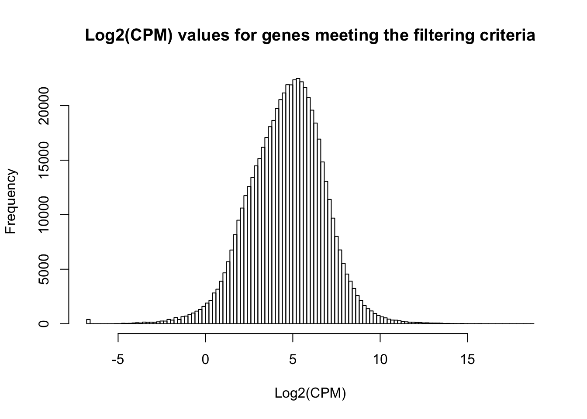
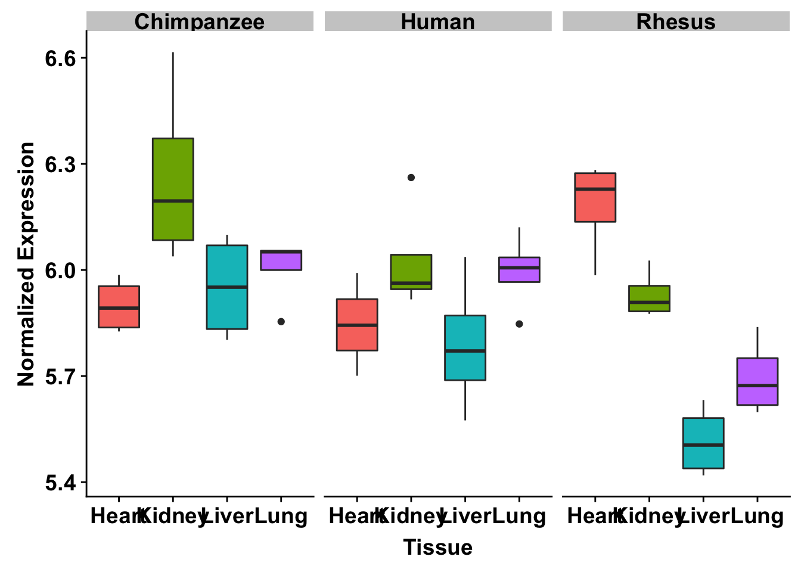
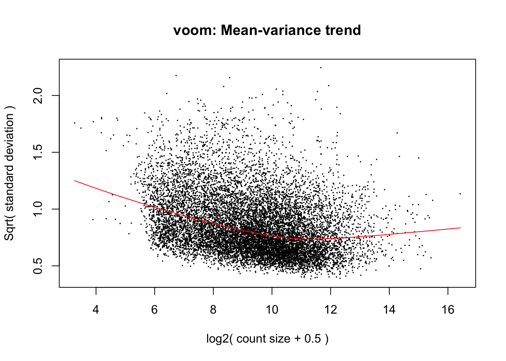
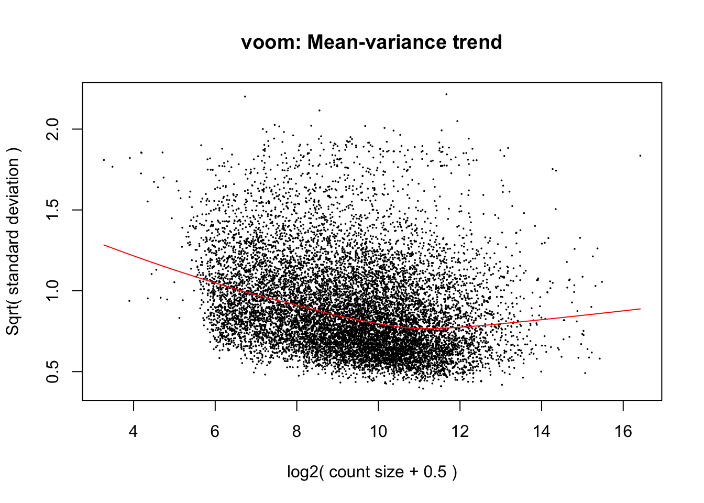
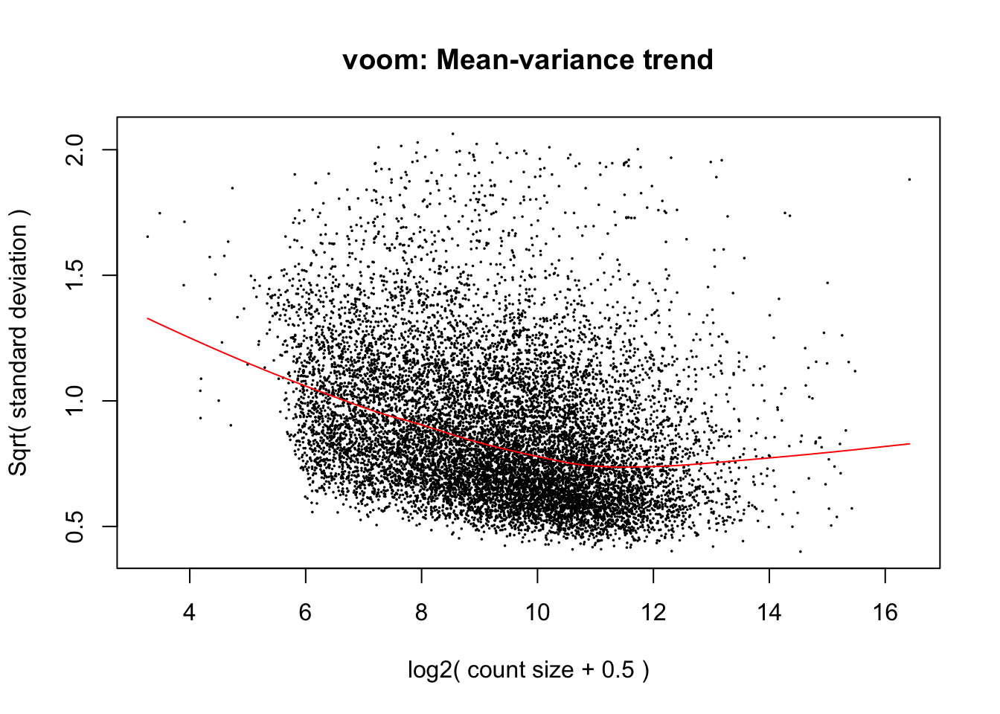

ASH_DE_RIN
Lauren Blake
June 7, 2017
- Pairwise comparisons
- Make Venn Diagrams for directionality using ASH
- Upregulated and downregulated pairwise figure (Supplementary Figure)
- Upregulated and downregulated pairwise species figure (Supplementary Figure)
- Find genes with a tissue-specific direction (significant and upregulated in 1 versus 2, 3, 4 but not significant in 2 v 3, 4 and 3 v 4) with FSR (supplementary tables)
- Find genes with a tissue-specific direction (significant and upregulated in 1 versus 2, 3, 4 but not significant in 2 v 3, 4 and 3 v 4) with FDR
- Species specific 1 direction (supplementary table)
- Experimenting with interactions (3 species, 1 tissue versus a group of 3 tissues)
- Interactions in all 3 species’ hearts versus all other tissues
- Adaptive shrinkage on interactions in all 3 species’ hearts versus all other tissues
- Interactions in all 3 species’ livers versus all other tissues
- Adaptive shrinkage on interactions in all 3 species’ livers versus all other tissues
- Interactions in all 3 species’ lungs versus all other tissues
- Adaptive shrinkage on interactions in all 3 species’ lungs versus all other tissues
- Interactions in all 3 species’ kidneys versus all other tissues
- Tissue-specific interactions (FDR)
- Adaptive shrinkage on interactions in all 3 species’ kidneys versus all other tissues
- Number of interactions using FSR
- Combining humans and chimps to have a Great Ape versus Rhesus tissues set of interactions (Figure 3)
- Combining chimps and rhesus to have a human versus non-human tissues set of interactions
# Load libraries
library("gplots")
Attaching package: 'gplots'The following object is masked from 'package:stats':
lowesslibrary("ggplot2")Warning: package 'ggplot2' was built under R version 3.4.4library("RColorBrewer")
library("scales")Warning: package 'scales' was built under R version 3.4.4library("edgeR")Loading required package: limmalibrary("R.utils")Warning: package 'R.utils' was built under R version 3.4.4Loading required package: R.ooWarning: package 'R.oo' was built under R version 3.4.4Loading required package: R.methodsS3R.methodsS3 v1.7.1 (2016-02-15) successfully loaded. See ?R.methodsS3 for help.R.oo v1.22.0 (2018-04-21) successfully loaded. See ?R.oo for help.
Attaching package: 'R.oo'The following objects are masked from 'package:methods':
getClasses, getMethodsThe following objects are masked from 'package:base':
attach, detach, gc, load, saveR.utils v2.7.0 successfully loaded. See ?R.utils for help.
Attaching package: 'R.utils'The following object is masked from 'package:utils':
timestampThe following objects are masked from 'package:base':
cat, commandArgs, getOption, inherits, isOpen, parse, warningslibrary("plyr")
library("limma")
library("gridExtra")
library("VennDiagram")Warning: package 'VennDiagram' was built under R version 3.4.4Loading required package: gridLoading required package: futile.loggersource("functions.R")
library(ashr)
library(cowplot)Warning: package 'cowplot' was built under R version 3.4.4
Attaching package: 'cowplot'The following object is masked from 'package:ggplot2':
ggsave# Add function for making ggplot2 figures look good (from Bryan Pavlovic)
bjp<-
theme(
panel.border = element_rect(colour = "black", fill = NA, size = 2),
plot.title = element_text(size = 16, face = "bold", hjust = 0.5),
axis.text.y = element_text(size = 14,face = "bold",color = "black"),
axis.text.x = element_text(size = 14,face = "bold",color = "black"),
axis.title.y = element_text(size = 14,face = "bold"),
axis.title.x = element_text(size = 14,face = "bold"),
legend.text = element_text(size = 14,face = "bold"),
legend.title = element_text(size = 14,face = "bold"),
strip.text.x = element_text(size = 14,face = "bold"),
strip.text.y = element_text(size = 14,face = "bold"),
strip.background = element_rect(colour = "black", size = 2))
# Set directory to save the data
data_dir <- "../data"
# Load colors
colors <- colorRampPalette(c(brewer.pal(9, "Blues")[1],brewer.pal(9, "Blues")[9]))(100)
pal <- c(brewer.pal(9, "Set1"), brewer.pal(8, "Set2"), brewer.pal(12, "Set3"))
# Retrieve RIN score for each sample
RNA_seq_info <- read.csv("../../../Reg_Evo_Primates/data/RNA_seq_info.csv")
RIN <- as.data.frame(RNA_seq_info[,22])
RIN <- as.matrix(RIN)
#RIN <- as.data.frame(RIN[-1,])
#RIN <- as.matrix(RIN)
colnames(RIN) <- c("RIN")
# Retrieve sample information
samples <- read.delim("../../../Reg_Evo_Primates/data/Sample_info_RNAseq_limma.txt")
# Eliminate H1H
samples <- samples[-17,]
#samples <- samples[-1,]
dim(samples)[1] 47 4# Make labels
labels <- paste(samples$Species, samples$Tissue, sep=".")Pairwise comparisons
# Load count data
counts_genes_in_cutoff <- read.delim("../../../Reg_Evo_Primates/data/counts_12184.txt")
cpm_12184 <- read.delim("../../../Reg_Evo_Primates/data/cpm_12184.txt")
# TMM
dge_in_cutoff <- DGEList(counts=as.matrix(counts_genes_in_cutoff), genes=rownames(counts_genes_in_cutoff), group = as.character(t(labels)))
dge_in_cutoff <- calcNormFactors(dge_in_cutoff)
cpm_in_cutoff <- cpm(dge_in_cutoff, normalized.lib.sizes=TRUE, log=TRUE)
head(cpm_in_cutoff) C1H C1K C1Li C1Lu C2H C2K
ENSG00000000003 4.569101 6.484481 8.260731 5.481561 4.686636 6.076562
ENSG00000000419 5.842023 5.217972 5.937465 5.478545 5.681016 5.100404
ENSG00000000457 4.560130 5.214732 5.902494 4.972557 4.834031 5.289413
ENSG00000000460 1.506846 1.869887 2.080244 2.308985 1.660573 1.968249
ENSG00000000938 5.611783 3.819613 5.091152 7.550720 2.533135 4.178135
ENSG00000000971 6.877100 4.451824 11.368082 6.100181 6.135730 4.887383
C2Li C2Lu C3H C3K C3Li C3Lu
ENSG00000000003 8.029471 4.564496 4.915377 6.406310 7.784365 5.875983
ENSG00000000419 5.813444 5.199855 5.675979 5.179418 6.413682 5.596709
ENSG00000000457 6.545270 4.985922 4.618657 5.204247 6.498053 5.168988
ENSG00000000460 2.324903 2.023533 1.580465 1.461635 2.344190 2.124699
ENSG00000000938 5.388459 8.083442 4.965147 4.223500 5.204433 7.160345
ENSG00000000971 11.387090 6.246512 5.606820 4.941061 11.420166 5.990777
C4H C4K C4Li C4Lu H1K H1Li
ENSG00000000003 4.235754 6.503717 8.453727 5.430223 6.864660 6.576082
ENSG00000000419 5.785414 5.257938 5.881536 5.321782 5.588152 6.082997
ENSG00000000457 4.645293 5.023223 6.597499 5.263806 4.285007 4.953825
ENSG00000000460 1.456629 1.826787 2.206829 2.476664 2.766766 4.989335
ENSG00000000938 3.638952 3.621239 4.580376 7.717763 4.059344 4.479943
ENSG00000000971 6.845219 5.957838 11.330910 6.421417 6.585546 11.216641
H1Lu H2H H2K H2Li H2Lu H3H
ENSG00000000003 5.099004 3.681088 7.205567 6.638944 4.181104 3.54360583
ENSG00000000419 5.810855 5.606326 5.461678 5.838444 5.313450 5.75090978
ENSG00000000457 4.502116 3.406682 4.158467 4.450840 4.201852 4.44063190
ENSG00000000460 3.318021 1.892216 1.978501 2.657920 2.553081 -0.07576077
ENSG00000000938 7.878166 5.560041 3.740312 5.990299 6.968892 4.09684184
ENSG00000000971 7.561408 6.363288 4.736443 9.409472 7.310814 6.22507411
H3K H3Li H3Lu H4H H4K H4Li
ENSG00000000003 7.091569 7.735945 5.290097 4.284175 6.371782 6.590115
ENSG00000000419 5.854940 6.216818 5.009845 6.244527 5.608088 5.834153
ENSG00000000457 4.722790 4.993719 3.999170 3.312369 4.087480 5.176119
ENSG00000000460 2.990603 3.237751 2.457261 1.629959 1.983141 3.137731
ENSG00000000938 2.643134 5.741066 6.912746 4.918491 3.820852 6.899117
ENSG00000000971 5.313255 10.346500 7.124250 6.927089 6.032612 10.197598
H4Lu R1H R1K R1Li R1Lu R2H
ENSG00000000003 4.463456 4.356369 6.932932 8.3343252 5.915547 4.625348
ENSG00000000419 5.350423 5.464082 5.391834 5.8259430 4.887057 5.295517
ENSG00000000457 4.173647 4.285211 5.024853 5.1435415 4.837373 4.311664
ENSG00000000460 2.604439 1.284359 1.555258 -0.1735364 2.480549 1.415808
ENSG00000000938 8.249002 1.837210 2.564210 3.8041639 6.515323 2.327061
ENSG00000000971 8.277236 4.027912 6.576019 12.1322643 7.445976 5.571685
R2K R2Li R2Lu R3H R3K R3Li
ENSG00000000003 7.134183 8.640291 5.654663 4.469039 7.166047 8.202424
ENSG00000000419 5.043831 5.723120 4.881450 5.462958 5.367362 5.990303
ENSG00000000457 5.154832 5.511121 5.265617 4.241449 5.139792 5.359535
ENSG00000000460 1.320003 1.496941 2.394895 1.656614 1.874414 1.413727
ENSG00000000938 2.681748 3.672247 6.583375 2.870792 2.267214 3.636318
ENSG00000000971 6.778700 11.778253 7.231996 5.150488 6.054215 12.087241
R3Lu R4H R4K R4Li R4Lu
ENSG00000000003 5.453490 4.892515 7.094406 7.705335 5.361237
ENSG00000000419 4.956114 5.427374 5.215706 5.464168 5.041757
ENSG00000000457 5.165431 4.509684 5.144266 5.318210 4.828352
ENSG00000000460 2.577251 1.088179 1.509418 1.534185 2.847559
ENSG00000000938 6.845883 2.474777 2.310571 4.509304 6.834845
ENSG00000000971 7.258258 6.408881 6.469038 11.695479 7.298202hist(cpm_in_cutoff, xlab = "Log2(CPM)", main = "Log2(CPM) values for genes meeting the filtering criteria", breaks = 100 )
# Make a design matrix
tissue <- samples$Tissue
species <- samples$Species
design <- model.matrix(~ tissue*species + RIN)
colnames(design)[1] <- "Intercept"
# Rename columns of the contrast matrix
colnames(design)[2] <- "kidney"
colnames(design)[3] <- "liver"
colnames(design)[4] <- "lung"
colnames(design)[5] <- "human"
colnames(design)[6] <- "rhesus"
colnames(design)[8] <- "kidneyHuman"
colnames(design)[9] <- "liverHuman"
colnames(design)[10] <- "lungHuman"
colnames(design)[11] <- "kidneyRhesus"
colnames(design)[12] <- "liverRhesus"
colnames(design)[13] <- "lungRhesus"
# Look at the number of samples in each column
colSums(design) Intercept kidney liver lung human
47.0 12.0 12.0 12.0 15.0
rhesus RIN kidneyHuman liverHuman lungHuman
16.0 368.2 4.0 4.0 4.0
kidneyRhesus liverRhesus lungRhesus
4.0 4.0 4.0 # Voom with individual as a random variable
cpm.voom.cyclic <- voom(dge_in_cutoff, design, normalize.method="cyclicloess", plot=T)#corfit <- duplicateCorrelation(cpm.voom.cyclic, design, block=samples$Individual)
corfit.consensus <- 0.2197275
# Final voom on filtered data
cpm.voom.cyclic <- voom(dge_in_cutoff, design, normalize.method="cyclicloess", plot=TRUE, block=samples$Individual, correlation=corfit.consensus)# Save
update_gene_pcs <- prcomp(t(cpm.voom.cyclic$E), scale = T)
pc_values <- update_gene_pcs$x
summary(lm(pc_values[,1]~as.factor(RNA_seq_info$Tissue)))
Call:
lm(formula = pc_values[, 1] ~ as.factor(RNA_seq_info$Tissue))
Residuals:
Min 1Q Median 3Q Max
-57.834 -12.655 -2.726 16.612 39.530
Coefficients:
Estimate Std. Error t value Pr(>|t|)
(Intercept) -29.426 7.000 -4.204 0.00013
as.factor(RNA_seq_info$Tissue)kidney 37.050 9.691 3.823 0.00042
as.factor(RNA_seq_info$Tissue)liver 99.239 9.691 10.241 4.17e-13
as.factor(RNA_seq_info$Tissue)lung -21.037 9.691 -2.171 0.03551
(Intercept) ***
as.factor(RNA_seq_info$Tissue)kidney ***
as.factor(RNA_seq_info$Tissue)liver ***
as.factor(RNA_seq_info$Tissue)lung *
---
Signif. codes: 0 '***' 0.001 '**' 0.01 '*' 0.05 '.' 0.1 ' ' 1
Residual standard error: 23.22 on 43 degrees of freedom
Multiple R-squared: 0.8107, Adjusted R-squared: 0.7975
F-statistic: 61.4 on 3 and 43 DF, p-value: 1.381e-15summary(lm(pc_values[,2]~as.factor(RNA_seq_info$Species)))
Call:
lm(formula = pc_values[, 2] ~ as.factor(RNA_seq_info$Species))
Residuals:
Min 1Q Median 3Q Max
-82.003 -11.884 8.865 26.961 48.082
Coefficients:
Estimate Std. Error t value
(Intercept) 8.829 10.090 0.875
as.factor(RNA_seq_info$Species)human 15.606 14.505 1.076
as.factor(RNA_seq_info$Species)rhesus macaque -40.565 14.269 -2.843
Pr(>|t|)
(Intercept) 0.38633
as.factor(RNA_seq_info$Species)human 0.28783
as.factor(RNA_seq_info$Species)rhesus macaque 0.00676 **
---
Signif. codes: 0 '***' 0.001 '**' 0.01 '*' 0.05 '.' 0.1 ' ' 1
Residual standard error: 40.36 on 44 degrees of freedom
Multiple R-squared: 0.2686, Adjusted R-squared: 0.2353
F-statistic: 8.078 on 2 and 44 DF, p-value: 0.001027summary(lm(pc_values[,2]~as.factor(RNA_seq_info$Tissue)))
Call:
lm(formula = pc_values[, 2] ~ as.factor(RNA_seq_info$Tissue))
Residuals:
Min 1Q Median 3Q Max
-47.685 -22.275 6.966 14.536 52.703
Coefficients:
Estimate Std. Error t value Pr(>|t|)
(Intercept) -66.054 7.831 -8.435 1.16e-10
as.factor(RNA_seq_info$Tissue)kidney 68.289 10.841 6.299 1.34e-07
as.factor(RNA_seq_info$Tissue)liver 90.522 10.841 8.350 1.52e-10
as.factor(RNA_seq_info$Tissue)lung 99.901 10.841 9.215 9.72e-12
(Intercept) ***
as.factor(RNA_seq_info$Tissue)kidney ***
as.factor(RNA_seq_info$Tissue)liver ***
as.factor(RNA_seq_info$Tissue)lung ***
---
Signif. codes: 0 '***' 0.001 '**' 0.01 '*' 0.05 '.' 0.1 ' ' 1
Residual standard error: 25.97 on 43 degrees of freedom
Multiple R-squared: 0.704, Adjusted R-squared: 0.6834
F-statistic: 34.09 on 3 and 43 DF, p-value: 1.934e-11Fit the linear model
fit.cyclic.norm <- lmFit(cpm.voom.cyclic, design, plot = TRUE, block=samples$Individual, correlation=corfit.consensus)
fit.cyclic.norm <- eBayes(fit.cyclic.norm)
# MA Plots
## If 'MA' is an 'MArrayLM' object, then the plot is a fitted model MA-plot in which the estimated coefficient is on the y-axis and the average A-value is on the x-axis.
#limma::plotMA(fit.cyclic.norm, array=1, xlab="average coefficient", ylab="estimated coefficient")
## - Potential caveat: variances could be different between human, chimp and rhesus (see Gordon Smyth email, 7 June 2013).
## We look at the standard error for each condition
hist(fit.cyclic.norm$stdev.unscaled * fit.cyclic.norm$sigma, breaks=100)hist(log2(fit.cyclic.norm$stdev.unscaled * fit.cyclic.norm$sigma), breaks=100)
boxplot(log2(fit.cyclic.norm$stdev.unscaled * fit.cyclic.norm$sigma))## This seems to be pretty comparable between conditions. The human heart is higher, probably because of H1H missing and H3H with a bit strange behavior
stderror <- log2(fit.cyclic.norm$stdev.unscaled * fit.cyclic.norm$sigma)
boxplot(list(stderror[,1:4], stderror[,5:8], stderror[,9:12]))
## A bit higher for human, and a bit lower for rhesus
boxplot(list(stderror[,2:4], stderror[,6:8], stderror[,8:12])) ## excluding heart samples 
# In the contrast matrix, we have many comparisons for species and tissues individually
# Note: baseline is chimp heart
cm1 <- makeContrasts(HvC_Liver = human + liverHuman,
HvC_Lung = human + lungHuman,
HvC_Heart = human,
HvC_Kidney = human + kidneyHuman,
HvR_Liver = human + liverHuman - (rhesus + liverRhesus),
HvR_Lung = human + lungHuman - (rhesus + lungRhesus),
HvR_Heart = human - rhesus,
HvR_Kidney = human + kidneyHuman - (rhesus + kidneyRhesus),
CvR_Liver = -(rhesus + liverRhesus),
CvR_Lung = -(rhesus + lungRhesus),
CvR_Heart = -(rhesus),
CvR_Kidney = -(rhesus + kidneyRhesus),
H_HeartvLi = (human) - (human + liver + liverHuman),
H_HeartvLu = (human) - (human + lung + lungHuman),
H_HeartvK = (human) - (human + kidney + kidneyHuman),
H_LivLu = (human + liver + liverHuman) - (human + lung + lungHuman),
H_LivK = (human + liver + liverHuman) - (human + kidney + kidneyHuman),
H_LuvK = (human + lung + lungHuman) - (human + kidney + kidneyHuman),
C_HeartvLi = -(liver),
C_HeartvLu = -(lung),
C_HeartvK = -(kidney),
C_LivLu = liver - lung,
C_LivK = liver - kidney,
C_LuvK = lung - kidney,
R_HeartvLi = (rhesus) - (rhesus + liver + liverRhesus),
R_HeartvLu = (rhesus) - (rhesus + lung + lungRhesus),
R_HeartvK = (rhesus) - (rhesus + kidney + kidneyRhesus),
R_LivLu = (rhesus + liver + liverRhesus) - (rhesus + lung + lungRhesus),
R_LivK = (rhesus + liver + liverRhesus) - (rhesus + kidney + kidneyRhesus),
R_LuvK = (rhesus + lung + lungRhesus) - (rhesus + kidney + kidneyRhesus),
HK_inter = kidneyHuman,
HLi_inter = liverHuman,
HLu_inter = lungHuman,
RK_inter = kidneyRhesus,
RLi_inter = liverRhesus,
RLu_inter = lungRhesus,
HRK_inter = kidneyHuman - kidneyRhesus,
HRLi_inter = liverHuman -liverRhesus,
HRLu_inter = lungHuman - lungRhesus,
levels = design)
# Implement contrasts
contrasts_each_species <- contrasts.fit(fit.cyclic.norm, cm1)
fit1 <- eBayes(contrasts_each_species)
top3 <- list(HvC_Liver =topTable(fit1, coef=1, adjust="BH", number=Inf, sort.by="none"),
HvC_Lung =topTable(fit1, coef=2, adjust="BH", number=Inf, sort.by="none"),
HvC_Heart =topTable(fit1, coef=3, adjust="BH", number=Inf, sort.by="none"),
HvC_Kidney =topTable(fit1, coef=4, adjust="BH", number=Inf, sort.by="none"),
HvR_Liver =topTable(fit1, coef=5, adjust="BH", number=Inf, sort.by="none"),
HvR_Lung =topTable(fit1, coef=6, adjust="BH", number=Inf, sort.by="none"),
HvR_Heart =topTable(fit1, coef=7, adjust="BH", number=Inf, sort.by="none"),
HvR_Kidney =topTable(fit1, coef=8, adjust="BH", number=Inf, sort.by="none"),
CvR_Liver =topTable(fit1, coef=9, adjust="BH", number=Inf, sort.by="none"),
CvR_Lung =topTable(fit1, coef=10, adjust="BH", number=Inf, sort.by="none"),
CvR_Heart =topTable(fit1, coef=11, adjust="BH", number=Inf, sort.by="none"),
CvR_Kidney =topTable(fit1, coef=12, adjust="BH", number=Inf, sort.by="none"),
H_HeartvLi =topTable(fit1, coef=13, adjust="BH", number=Inf, sort.by="none"),
H_HeartvLu =topTable(fit1, coef=14, adjust="BH", number=Inf, sort.by="none"),
H_HeartvK =topTable(fit1, coef=15, adjust="BH", number=Inf, sort.by="none"),
H_LivLu =topTable(fit1, coef=16, adjust="BH", number=Inf, sort.by="none"),
H_LivK =topTable(fit1, coef=17, adjust="BH", number=Inf, sort.by="none"),
H_LuvK =topTable(fit1, coef=18, adjust="BH", number=Inf, sort.by="none"),
C_HeartvLi =topTable(fit1, coef=19, adjust="BH", number=Inf, sort.by="none"),
C_HeartvLu =topTable(fit1, coef=20, adjust="BH", number=Inf, sort.by="none"),
C_HeartvK =topTable(fit1, coef=21, adjust="BH", number=Inf, sort.by="none"),
C_LivLu =topTable(fit1, coef=22, adjust="BH", number=Inf, sort.by="none"),
C_LivK =topTable(fit1, coef=23, adjust="BH", number=Inf, sort.by="none"),
C_LuvK =topTable(fit1, coef=24, adjust="BH", number=Inf, sort.by="none"),
R_HeartvLi =topTable(fit1, coef=25, adjust="BH", number=Inf, sort.by="none"),
R_HeartvLu =topTable(fit1, coef=26, adjust="BH", number=Inf, sort.by="none"),
R_HeartvK =topTable(fit1, coef=27, adjust="BH", number=Inf, sort.by="none"),
R_LivLu =topTable(fit1, coef=28, adjust="BH", number=Inf, sort.by="none"),
R_LivK =topTable(fit1, coef=29, adjust="BH", number=Inf, sort.by="none"),
R_LuvK =topTable(fit1, coef=30, adjust="BH", number=Inf, sort.by="none"),
HK_inter =topTable(fit1, coef=31, adjust="BH", number=Inf, sort.by="none"),
HLi_inter =topTable(fit1, coef=32, adjust="BH", number=Inf, sort.by="none"),
HLu_inter =topTable(fit1, coef=33, adjust="BH", number=Inf, sort.by="none"),
RK_inter =topTable(fit1, coef=34, adjust="BH", number=Inf, sort.by="none"),
RLi_inter =topTable(fit1, coef=35, adjust="BH", number=Inf, sort.by="none"),
RLu_inter =topTable(fit1, coef=36, adjust="BH", number=Inf, sort.by="none"),
HRK_inter =topTable(fit1, coef=37, adjust="BH", number=Inf, sort.by="none"),
HRLi_inter =topTable(fit1, coef=38, adjust="BH", number=Inf, sort.by="none"),
HRLu_inter =topTable(fit1, coef=39, adjust="BH", number=Inf, sort.by="none"))
# Set FDR level at 1%
FDR_level <- 0.01
## DE between HvC
HvC_Liver =topTable(fit1, coef=1, adjust="BH", number=Inf, sort.by="none")
dim(HvC_Liver[which(HvC_Liver$adj.P.Val < FDR_level), ]) [1] 1364 7HvC_Lung =topTable(fit1, coef=2, adjust="BH", number=Inf, sort.by="none")
dim(HvC_Lung[which(HvC_Lung$adj.P.Val < FDR_level), ]) [1] 805 7HvC_Heart =topTable(fit1, coef=3, adjust="BH", number=Inf, sort.by="none")
dim(HvC_Heart[which(HvC_Heart$adj.P.Val < FDR_level), ]) [1] 2195 7HvC_Kidney =topTable(fit1, coef=4, adjust="BH", number=Inf, sort.by="none")
dim(HvC_Kidney[which(HvC_Kidney$adj.P.Val < FDR_level), ]) [1] 799 7mylist <- list()
mylist[["Liver"]] <- row.names(top3[[names(top3)[1]]])[top3[[names(top3)[1]]]$adj.P.Val < FDR_level]
mylist[["Lung"]] <- row.names(top3[[names(top3)[2]]])[top3[[names(top3)[2]]]$adj.P.Val < FDR_level]
mylist[["Heart"]] <- row.names(top3[[names(top3)[3]]])[top3[[names(top3)[3]]]$adj.P.Val < FDR_level]
mylist[["Kidney"]] <- row.names(top3[[names(top3)[4]]])[top3[[names(top3)[4]]]$adj.P.Val < FDR_level]
# Make
dev.off()null device
1 Four_comp <- venn.diagram(mylist, filename= NULL, main="DE genes between Humans and Chimps (FDR 1%)", cex=1.5 , fill = pal[1:4], lty=1, height=2000, width=3000, fontfamily = "sans", cat.fontfamily = "sans", main.fontfamily = "sans", cat.fontface = "bold", main.fontface = "bold", cat.cex = 1.2, main.cex = 1.5)
grid.draw(Four_comp)
## DE between HvR
HvR_Liver =topTable(fit1, coef=5, adjust="BH", number=Inf, sort.by="none")
dim(HvR_Liver[which(HvR_Liver$adj.P.Val < FDR_level), ]) [1] 2868 7HvR_Lung =topTable(fit1, coef=6, adjust="BH", number=Inf, sort.by="none")
dim(HvR_Lung[which(HvR_Lung$adj.P.Val < FDR_level), ]) [1] 2833 7HvR_Heart =topTable(fit1, coef=7, adjust="BH", number=Inf, sort.by="none")
dim(HvR_Heart[which(HvR_Heart$adj.P.Val < FDR_level), ]) [1] 4098 7HvR_Kidney =topTable(fit1, coef=8, adjust="BH", number=Inf, sort.by="none")
dim(HvR_Kidney[which(HvR_Kidney$adj.P.Val < FDR_level), ]) [1] 2347 7mylist <- list()
mylist[["Liver"]] <- row.names(top3[[names(top3)[5]]])[top3[[names(top3)[5]]]$adj.P.Val < FDR_level]
mylist[["Lung"]] <- row.names(top3[[names(top3)[6]]])[top3[[names(top3)[6]]]$adj.P.Val < FDR_level]
mylist[["Heart"]] <- row.names(top3[[names(top3)[7]]])[top3[[names(top3)[7]]]$adj.P.Val < FDR_level]
mylist[["Kidney"]] <- row.names(top3[[names(top3)[8]]])[top3[[names(top3)[8]]]$adj.P.Val < FDR_level]
# Make
dev.off()null device
1 Four_comp <- venn.diagram(mylist, filename= NULL, main="DE genes between Humans and Rhesus (FDR 1%)", cex=1.5 , fill = pal[1:4], lty=1, height=2000, width=3000)
grid.draw(Four_comp)
## DE between CvR
CvR_Liver =topTable(fit1, coef=9, adjust="BH", number=Inf, sort.by="none")
dim(CvR_Liver[which(CvR_Liver$adj.P.Val < FDR_level), ]) [1] 3139 7CvR_Lung =topTable(fit1, coef=10, adjust="BH", number=Inf, sort.by="none")
dim(CvR_Lung[which(CvR_Lung$adj.P.Val < FDR_level), ]) [1] 1917 7CvR_Heart =topTable(fit1, coef=11, adjust="BH", number=Inf, sort.by="none")
dim(CvR_Heart[which(CvR_Heart$adj.P.Val < FDR_level), ]) [1] 3218 7CvR_Kidney =topTable(fit1, coef=12, adjust="BH", number=Inf, sort.by="none")
dim(CvR_Kidney[which(CvR_Kidney$adj.P.Val < FDR_level), ]) [1] 2695 7mylist <- list()
mylist[["Liver"]] <- row.names(top3[[names(top3)[9]]])[top3[[names(top3)[9]]]$adj.P.Val < FDR_level]
mylist[["Lung"]] <- row.names(top3[[names(top3)[10]]])[top3[[names(top3)[10]]]$adj.P.Val < FDR_level]
mylist[["Heart"]] <- row.names(top3[[names(top3)[11]]])[top3[[names(top3)[11]]]$adj.P.Val < FDR_level]
mylist[["Kidney"]] <- row.names(top3[[names(top3)[12]]])[top3[[names(top3)[12]]]$adj.P.Val < FDR_level]
# Make
dev.off()null device
1 Four_comp <- venn.diagram(mylist, filename= NULL, main="DE genes between Chimps and Rhesus (FDR 1%)", cex=1.5 , fill = pal[1:4], lty=1, height=2000, width=3000)
grid.draw(Four_comp)
# DE between tissues within a species
# Within humans
H_HeartvLi =topTable(fit1, coef=13, adjust="BH", number=Inf, sort.by="none")
dim(H_HeartvLi[which(H_HeartvLi$adj.P.Val < FDR_level), ]) [1] 4776 7H_HeartvLu =topTable(fit1, coef=14, adjust="BH", number=Inf, sort.by="none")
dim(H_HeartvLu[which(H_HeartvLu$adj.P.Val < FDR_level), ]) [1] 4037 7H_HeartvK =topTable(fit1, coef=15, adjust="BH", number=Inf, sort.by="none")
dim(H_HeartvK[which(H_HeartvK$adj.P.Val < FDR_level), ]) [1] 4224 7H_LivLu =topTable(fit1, coef=16, adjust="BH", number=Inf, sort.by="none")
dim(H_LivLu[which(H_LivLu$adj.P.Val < FDR_level), ]) [1] 4701 7H_LivK =topTable(fit1, coef=17, adjust="BH", number=Inf, sort.by="none")
dim(H_LivK[which(H_LivK$adj.P.Val < FDR_level), ]) [1] 4248 7H_LuvK =topTable(fit1, coef=18, adjust="BH", number=Inf, sort.by="none")
dim(H_LuvK[which(H_LuvK$adj.P.Val < FDR_level), ]) [1] 3695 7 # Within chimps
C_HeartvLi =topTable(fit1, coef=19, adjust="BH", number=Inf, sort.by="none")
dim(C_HeartvLi[which(C_HeartvLi$adj.P.Val < FDR_level), ]) [1] 6295 7C_HeartvLu =topTable(fit1, coef=20, adjust="BH", number=Inf, sort.by="none")
dim(C_HeartvLu[which(C_HeartvLu$adj.P.Val < FDR_level), ]) [1] 5365 7C_HeartvK =topTable(fit1, coef=21, adjust="BH", number=Inf, sort.by="none")
dim(C_HeartvK[which(C_HeartvK$adj.P.Val < FDR_level), ]) [1] 4971 7C_LivLu =topTable(fit1, coef=22, adjust="BH", number=Inf, sort.by="none")
dim(C_LivLu[which(C_LivLu$adj.P.Val < FDR_level), ]) [1] 6247 7C_LivK =topTable(fit1, coef=23, adjust="BH", number=Inf, sort.by="none")
dim(C_LivK[which(C_LivK$adj.P.Val < FDR_level), ]) [1] 4625 7C_LuvK =topTable(fit1, coef=24, adjust="BH", number=Inf, sort.by="none")
dim(C_LuvK[which(C_LuvK$adj.P.Val < FDR_level), ]) [1] 4623 7 # Within rhesus
R_HeartvLi =topTable(fit1, coef=25, adjust="BH", number=Inf, sort.by="none")
dim(R_HeartvLi[which(R_HeartvLi$adj.P.Val < FDR_level), ]) [1] 6933 7R_HeartvLu =topTable(fit1, coef=26, adjust="BH", number=Inf, sort.by="none")
dim(R_HeartvLu[which(R_HeartvLu$adj.P.Val < FDR_level), ]) [1] 6814 7R_HeartvK =topTable(fit1, coef=27, adjust="BH", number=Inf, sort.by="none")
dim(R_HeartvK[which(R_HeartvK$adj.P.Val < FDR_level), ]) [1] 5980 7R_LivLu =topTable(fit1, coef=28, adjust="BH", number=Inf, sort.by="none")
dim(R_LivLu[which(R_LivLu$adj.P.Val < FDR_level), ]) [1] 7027 7R_LivK =topTable(fit1, coef=29, adjust="BH", number=Inf, sort.by="none")
dim(R_LivK[which(R_LivK$adj.P.Val < FDR_level), ]) [1] 5126 7R_LuvK =topTable(fit1, coef=30, adjust="BH", number=Inf, sort.by="none")
dim(R_LuvK[which(R_LuvK$adj.P.Val < FDR_level), ]) [1] 5721 7## DE between Heart and Liver
mylist <- list()
mylist[["Human"]] <- row.names(top3[[names(top3)[13]]])[top3[[names(top3)[13]]]$adj.P.Val < FDR_level]
mylist[["Chimp"]] <- row.names(top3[[names(top3)[19]]])[top3[[names(top3)[19]]]$adj.P.Val < FDR_level]
mylist[["Rhesus"]] <- row.names(top3[[names(top3)[25]]])[top3[[names(top3)[25]]]$adj.P.Val < FDR_level]
# Make
dev.off()null device
1 Four_comp <- venn.diagram(mylist, filename= NULL, main="DE genes between Heart and Liver (FDR 1%)", cex=1.5 , fill = pal[1:3], lty=1, height=2000, width=3000)
grid.draw(Four_comp)
## DE between Heart and Lung
mylist <- list()
mylist[["Human"]] <- row.names(top3[[names(top3)[14]]])[top3[[names(top3)[14]]]$adj.P.Val < FDR_level]
mylist[["Chimp"]] <- row.names(top3[[names(top3)[20]]])[top3[[names(top3)[20]]]$adj.P.Val < FDR_level]
mylist[["Rhesus"]] <- row.names(top3[[names(top3)[26]]])[top3[[names(top3)[26]]]$adj.P.Val < FDR_level]
# Make
dev.off()null device
1 Four_comp <- venn.diagram(mylist, filename= NULL, main="DE genes between Heart and Lung (FDR 1%)", cex=1.5 , fill = pal[1:3], lty=1, height=2000, width=3000)
grid.draw(Four_comp)
## DE between Heart and Kidney
mylist <- list()
mylist[["Human"]] <- row.names(top3[[names(top3)[15]]])[top3[[names(top3)[15]]]$adj.P.Val < FDR_level]
mylist[["Chimp"]] <- row.names(top3[[names(top3)[21]]])[top3[[names(top3)[21]]]$adj.P.Val < FDR_level]
mylist[["Rhesus"]] <- row.names(top3[[names(top3)[27]]])[top3[[names(top3)[27]]]$adj.P.Val < FDR_level]
# Make
dev.off()null device
1 Four_comp <- venn.diagram(mylist, filename= NULL, main="DE genes between Heart and Kidney (FDR 1%)", cex=1.5 , fill = pal[1:3], lty=1, height=2000, width=3000)
grid.draw(Four_comp)
## DE between Liver and Lung
mylist <- list()
mylist[["Human"]] <- row.names(top3[[names(top3)[16]]])[top3[[names(top3)[16]]]$adj.P.Val < FDR_level]
mylist[["Chimp"]] <- row.names(top3[[names(top3)[22]]])[top3[[names(top3)[22]]]$adj.P.Val < FDR_level]
mylist[["Rhesus"]] <- row.names(top3[[names(top3)[28]]])[top3[[names(top3)[28]]]$adj.P.Val < FDR_level]
# Make
dev.off()null device
1 Four_comp <- venn.diagram(mylist, filename= NULL, main="DE genes between Liver and Lung (FDR 1%)", cex=1.5 , fill = pal[1:3], lty=1, height=2000, width=3000)
grid.draw(Four_comp)
## DE between Liver and Kidney
mylist <- list()
mylist[["Human"]] <- row.names(top3[[names(top3)[17]]])[top3[[names(top3)[17]]]$adj.P.Val < FDR_level]
mylist[["Chimp"]] <- row.names(top3[[names(top3)[23]]])[top3[[names(top3)[23]]]$adj.P.Val < FDR_level]
mylist[["Rhesus"]] <- row.names(top3[[names(top3)[29]]])[top3[[names(top3)[29]]]$adj.P.Val < FDR_level]
# Make
dev.off()null device
1 Four_comp <- venn.diagram(mylist, filename= NULL, main="DE genes between Liver and Kidney (FDR 1%)", cex=1.5, lty=1, height=2000, width=3000)
grid.draw(Four_comp)
## DE between Lung and Kidney
mylist <- list()
mylist[["Human"]] <- row.names(top3[[names(top3)[18]]])[top3[[names(top3)[18]]]$adj.P.Val < FDR_level]
mylist[["Chimp"]] <- row.names(top3[[names(top3)[24]]])[top3[[names(top3)[24]]]$adj.P.Val < FDR_level]
mylist[["Rhesus"]] <- row.names(top3[[names(top3)[30]]])[top3[[names(top3)[30]]]$adj.P.Val < FDR_level]
# Make
dev.off()null device
1 Four_comp <- venn.diagram(mylist, filename= NULL, main="DE genes between Lung and Kidney (FDR 1%)", cex=1.5, fill = pal[1:3], lty=1, height=2000, width=3000)
grid.draw(Four_comp) # Within humans
#H_HeartvLi =topTable(fit1, coef=13, adjust="BH", number=Inf, sort.by="none")
#dim(H_HeartvLi[which(H_HeartvLi$adj.P.Val < FDR_level), ])
human_h_li <- H_HeartvLi[which(H_HeartvLi$adj.P.Val < FDR_level), ]
human_h_lu <- H_HeartvLu[which(H_HeartvLu$adj.P.Val < FDR_level), ]
human_h_k <- H_HeartvK[which(H_HeartvK$adj.P.Val < FDR_level), ]
human_li_lu <- H_LivLu[which(H_LivLu$adj.P.Val < FDR_level), ]
human_li_k <- H_LivK[which(H_LivK$adj.P.Val < FDR_level), ]
human_lu_k <- H_LuvK[which(H_LuvK$adj.P.Val < FDR_level), ]
heart_only <- intersect(intersect(rownames(human_h_li), rownames(human_h_lu)), rownames(human_h_k))
not_heart <- union(union(rownames(human_li_lu), rownames(human_li_k)), rownames(human_lu_k))
human_heart_only <- setdiff(heart_only, not_heart)
chimp_h_li <- C_HeartvLi[which(C_HeartvLi$adj.P.Val < FDR_level), ]
chimp_h_lu <- C_HeartvLu[which(C_HeartvLu$adj.P.Val < FDR_level), ]
chimp_h_k <- C_HeartvK[which(C_HeartvK$adj.P.Val < FDR_level), ]
chimp_li_lu <- C_LivLu[which(C_LivLu$adj.P.Val < FDR_level), ]
chimp_li_k <- C_LivK[which(C_LivK$adj.P.Val < FDR_level), ]
chimp_lu_k <- C_LuvK[which(C_LuvK$adj.P.Val < FDR_level), ]
heart_only <- intersect(intersect(rownames(chimp_h_li), rownames(chimp_h_lu)), rownames(chimp_h_k))
not_heart <- union(union(rownames(chimp_li_lu), rownames(chimp_li_k)), rownames(chimp_lu_k))
chimp_heart_only <- setdiff(heart_only, not_heart)
rhesus_h_li <- R_HeartvLi[which(R_HeartvLi$adj.P.Val < FDR_level), ]
rhesus_h_lu <- R_HeartvLu[which(R_HeartvLu$adj.P.Val < FDR_level), ]
rhesus_h_k <- R_HeartvK[which(R_HeartvK$adj.P.Val < FDR_level), ]
rhesus_li_lu <- R_LivLu[which(R_LivLu$adj.P.Val < FDR_level), ]
rhesus_li_k <- R_LivK[which(R_LivK$adj.P.Val < FDR_level), ]
rhesus_lu_k <- R_LuvK[which(R_LuvK$adj.P.Val < FDR_level), ]
heart_only <- intersect(intersect(rownames(rhesus_h_li), rownames(rhesus_h_lu)), rownames(rhesus_h_k))
not_heart <- union(union(rownames(rhesus_li_lu), rownames(rhesus_li_k)), rownames(rhesus_lu_k))
rhesus_heart_only <- setdiff(heart_only, not_heart)Make Venn Diagrams for directionality using ASH
In this section, we are going to detect genes that have differences in the same direction (false sign rate = 1%).
Run ASH
# Prepare the data for ASH
tests <- colnames(fit1$coefficients)
results <- vector(length = length(tests), mode = "list")
names(results) <- tests
# Perform multiple testing correction with adaptive shrinkage (ASH)
#
# x - object MArrayLM from eBayes output
# coef - coefficient tested by eBayes
run_ash <- function(x, coef){
#stopifnot(class(x) == "MArrayLM", coef %in% colnames(x$coefficients),
# length(unique(x$df.total) == 1))
result <- ash(betahat = x$coefficients[, coef], sebetahat = x$stdev.unscaled[, coef] * sqrt(x$s2.post), df = x$df.total[1])
return(result)
}
get_results <- function(x, number = nrow(x$coefficients), sort.by = "none",
...) {
# x - object MArrayLM from eBayes output
# ... - additional arguments passed to topTable
stopifnot(class(x) == "MArrayLM")
results <- topTable(x, number = number, sort.by = sort.by, ...)
return(results)
}
# Get lfsr, lfdr, s value, q value, and a beta_est value.
for (test in tests) {
# Extract limma results
results[[test]] <- get_results(fit1, coef = test)
# Add mutliple testing correction with ASH
output_ash <- run_ash(fit1, coef = test)
results[[test]] <- cbind(results[[test]], sebetahat = output_ash$data$s, lfsr = output_ash$result$lfsr,
lfdr = output_ash$result$lfdr, qvalue = output_ash$result$qvalue,
svalue = output_ash$result$svalue, beta_est = output_ash$result$PosteriorMean, se_est =
output_ash$result$PosteriorSD)
}Due to absence of package REBayes, switching to EM algorithm
Due to absence of package REBayes, switching to EM algorithm
Due to absence of package REBayes, switching to EM algorithm
Due to absence of package REBayes, switching to EM algorithm
Due to absence of package REBayes, switching to EM algorithm
Due to absence of package REBayes, switching to EM algorithm
Due to absence of package REBayes, switching to EM algorithm
Due to absence of package REBayes, switching to EM algorithm
Due to absence of package REBayes, switching to EM algorithm
Due to absence of package REBayes, switching to EM algorithm
Due to absence of package REBayes, switching to EM algorithm
Due to absence of package REBayes, switching to EM algorithm
Due to absence of package REBayes, switching to EM algorithm
Due to absence of package REBayes, switching to EM algorithm
Due to absence of package REBayes, switching to EM algorithm
Due to absence of package REBayes, switching to EM algorithm
Due to absence of package REBayes, switching to EM algorithm
Due to absence of package REBayes, switching to EM algorithm
Due to absence of package REBayes, switching to EM algorithm
Due to absence of package REBayes, switching to EM algorithm
Due to absence of package REBayes, switching to EM algorithm
Due to absence of package REBayes, switching to EM algorithm
Due to absence of package REBayes, switching to EM algorithm
Due to absence of package REBayes, switching to EM algorithm
Due to absence of package REBayes, switching to EM algorithm
Due to absence of package REBayes, switching to EM algorithm
Due to absence of package REBayes, switching to EM algorithm
Due to absence of package REBayes, switching to EM algorithm
Due to absence of package REBayes, switching to EM algorithm
Due to absence of package REBayes, switching to EM algorithm
Due to absence of package REBayes, switching to EM algorithm
Due to absence of package REBayes, switching to EM algorithm
Due to absence of package REBayes, switching to EM algorithm
Due to absence of package REBayes, switching to EM algorithm
Due to absence of package REBayes, switching to EM algorithm
Due to absence of package REBayes, switching to EM algorithm
Due to absence of package REBayes, switching to EM algorithm
Due to absence of package REBayes, switching to EM algorithm
Due to absence of package REBayes, switching to EM algorithm# Save results from analysis with limma and ash.
#saveRDS(results, file.path(data_dir, "combined-limma.rds"))
# Get the FSR for all genes in all comparisons
#results <- readRDS("../data/combined-limma.rds")
#write.csv(results, file = "../data/pairwise_FSR.csv")Find where the genes are upregulated between tissues
# Set false sign rate
FDR_level <- 0.05
FSR_level <- 0.005
# FDR upregulated / downregulated
test <- "HvC_Liver"
length((results[[test]]$genes)[results[[test]]$adj.P.Val < FDR_level & results[[test]]$logFC > 0])[1] 1323test <- "HvC_Liver"
length((results[[test]]$genes)[results[[test]]$adj.P.Val < FDR_level & results[[test]]$logFC < 0])[1] 1261test <- "HvC_Lung"
length((results[[test]]$genes)[results[[test]]$adj.P.Val < FDR_level & results[[test]]$logFC > 0])[1] 802test <- "HvC_Lung"
length((results[[test]]$genes)[results[[test]]$adj.P.Val < FDR_level & results[[test]]$logFC < 0])[1] 703test <- "HvC_Heart"
length((results[[test]]$genes)[results[[test]]$adj.P.Val < FDR_level & results[[test]]$logFC > 0])[1] 1691test <- "HvC_Heart"
length((results[[test]]$genes)[results[[test]]$adj.P.Val < FDR_level & results[[test]]$logFC < 0])[1] 1797test <- "HvC_Kidney"
length((results[[test]]$genes)[results[[test]]$adj.P.Val < FDR_level & results[[test]]$logFC > 0])[1] 789test <- "HvC_Kidney"
length((results[[test]]$genes)[results[[test]]$adj.P.Val < FDR_level & results[[test]]$logFC < 0])[1] 671test <- "HvR_Liver"
length((results[[test]]$genes)[results[[test]]$adj.P.Val < FDR_level & results[[test]]$logFC > 0])[1] 2161test <- "HvR_Liver"
length((results[[test]]$genes)[results[[test]]$adj.P.Val < FDR_level & results[[test]]$logFC < 0])[1] 2256test <- "HvR_Lung"
length((results[[test]]$genes)[results[[test]]$adj.P.Val < FDR_level & results[[test]]$logFC > 0])[1] 2121test <- "HvR_Lung"
length((results[[test]]$genes)[results[[test]]$adj.P.Val < FDR_level & results[[test]]$logFC < 0])[1] 2133test <- "HvR_Heart"
length((results[[test]]$genes)[results[[test]]$adj.P.Val < FDR_level & results[[test]]$logFC > 0])[1] 2561test <- "HvR_Heart"
length((results[[test]]$genes)[results[[test]]$adj.P.Val < FDR_level & results[[test]]$logFC < 0])[1] 3048test <- "HvR_Kidney"
length((results[[test]]$genes)[results[[test]]$adj.P.Val < FDR_level & results[[test]]$logFC > 0])[1] 1929test <- "HvR_Kidney"
length((results[[test]]$genes)[results[[test]]$adj.P.Val < FDR_level & results[[test]]$logFC < 0])[1] 1979test <- "CvR_Liver"
length((results[[test]]$genes)[results[[test]]$adj.P.Val < FDR_level & results[[test]]$logFC > 0])[1] 2155test <- "CvR_Liver"
length((results[[test]]$genes)[results[[test]]$adj.P.Val < FDR_level & results[[test]]$logFC < 0])[1] 2262test <- "CvR_Lung"
length((results[[test]]$genes)[results[[test]]$adj.P.Val < FDR_level & results[[test]]$logFC > 0])[1] 1579test <- "CvR_Lung"
length((results[[test]]$genes)[results[[test]]$adj.P.Val < FDR_level & results[[test]]$logFC < 0])[1] 1612test <- "CvR_Heart"
length((results[[test]]$genes)[results[[test]]$adj.P.Val < FDR_level & results[[test]]$logFC > 0])[1] 2100test <- "CvR_Heart"
length((results[[test]]$genes)[results[[test]]$adj.P.Val < FDR_level & results[[test]]$logFC < 0])[1] 2523test <- "CvR_Kidney"
length((results[[test]]$genes)[results[[test]]$adj.P.Val < FDR_level & results[[test]]$logFC > 0])[1] 2032test <- "CvR_Kidney"
length((results[[test]]$genes)[results[[test]]$adj.P.Val < FDR_level & results[[test]]$logFC < 0])[1] 2086test <- "H_HeartvLi"
length((results[[test]]$genes)[results[[test]]$adj.P.Val < FDR_level & results[[test]]$logFC > 0])[1] 3046test <- "H_HeartvLi"
length((results[[test]]$genes)[results[[test]]$adj.P.Val < FDR_level & results[[test]]$logFC < 0])[1] 3142test <- "H_HeartvLu"
length((results[[test]]$genes)[results[[test]]$adj.P.Val < FDR_level & results[[test]]$logFC > 0])[1] 2774test <- "H_HeartvLu"
length((results[[test]]$genes)[results[[test]]$adj.P.Val < FDR_level & results[[test]]$logFC < 0])[1] 2751test <- "H_HeartvK"
length((results[[test]]$genes)[results[[test]]$adj.P.Val < FDR_level & results[[test]]$logFC > 0])[1] 2880test <- "H_HeartvK"
length((results[[test]]$genes)[results[[test]]$adj.P.Val < FDR_level & results[[test]]$logFC < 0])[1] 2796test <- "H_LivLu"
length((results[[test]]$genes)[results[[test]]$adj.P.Val < FDR_level & results[[test]]$logFC > 0])[1] 3124test <- "H_LivLu"
length((results[[test]]$genes)[results[[test]]$adj.P.Val < FDR_level & results[[test]]$logFC < 0])[1] 2992test <- "H_LivK"
length((results[[test]]$genes)[results[[test]]$adj.P.Val < FDR_level & results[[test]]$logFC > 0])[1] 2879test <- "H_LivK"
length((results[[test]]$genes)[results[[test]]$adj.P.Val < FDR_level & results[[test]]$logFC < 0])[1] 2782test <- "H_LuvK"
length((results[[test]]$genes)[results[[test]]$adj.P.Val < FDR_level & results[[test]]$logFC > 0])[1] 2389test <- "H_LuvK"
length((results[[test]]$genes)[results[[test]]$adj.P.Val < FDR_level & results[[test]]$logFC < 0])[1] 2727test <- "C_HeartvLi"
length((results[[test]]$genes)[results[[test]]$adj.P.Val < FDR_level & results[[test]]$logFC > 0])[1] 3724test <- "C_HeartvLi"
length((results[[test]]$genes)[results[[test]]$adj.P.Val < FDR_level & results[[test]]$logFC < 0])[1] 3762test <- "C_HeartvLu"
length((results[[test]]$genes)[results[[test]]$adj.P.Val < FDR_level & results[[test]]$logFC > 0])[1] 3274test <- "C_HeartvLu"
length((results[[test]]$genes)[results[[test]]$adj.P.Val < FDR_level & results[[test]]$logFC < 0])[1] 3460test <- "C_HeartvK"
length((results[[test]]$genes)[results[[test]]$adj.P.Val < FDR_level & results[[test]]$logFC > 0])[1] 3174test <- "C_HeartvK"
length((results[[test]]$genes)[results[[test]]$adj.P.Val < FDR_level & results[[test]]$logFC < 0])[1] 3042test <- "C_LivLu"
length((results[[test]]$genes)[results[[test]]$adj.P.Val < FDR_level & results[[test]]$logFC > 0])[1] 3777test <- "C_LivLu"
length((results[[test]]$genes)[results[[test]]$adj.P.Val < FDR_level & results[[test]]$logFC < 0])[1] 3744test <- "C_LivK"
length((results[[test]]$genes)[results[[test]]$adj.P.Val < FDR_level & results[[test]]$logFC > 0])[1] 3064test <- "C_LivK"
length((results[[test]]$genes)[results[[test]]$adj.P.Val < FDR_level & results[[test]]$logFC < 0])[1] 2960test <- "C_LuvK"
length((results[[test]]$genes)[results[[test]]$adj.P.Val < FDR_level & results[[test]]$logFC > 0])[1] 2930test <- "C_LuvK"
length((results[[test]]$genes)[results[[test]]$adj.P.Val < FDR_level & results[[test]]$logFC < 0])[1] 3096test <- "R_HeartvLi"
length((results[[test]]$genes)[results[[test]]$adj.P.Val < FDR_level & results[[test]]$logFC > 0])[1] 4073test <- "R_HeartvLi"
length((results[[test]]$genes)[results[[test]]$adj.P.Val < FDR_level & results[[test]]$logFC < 0])[1] 4029test <- "R_HeartvLu"
length((results[[test]]$genes)[results[[test]]$adj.P.Val < FDR_level & results[[test]]$logFC > 0])[1] 4048test <- "R_HeartvLu"
length((results[[test]]$genes)[results[[test]]$adj.P.Val < FDR_level & results[[test]]$logFC < 0])[1] 3938test <- "R_HeartvK"
length((results[[test]]$genes)[results[[test]]$adj.P.Val < FDR_level & results[[test]]$logFC > 0])[1] 3808test <- "R_HeartvK"
length((results[[test]]$genes)[results[[test]]$adj.P.Val < FDR_level & results[[test]]$logFC < 0])[1] 3369test <- "R_LivLu"
length((results[[test]]$genes)[results[[test]]$adj.P.Val < FDR_level & results[[test]]$logFC > 0])[1] 4304test <- "R_LivLu"
length((results[[test]]$genes)[results[[test]]$adj.P.Val < FDR_level & results[[test]]$logFC < 0])[1] 3941test <- "R_LivK"
length((results[[test]]$genes)[results[[test]]$adj.P.Val < FDR_level & results[[test]]$logFC > 0])[1] 3382test <- "R_LivK"
length((results[[test]]$genes)[results[[test]]$adj.P.Val < FDR_level & results[[test]]$logFC < 0])[1] 3104test <- "R_LuvK"
length((results[[test]]$genes)[results[[test]]$adj.P.Val < FDR_level & results[[test]]$logFC > 0])[1] 3373test <- "R_LuvK"
length((results[[test]]$genes)[results[[test]]$adj.P.Val < FDR_level & results[[test]]$logFC < 0])[1] 3672# FSR
FSR_level <- 0.01
test <- "HvC_Liver"
length((results[[test]]$genes)[results[[test]]$svalue < FSR_level & results[[test]]$beta_est > 0])[1] 1127test <- "HvC_Liver"
length((results[[test]]$genes)[results[[test]]$svalue < FSR_level & results[[test]]$beta_est < 0])[1] 1039test <- "HvC_Lung"
length((results[[test]]$genes)[results[[test]]$svalue < FSR_level & results[[test]]$beta_est > 0])[1] 654test <- "HvC_Lung"
length((results[[test]]$genes)[results[[test]]$svalue < FSR_level & results[[test]]$beta_est < 0])[1] 601test <- "HvC_Heart"
length((results[[test]]$genes)[results[[test]]$svalue < FSR_level & results[[test]]$beta_est > 0])[1] 1751test <- "HvC_Heart"
length((results[[test]]$genes)[results[[test]]$svalue < FSR_level & results[[test]]$beta_est < 0])[1] 1860test <- "HvC_Kidney"
length((results[[test]]$genes)[results[[test]]$svalue < FSR_level & results[[test]]$beta_est > 0])[1] 650test <- "HvC_Kidney"
length((results[[test]]$genes)[results[[test]]$svalue < FSR_level & results[[test]]$beta_est < 0])[1] 483test <- "HvR_Liver"
length((results[[test]]$genes)[results[[test]]$svalue < FSR_level & results[[test]]$beta_est > 0])[1] 2098test <- "HvR_Liver"
length((results[[test]]$genes)[results[[test]]$svalue < FSR_level & results[[test]]$beta_est < 0])[1] 2265test <- "HvR_Lung"
length((results[[test]]$genes)[results[[test]]$svalue < FSR_level & results[[test]]$beta_est > 0])[1] 2169test <- "HvR_Lung"
length((results[[test]]$genes)[results[[test]]$svalue < FSR_level & results[[test]]$beta_est < 0])[1] 2226test <- "HvR_Heart"
length((results[[test]]$genes)[results[[test]]$svalue < FSR_level & results[[test]]$beta_est > 0])[1] 2855test <- "HvR_Heart"
length((results[[test]]$genes)[results[[test]]$svalue < FSR_level & results[[test]]$beta_est < 0])[1] 3340test <- "HvR_Kidney"
length((results[[test]]$genes)[results[[test]]$svalue < FSR_level & results[[test]]$beta_est > 0])[1] 1955test <- "HvR_Kidney"
length((results[[test]]$genes)[results[[test]]$svalue < FSR_level & results[[test]]$beta_est < 0])[1] 2036test <- "CvR_Liver"
length((results[[test]]$genes)[results[[test]]$svalue < FSR_level & results[[test]]$beta_est > 0])[1] 2104test <- "CvR_Liver"
length((results[[test]]$genes)[results[[test]]$svalue < FSR_level & results[[test]]$beta_est < 0])[1] 2290test <- "CvR_Lung"
length((results[[test]]$genes)[results[[test]]$svalue < FSR_level & results[[test]]$beta_est > 0])[1] 1449test <- "CvR_Lung"
length((results[[test]]$genes)[results[[test]]$svalue < FSR_level & results[[test]]$beta_est < 0])[1] 1566test <- "CvR_Heart"
length((results[[test]]$genes)[results[[test]]$svalue < FSR_level & results[[test]]$beta_est > 0])[1] 2140test <- "CvR_Heart"
length((results[[test]]$genes)[results[[test]]$svalue < FSR_level & results[[test]]$beta_est < 0])[1] 2666test <- "CvR_Kidney"
length((results[[test]]$genes)[results[[test]]$svalue < FSR_level & results[[test]]$beta_est > 0])[1] 2146test <- "CvR_Kidney"
length((results[[test]]$genes)[results[[test]]$svalue < FSR_level & results[[test]]$beta_est < 0])[1] 2302test <- "H_HeartvLi"
length((results[[test]]$genes)[results[[test]]$svalue < FSR_level & results[[test]]$beta_est > 0])[1] 3252test <- "H_HeartvLi"
length((results[[test]]$genes)[results[[test]]$svalue < FSR_level & results[[test]]$beta_est < 0])[1] 3344test <- "H_HeartvLu"
length((results[[test]]$genes)[results[[test]]$svalue < FSR_level & results[[test]]$beta_est > 0])[1] 3039test <- "H_HeartvLu"
length((results[[test]]$genes)[results[[test]]$svalue < FSR_level & results[[test]]$beta_est < 0])[1] 3079test <- "H_HeartvK"
length((results[[test]]$genes)[results[[test]]$svalue < FSR_level & results[[test]]$beta_est > 0])[1] 3049test <- "H_HeartvK"
length((results[[test]]$genes)[results[[test]]$svalue < FSR_level & results[[test]]$beta_est < 0])[1] 2974test <- "H_LivLu"
length((results[[test]]$genes)[results[[test]]$svalue < FSR_level & results[[test]]$beta_est > 0])[1] 3334test <- "H_LivLu"
length((results[[test]]$genes)[results[[test]]$svalue < FSR_level & results[[test]]$beta_est < 0])[1] 3172test <- "H_LivK"
length((results[[test]]$genes)[results[[test]]$svalue < FSR_level & results[[test]]$beta_est > 0])[1] 2988test <- "H_LivK"
length((results[[test]]$genes)[results[[test]]$svalue < FSR_level & results[[test]]$beta_est < 0])[1] 2903test <- "H_LuvK"
length((results[[test]]$genes)[results[[test]]$svalue < FSR_level & results[[test]]$beta_est > 0])[1] 2405test <- "H_LuvK"
length((results[[test]]$genes)[results[[test]]$svalue < FSR_level & results[[test]]$beta_est < 0])[1] 2740test <- "C_HeartvLi"
length((results[[test]]$genes)[results[[test]]$svalue < FSR_level & results[[test]]$beta_est > 0])[1] 4075test <- "C_HeartvLi"
length((results[[test]]$genes)[results[[test]]$svalue < FSR_level & results[[test]]$beta_est < 0])[1] 4174test <- "C_HeartvLu"
length((results[[test]]$genes)[results[[test]]$svalue < FSR_level & results[[test]]$beta_est > 0])[1] 3663test <- "C_HeartvLu"
length((results[[test]]$genes)[results[[test]]$svalue < FSR_level & results[[test]]$beta_est < 0])[1] 3898test <- "C_HeartvK"
length((results[[test]]$genes)[results[[test]]$svalue < FSR_level & results[[test]]$beta_est > 0])[1] 3364test <- "C_HeartvK"
length((results[[test]]$genes)[results[[test]]$svalue < FSR_level & results[[test]]$beta_est < 0])[1] 3280test <- "C_LivLu"
length((results[[test]]$genes)[results[[test]]$svalue < FSR_level & results[[test]]$beta_est > 0])[1] 4129test <- "C_LivLu"
length((results[[test]]$genes)[results[[test]]$svalue < FSR_level & results[[test]]$beta_est < 0])[1] 4121test <- "C_LivK"
length((results[[test]]$genes)[results[[test]]$svalue < FSR_level & results[[test]]$beta_est > 0])[1] 3168test <- "C_LivK"
length((results[[test]]$genes)[results[[test]]$svalue < FSR_level & results[[test]]$beta_est < 0])[1] 3045test <- "C_LuvK"
length((results[[test]]$genes)[results[[test]]$svalue < FSR_level & results[[test]]$beta_est > 0])[1] 3139test <- "C_LuvK"
length((results[[test]]$genes)[results[[test]]$svalue < FSR_level & results[[test]]$beta_est < 0])[1] 3289test <- "R_HeartvLi"
length((results[[test]]$genes)[results[[test]]$svalue < FSR_level & results[[test]]$beta_est > 0])[1] 4452test <- "R_HeartvLi"
length((results[[test]]$genes)[results[[test]]$svalue < FSR_level & results[[test]]$beta_est < 0])[1] 4486test <- "R_HeartvLu"
length((results[[test]]$genes)[results[[test]]$svalue < FSR_level & results[[test]]$beta_est > 0])[1] 4420test <- "R_HeartvLu"
length((results[[test]]$genes)[results[[test]]$svalue < FSR_level & results[[test]]$beta_est < 0])[1] 4362test <- "R_HeartvK"
length((results[[test]]$genes)[results[[test]]$svalue < FSR_level & results[[test]]$beta_est > 0])[1] 4263test <- "R_HeartvK"
length((results[[test]]$genes)[results[[test]]$svalue < FSR_level & results[[test]]$beta_est < 0])[1] 3769test <- "R_LivLu"
length((results[[test]]$genes)[results[[test]]$svalue < FSR_level & results[[test]]$beta_est > 0])[1] 4750test <- "R_LivLu"
length((results[[test]]$genes)[results[[test]]$svalue < FSR_level & results[[test]]$beta_est < 0])[1] 4353test <- "R_LivK"
length((results[[test]]$genes)[results[[test]]$svalue < FSR_level & results[[test]]$beta_est > 0])[1] 3702test <- "R_LivK"
length((results[[test]]$genes)[results[[test]]$svalue < FSR_level & results[[test]]$beta_est < 0])[1] 3354test <- "R_LuvK"
length((results[[test]]$genes)[results[[test]]$svalue < FSR_level & results[[test]]$beta_est > 0])[1] 3697test <- "R_LuvK"
length((results[[test]]$genes)[results[[test]]$svalue < FSR_level & results[[test]]$beta_est < 0])[1] 4035# Heart versus kidney FSR
mylist <- list()
test <- "H_HeartvK"
mylist[["Human"]] <- (results[[test]]$genes)[results[[test]]$svalue < FSR_level & results[[test]]$beta_est > 0]
test <- "C_HeartvK"
mylist[["Chimpanzee"]] <- (results[[test]]$genes)[results[[test]]$svalue < FSR_level & results[[test]]$beta_est > 0]
test <- "R_HeartvK"
mylist[["Rhesus Macaque"]] <- (results[[test]]$genes)[results[[test]]$svalue < FSR_level & results[[test]]$beta_est > 0]
# Find ones that are DE in hearts and kidneys in chimpanzees and rhesus but not humans
setdiff(intersect(mylist[["Rhesus Macaque"]], mylist[["Chimpanzee"]]), mylist[["Human"]]) [1] "ENSG00000003147" "ENSG00000004660" "ENSG00000004700"
[4] "ENSG00000004897" "ENSG00000004961" "ENSG00000005175"
[7] "ENSG00000005238" "ENSG00000005249" "ENSG00000005700"
[10] "ENSG00000006576" "ENSG00000006740" "ENSG00000006837"
[13] "ENSG00000007168" "ENSG00000008128" "ENSG00000008516"
[16] "ENSG00000009335" "ENSG00000009954" "ENSG00000010017"
[19] "ENSG00000011105" "ENSG00000011198" "ENSG00000011275"
[22] "ENSG00000011347" "ENSG00000011454" "ENSG00000011523"
[25] "ENSG00000012822" "ENSG00000013374" "ENSG00000013561"
[28] "ENSG00000014138" "ENSG00000015479" "ENSG00000020129"
[31] "ENSG00000023287" "ENSG00000023330" "ENSG00000023734"
[34] "ENSG00000025039" "ENSG00000025293" "ENSG00000025800"
[37] "ENSG00000028116" "ENSG00000028203" "ENSG00000029725"
[40] "ENSG00000033327" "ENSG00000037241" "ENSG00000037474"
[43] "ENSG00000040341" "ENSG00000040933" "ENSG00000041357"
[46] "ENSG00000046653" "ENSG00000047346" "ENSG00000047621"
[49] "ENSG00000047932" "ENSG00000048140" "ENSG00000049167"
[52] "ENSG00000049239" "ENSG00000049245" "ENSG00000049883"
[55] "ENSG00000050748" "ENSG00000051825" "ENSG00000052126"
[58] "ENSG00000053747" "ENSG00000055070" "ENSG00000056097"
[61] "ENSG00000057019" "ENSG00000060762" "ENSG00000061676"
[64] "ENSG00000062485" "ENSG00000065150" "ENSG00000065833"
[67] "ENSG00000067057" "ENSG00000069248" "ENSG00000069275"
[70] "ENSG00000069329" "ENSG00000069345" "ENSG00000069424"
[73] "ENSG00000070061" "ENSG00000070159" "ENSG00000070404"
[76] "ENSG00000070718" "ENSG00000070778" "ENSG00000072694"
[79] "ENSG00000072954" "ENSG00000073464" "ENSG00000073711"
[82] "ENSG00000073712" "ENSG00000073910" "ENSG00000074054"
[85] "ENSG00000075188" "ENSG00000075223" "ENSG00000075568"
[88] "ENSG00000075945" "ENSG00000076248" "ENSG00000076555"
[91] "ENSG00000077380" "ENSG00000077549" "ENSG00000077721"
[94] "ENSG00000078674" "ENSG00000079156" "ENSG00000079277"
[97] "ENSG00000079308" "ENSG00000079332" "ENSG00000079785"
[100] "ENSG00000082213" "ENSG00000082701" "ENSG00000082781"
[103] "ENSG00000083720" "ENSG00000083799" "ENSG00000084090"
[106] "ENSG00000084463" "ENSG00000084764" "ENSG00000085117"
[109] "ENSG00000085377" "ENSG00000085415" "ENSG00000085491"
[112] "ENSG00000085662" "ENSG00000086189" "ENSG00000086200"
[115] "ENSG00000086289" "ENSG00000086666" "ENSG00000087074"
[118] "ENSG00000087470" "ENSG00000088256" "ENSG00000088356"
[121] "ENSG00000088888" "ENSG00000089335" "ENSG00000089876"
[124] "ENSG00000090615" "ENSG00000091140" "ENSG00000091527"
[127] "ENSG00000092203" "ENSG00000092929" "ENSG00000095321"
[130] "ENSG00000096696" "ENSG00000096968" "ENSG00000099246"
[133] "ENSG00000099284" "ENSG00000099968" "ENSG00000100196"
[136] "ENSG00000100216" "ENSG00000100281" "ENSG00000100354"
[139] "ENSG00000100519" "ENSG00000100567" "ENSG00000100605"
[142] "ENSG00000100711" "ENSG00000100749" "ENSG00000100784"
[145] "ENSG00000100916" "ENSG00000100934" "ENSG00000100994"
[148] "ENSG00000101190" "ENSG00000101333" "ENSG00000101413"
[151] "ENSG00000101452" "ENSG00000101464" "ENSG00000101546"
[154] "ENSG00000101928" "ENSG00000101986" "ENSG00000102007"
[157] "ENSG00000102054" "ENSG00000102144" "ENSG00000102181"
[160] "ENSG00000102241" "ENSG00000102878" "ENSG00000102893"
[163] "ENSG00000102900" "ENSG00000102901" "ENSG00000103005"
[166] "ENSG00000103319" "ENSG00000103423" "ENSG00000103429"
[169] "ENSG00000103707" "ENSG00000103966" "ENSG00000104131"
[172] "ENSG00000104331" "ENSG00000104341" "ENSG00000104442"
[175] "ENSG00000104635" "ENSG00000104671" "ENSG00000105132"
[178] "ENSG00000105220" "ENSG00000105290" "ENSG00000105357"
[181] "ENSG00000105429" "ENSG00000105552" "ENSG00000105649"
[184] "ENSG00000105677" "ENSG00000105849" "ENSG00000105866"
[187] "ENSG00000105879" "ENSG00000105993" "ENSG00000106052"
[190] "ENSG00000106078" "ENSG00000106153" "ENSG00000106244"
[193] "ENSG00000106524" "ENSG00000106591" "ENSG00000106682"
[196] "ENSG00000107020" "ENSG00000107295" "ENSG00000107518"
[199] "ENSG00000107581" "ENSG00000107937" "ENSG00000107960"
[202] "ENSG00000108010" "ENSG00000108061" "ENSG00000108094"
[205] "ENSG00000108179" "ENSG00000108264" "ENSG00000108443"
[208] "ENSG00000108821" "ENSG00000108861" "ENSG00000108953"
[211] "ENSG00000109685" "ENSG00000109738" "ENSG00000110422"
[214] "ENSG00000110429" "ENSG00000110651" "ENSG00000110696"
[217] "ENSG00000110841" "ENSG00000110871" "ENSG00000110888"
[220] "ENSG00000111142" "ENSG00000111371" "ENSG00000111450"
[223] "ENSG00000111652" "ENSG00000111716" "ENSG00000111726"
[226] "ENSG00000111850" "ENSG00000111875" "ENSG00000111880"
[229] "ENSG00000111911" "ENSG00000112130" "ENSG00000112293"
[232] "ENSG00000112305" "ENSG00000112335" "ENSG00000112339"
[235] "ENSG00000112378" "ENSG00000112530" "ENSG00000112782"
[238] "ENSG00000112855" "ENSG00000112992" "ENSG00000112996"
[241] "ENSG00000113013" "ENSG00000113068" "ENSG00000113360"
[244] "ENSG00000113504" "ENSG00000113578" "ENSG00000113595"
[247] "ENSG00000113621" "ENSG00000113638" "ENSG00000113712"
[250] "ENSG00000113851" "ENSG00000114013" "ENSG00000114062"
[253] "ENSG00000114098" "ENSG00000114302" "ENSG00000114316"
[256] "ENSG00000114405" "ENSG00000114861" "ENSG00000114999"
[259] "ENSG00000115073" "ENSG00000115233" "ENSG00000115295"
[262] "ENSG00000115520" "ENSG00000115540" "ENSG00000115561"
[265] "ENSG00000115806" "ENSG00000115944" "ENSG00000116199"
[268] "ENSG00000116670" "ENSG00000117114" "ENSG00000117143"
[271] "ENSG00000118418" "ENSG00000118579" "ENSG00000118596"
[274] "ENSG00000119185" "ENSG00000119318" "ENSG00000119326"
[277] "ENSG00000119328" "ENSG00000119471" "ENSG00000119638"
[280] "ENSG00000119689" "ENSG00000119699" "ENSG00000119812"
[283] "ENSG00000120029" "ENSG00000120327" "ENSG00000120333"
[286] "ENSG00000120509" "ENSG00000120647" "ENSG00000120705"
[289] "ENSG00000120727" "ENSG00000121057" "ENSG00000121316"
[292] "ENSG00000121413" "ENSG00000121417" "ENSG00000121671"
[295] "ENSG00000121897" "ENSG00000121903" "ENSG00000121940"
[298] "ENSG00000122574" "ENSG00000122873" "ENSG00000123095"
[301] "ENSG00000123106" "ENSG00000123124" "ENSG00000123146"
[304] "ENSG00000123178" "ENSG00000124006" "ENSG00000124207"
[307] "ENSG00000124257" "ENSG00000124406" "ENSG00000124422"
[310] "ENSG00000124486" "ENSG00000124532" "ENSG00000124535"
[313] "ENSG00000125388" "ENSG00000125827" "ENSG00000125977"
[316] "ENSG00000126261" "ENSG00000126351" "ENSG00000126581"
[319] "ENSG00000126705" "ENSG00000126777" "ENSG00000126947"
[322] "ENSG00000126953" "ENSG00000127804" "ENSG00000127922"
[325] "ENSG00000128245" "ENSG00000128254" "ENSG00000128335"
[328] "ENSG00000128463" "ENSG00000128609" "ENSG00000128654"
[331] "ENSG00000128708" "ENSG00000128944" "ENSG00000129270"
[334] "ENSG00000129465" "ENSG00000129625" "ENSG00000129691"
[337] "ENSG00000130024" "ENSG00000130347" "ENSG00000130413"
[340] "ENSG00000130529" "ENSG00000130559" "ENSG00000130638"
[343] "ENSG00000130703" "ENSG00000130779" "ENSG00000130818"
[346] "ENSG00000130940" "ENSG00000130956" "ENSG00000131508"
[349] "ENSG00000131725" "ENSG00000131788" "ENSG00000131791"
[352] "ENSG00000131844" "ENSG00000131871" "ENSG00000131966"
[355] "ENSG00000132300" "ENSG00000132305" "ENSG00000132359"
[358] "ENSG00000132383" "ENSG00000132432" "ENSG00000132463"
[361] "ENSG00000132535" "ENSG00000132570" "ENSG00000132604"
[364] "ENSG00000132676" "ENSG00000132763" "ENSG00000132912"
[367] "ENSG00000132953" "ENSG00000132964" "ENSG00000133111"
[370] "ENSG00000133302" "ENSG00000133393" "ENSG00000133606"
[373] "ENSG00000133627" "ENSG00000133731" "ENSG00000134014"
[376] "ENSG00000134077" "ENSG00000134253" "ENSG00000134375"
[379] "ENSG00000134717" "ENSG00000134755" "ENSG00000134982"
[382] "ENSG00000135040" "ENSG00000135049" "ENSG00000135083"
[385] "ENSG00000135249" "ENSG00000135250" "ENSG00000135336"
[388] "ENSG00000135341" "ENSG00000135655" "ENSG00000135709"
[391] "ENSG00000135723" "ENSG00000135778" "ENSG00000135919"
[394] "ENSG00000135932" "ENSG00000136143" "ENSG00000136161"
[397] "ENSG00000136504" "ENSG00000136521" "ENSG00000136536"
[400] "ENSG00000136628" "ENSG00000136643" "ENSG00000136653"
[403] "ENSG00000136758" "ENSG00000136783" "ENSG00000136891"
[406] "ENSG00000137055" "ENSG00000137200" "ENSG00000137210"
[409] "ENSG00000137815" "ENSG00000137941" "ENSG00000138032"
[412] "ENSG00000138095" "ENSG00000138138" "ENSG00000138293"
[415] "ENSG00000138442" "ENSG00000138463" "ENSG00000138641"
[418] "ENSG00000138663" "ENSG00000138768" "ENSG00000138785"
[421] "ENSG00000139173" "ENSG00000139174" "ENSG00000139233"
[424] "ENSG00000139436" "ENSG00000139617" "ENSG00000139679"
[427] "ENSG00000139719" "ENSG00000139842" "ENSG00000139977"
[430] "ENSG00000140299" "ENSG00000140307" "ENSG00000140386"
[433] "ENSG00000140403" "ENSG00000140526" "ENSG00000140543"
[436] "ENSG00000140548" "ENSG00000140577" "ENSG00000141219"
[439] "ENSG00000141337" "ENSG00000141429" "ENSG00000141582"
[442] "ENSG00000142002" "ENSG00000142082" "ENSG00000142208"
[445] "ENSG00000142453" "ENSG00000142552" "ENSG00000142856"
[448] "ENSG00000143179" "ENSG00000143324" "ENSG00000143337"
[451] "ENSG00000143374" "ENSG00000143641" "ENSG00000143653"
[454] "ENSG00000143740" "ENSG00000143742" "ENSG00000143761"
[457] "ENSG00000143801" "ENSG00000143847" "ENSG00000143862"
[460] "ENSG00000144161" "ENSG00000144306" "ENSG00000144320"
[463] "ENSG00000144566" "ENSG00000144674" "ENSG00000144791"
[466] "ENSG00000144824" "ENSG00000144935" "ENSG00000144959"
[469] "ENSG00000145335" "ENSG00000145365" "ENSG00000145675"
[472] "ENSG00000145743" "ENSG00000145868" "ENSG00000145936"
[475] "ENSG00000146592" "ENSG00000146729" "ENSG00000147586"
[478] "ENSG00000148187" "ENSG00000148411" "ENSG00000149485"
[481] "ENSG00000149639" "ENSG00000150768" "ENSG00000150773"
[484] "ENSG00000151093" "ENSG00000151376" "ENSG00000151413"
[487] "ENSG00000151748" "ENSG00000152256" "ENSG00000152268"
[490] "ENSG00000152700" "ENSG00000153015" "ENSG00000153956"
[493] "ENSG00000154001" "ENSG00000154065" "ENSG00000154080"
[496] "ENSG00000154114" "ENSG00000154153" "ENSG00000154310"
[499] "ENSG00000154813" "ENSG00000155313" "ENSG00000155393"
[502] "ENSG00000155755" "ENSG00000155959" "ENSG00000155975"
[505] "ENSG00000155984" "ENSG00000156256" "ENSG00000156261"
[508] "ENSG00000156642" "ENSG00000157350" "ENSG00000157500"
[511] "ENSG00000157540" "ENSG00000158019" "ENSG00000158286"
[514] "ENSG00000158528" "ENSG00000158714" "ENSG00000158863"
[517] "ENSG00000159110" "ENSG00000160305" "ENSG00000160883"
[520] "ENSG00000161013" "ENSG00000161217" "ENSG00000161267"
[523] "ENSG00000161298" "ENSG00000161642" "ENSG00000162139"
[526] "ENSG00000162409" "ENSG00000162434" "ENSG00000162437"
[529] "ENSG00000162512" "ENSG00000162616" "ENSG00000162623"
[532] "ENSG00000162688" "ENSG00000162885" "ENSG00000162894"
[535] "ENSG00000163026" "ENSG00000163069" "ENSG00000163166"
[538] "ENSG00000163171" "ENSG00000163539" "ENSG00000163607"
[541] "ENSG00000163626" "ENSG00000163636" "ENSG00000163710"
[544] "ENSG00000163785" "ENSG00000163806" "ENSG00000163918"
[547] "ENSG00000163935" "ENSG00000163995" "ENSG00000164022"
[550] "ENSG00000164074" "ENSG00000164209" "ENSG00000164221"
[553] "ENSG00000164292" "ENSG00000164307" "ENSG00000164338"
[556] "ENSG00000164398" "ENSG00000164649" "ENSG00000164659"
[559] "ENSG00000164754" "ENSG00000164949" "ENSG00000164951"
[562] "ENSG00000164975" "ENSG00000165244" "ENSG00000165338"
[565] "ENSG00000165495" "ENSG00000165516" "ENSG00000165526"
[568] "ENSG00000165660" "ENSG00000165672" "ENSG00000165675"
[571] "ENSG00000165678" "ENSG00000165914" "ENSG00000166478"
[574] "ENSG00000166483" "ENSG00000166750" "ENSG00000166788"
[577] "ENSG00000166946" "ENSG00000167191" "ENSG00000167325"
[580] "ENSG00000167555" "ENSG00000167635" "ENSG00000167721"
[583] "ENSG00000167964" "ENSG00000168118" "ENSG00000168273"
[586] "ENSG00000168288" "ENSG00000168461" "ENSG00000168522"
[589] "ENSG00000168615" "ENSG00000168724" "ENSG00000168803"
[592] "ENSG00000168938" "ENSG00000168958" "ENSG00000169032"
[595] "ENSG00000169085" "ENSG00000169116" "ENSG00000169251"
[598] "ENSG00000169288" "ENSG00000169372" "ENSG00000169499"
[601] "ENSG00000169515" "ENSG00000169851" "ENSG00000169925"
[604] "ENSG00000170027" "ENSG00000170142" "ENSG00000170153"
[607] "ENSG00000170365" "ENSG00000170542" "ENSG00000170606"
[610] "ENSG00000170653" "ENSG00000170791" "ENSG00000170846"
[613] "ENSG00000171130" "ENSG00000171262" "ENSG00000171316"
[616] "ENSG00000171649" "ENSG00000171819" "ENSG00000171861"
[619] "ENSG00000171865" "ENSG00000171885" "ENSG00000172172"
[622] "ENSG00000172765" "ENSG00000172915" "ENSG00000172939"
[625] "ENSG00000172985" "ENSG00000173011" "ENSG00000173041"
[628] "ENSG00000173614" "ENSG00000173681" "ENSG00000173692"
[631] "ENSG00000173706" "ENSG00000173744" "ENSG00000174032"
[634] "ENSG00000174111" "ENSG00000174282" "ENSG00000174374"
[637] "ENSG00000174446" "ENSG00000174684" "ENSG00000174842"
[640] "ENSG00000175048" "ENSG00000175166" "ENSG00000175193"
[643] "ENSG00000175203" "ENSG00000175582" "ENSG00000176563"
[646] "ENSG00000176623" "ENSG00000176842" "ENSG00000177427"
[649] "ENSG00000177692" "ENSG00000177889" "ENSG00000178802"
[652] "ENSG00000178988" "ENSG00000179476" "ENSG00000179912"
[655] "ENSG00000180228" "ENSG00000180263" "ENSG00000180304"
[658] "ENSG00000180329" "ENSG00000180336" "ENSG00000180628"
[661] "ENSG00000180891" "ENSG00000180957" "ENSG00000181381"
[664] "ENSG00000181754" "ENSG00000181873" "ENSG00000182831"
[667] "ENSG00000182923" "ENSG00000183605" "ENSG00000183726"
[670] "ENSG00000183955" "ENSG00000184185" "ENSG00000184313"
[673] "ENSG00000184349" "ENSG00000184481" "ENSG00000184787"
[676] "ENSG00000184792" "ENSG00000184831" "ENSG00000184900"
[679] "ENSG00000185055" "ENSG00000185274" "ENSG00000185345"
[682] "ENSG00000185728" "ENSG00000185973" "ENSG00000186205"
[685] "ENSG00000186462" "ENSG00000186532" "ENSG00000186591"
[688] "ENSG00000186687" "ENSG00000187098" "ENSG00000187109"
[691] "ENSG00000187325" "ENSG00000187626" "ENSG00000187676"
[694] "ENSG00000187955" "ENSG00000188004" "ENSG00000188283"
[697] "ENSG00000188352" "ENSG00000188739" "ENSG00000188931"
[700] "ENSG00000189221" "ENSG00000196208" "ENSG00000196437"
[703] "ENSG00000196526" "ENSG00000196642" "ENSG00000196743"
[706] "ENSG00000196792" "ENSG00000196850" "ENSG00000196968"
[709] "ENSG00000197050" "ENSG00000197128" "ENSG00000197429"
[712] "ENSG00000197496" "ENSG00000197563" "ENSG00000197747"
[715] "ENSG00000197780" "ENSG00000197885" "ENSG00000197912"
[718] "ENSG00000197928" "ENSG00000198015" "ENSG00000198060"
[721] "ENSG00000198252" "ENSG00000198585" "ENSG00000198668"
[724] "ENSG00000198689" "ENSG00000198836" "ENSG00000198894"
[727] "ENSG00000198898" "ENSG00000198952" "ENSG00000198954"
[730] "ENSG00000203666" "ENSG00000203667" "ENSG00000204396"
[733] "ENSG00000204568" "ENSG00000204634" "ENSG00000205089"
[736] "ENSG00000205339" "ENSG00000205476" "ENSG00000205707"
[739] "ENSG00000206561" "ENSG00000206989" "ENSG00000207741"
[742] "ENSG00000212127" "ENSG00000213585" "ENSG00000213600"
[745] "ENSG00000213639" "ENSG00000213702" "ENSG00000213762"
[748] "ENSG00000214194" "ENSG00000214456" "ENSG00000215018"
[751] "ENSG00000215712" "ENSG00000219758" "ENSG00000221420"
[754] "ENSG00000221914" "ENSG00000223134" "ENSG00000223960"
[757] "ENSG00000224078" "ENSG00000225712" "ENSG00000225996"
[760] "ENSG00000227372" "ENSG00000227719" "ENSG00000228275"
[763] "ENSG00000228606" "ENSG00000233511" "ENSG00000234055"
[766] "ENSG00000234983" "ENSG00000235477" "ENSG00000235865"
[769] "ENSG00000235945" "ENSG00000238622" "ENSG00000238942"
[772] "ENSG00000239483" "ENSG00000239593" "ENSG00000240291"
[775] "ENSG00000240404" "ENSG00000242261" "ENSG00000243156"
[778] "ENSG00000243317" "ENSG00000244202" "ENSG00000244286"
[781] "ENSG00000244687" "ENSG00000245060" "ENSG00000247614"
[784] "ENSG00000247828" "ENSG00000248092" "ENSG00000249035"
[787] "ENSG00000249087" "ENSG00000249669" "ENSG00000249758"
[790] "ENSG00000249823" "ENSG00000249947" "ENSG00000250569"
[793] "ENSG00000250902" "ENSG00000250988" "ENSG00000251369"
[796] "ENSG00000251540" "ENSG00000251775" "ENSG00000252115"
[799] "ENSG00000253645" "ENSG00000254099" "ENSG00000254693"
[802] "ENSG00000255054" "ENSG00000255092" "ENSG00000255302"
[805] "ENSG00000255639" "ENSG00000255729" "ENSG00000256206"
[808] "ENSG00000256646" "ENSG00000257076" "ENSG00000257151"
[811] "ENSG00000257225" "ENSG00000257303" "ENSG00000257337"
[814] "ENSG00000257365" "ENSG00000258017" "ENSG00000258465"
[817] "ENSG00000258604" "ENSG00000258629" "ENSG00000258830"
[820] "ENSG00000258950" "ENSG00000259007"# Make Venn Diagram
dev.off()null device
1 Heart_kidney <- venn.diagram(mylist, filename= NULL, main="Upregulated in Heart compared to Kidney (FSR 1%)", main.cex = 2, cat.cex = 1.5, cex=2.5 , fill = pal[1:3], lty=1, height=2000, width=3000)
grid.draw(Heart_kidney)
# ENSG00000004468
big_list <- union(mylist[["Chimpanzee"]], mylist[["Rhesus Macaque"]])
mylist[["Human"]][1:200] %in% big_list [1] FALSE TRUE TRUE TRUE TRUE TRUE TRUE TRUE TRUE TRUE TRUE
[12] TRUE TRUE TRUE TRUE TRUE TRUE FALSE TRUE FALSE TRUE TRUE
[23] TRUE TRUE TRUE TRUE FALSE TRUE TRUE TRUE TRUE FALSE TRUE
[34] TRUE FALSE TRUE TRUE FALSE TRUE TRUE FALSE TRUE FALSE TRUE
[45] TRUE TRUE TRUE FALSE TRUE TRUE TRUE TRUE TRUE TRUE TRUE
[56] TRUE TRUE TRUE TRUE FALSE TRUE TRUE TRUE FALSE TRUE FALSE
[67] TRUE TRUE TRUE FALSE TRUE TRUE TRUE TRUE TRUE TRUE TRUE
[78] TRUE TRUE TRUE TRUE FALSE FALSE TRUE TRUE TRUE TRUE TRUE
[89] TRUE FALSE TRUE TRUE TRUE TRUE TRUE TRUE TRUE TRUE TRUE
[100] TRUE TRUE TRUE TRUE TRUE TRUE TRUE TRUE TRUE TRUE TRUE
[111] FALSE TRUE TRUE TRUE TRUE TRUE TRUE FALSE TRUE TRUE TRUE
[122] TRUE TRUE FALSE TRUE TRUE TRUE TRUE TRUE TRUE TRUE TRUE
[133] TRUE TRUE TRUE FALSE TRUE TRUE TRUE TRUE TRUE TRUE TRUE
[144] TRUE TRUE TRUE FALSE TRUE TRUE TRUE TRUE TRUE FALSE TRUE
[155] TRUE TRUE TRUE TRUE TRUE TRUE TRUE TRUE TRUE FALSE TRUE
[166] FALSE TRUE TRUE TRUE TRUE FALSE TRUE TRUE TRUE FALSE TRUE
[177] TRUE FALSE TRUE TRUE TRUE TRUE TRUE TRUE FALSE TRUE TRUE
[188] TRUE TRUE FALSE TRUE TRUE TRUE TRUE TRUE TRUE TRUE FALSE
[199] TRUE TRUEexp <- t(as.data.frame(cpm_12184[grepl(mylist[["Human"]][176], rownames(cpm_12184)), ]))
make_exp_df <- as.data.frame(cbind(exp, species, tissue), stringsAsFactors = F)
make_exp_df <- make_exp_df[which(make_exp_df$tissue == 1 | make_exp_df$tissue == 2),]
make_exp_df[,1] <- as.numeric(make_exp_df[,1])
make_exp_df[,2] <- as.character(make_exp_df[,2])
#levels(make_exp_df$species) <- c("Chimpanzee", "Human", "Rhesus macaque")
make_exp_df$species[make_exp_df$species =="1"] <- "Chimpanzee"
make_exp_df$species[make_exp_df$species =="2"] <- "Human"
make_exp_df$species[make_exp_df$species =="3"] <- "Rhesus macaque"
colnames(make_exp_df) <- c("Normalized Gene Expression", "Species", "Tissue")
ggplot(make_exp_df, aes(x=as.factor(Tissue), y=make_exp_df[,1], fill=as.factor(Tissue))) + geom_boxplot() + facet_wrap(~Species) + xlab("Tissue") + ylab("Normalized Gene Expression") + scale_x_discrete(labels=c("Heart","Kidney","Liver", "Lung")) + theme_bw() + bjp + theme(legend.position="none") + ggtitle("PQBP1 (ENSG00000102103)")
exp <- t(as.data.frame(cpm_12184[grepl("ENSG00000006740", rownames(cpm_12184)), ]))
make_exp_df <- as.data.frame(cbind(exp, species, tissue), stringsAsFactors = F)
#make_exp_df <- make_exp_df[which(make_exp_df$tissue == 1 | make_exp_df$tissue == 2),]
make_exp_df[,1] <- as.numeric(make_exp_df[,1])
make_exp_df[,2] <- as.character(make_exp_df[,2])
#levels(make_exp_df$species) <- c("Chimpanzee", "Human", "Rhesus macaque")
make_exp_df$species[make_exp_df$species =="1"] <- "Chimpanzee"
make_exp_df$species[make_exp_df$species =="2"] <- "Human"
make_exp_df$species[make_exp_df$species =="3"] <- "Rhesus macaque"
colnames(make_exp_df) <- c("Normalized Gene Expression", "Species", "Tissue")
ggplot(make_exp_df, aes(x=as.factor(Tissue), y=make_exp_df[,1], fill=as.factor(Tissue))) + geom_boxplot() + facet_wrap(~Species) + xlab("Tissue") + ylab("Normalized Gene Expression") + scale_x_discrete(labels=c("Heart","Kidney","Liver", "Lung")) + theme_bw() + bjp + theme(legend.position="none") + ggtitle("TNNT2 (ENSG00000118194)")
exp <- t(as.data.frame(cpm_12184[grepl("ENSG00000118194", rownames(cpm_12184)), ]))
make_exp_df <- as.data.frame(cbind(exp, species, tissue), stringsAsFactors = F)
#make_exp_df <- make_exp_df[which(make_exp_df$tissue == 1 | make_exp_df$tissue == 2),]
make_exp_df[,1] <- as.numeric(make_exp_df[,1])
make_exp_df[,2] <- as.character(make_exp_df[,2])
#levels(make_exp_df$species) <- c("Chimpanzee", "Human", "Rhesus macaque")
make_exp_df$species[make_exp_df$species =="1"] <- "Chimpanzee"
make_exp_df$species[make_exp_df$species =="2"] <- "Human"
make_exp_df$species[make_exp_df$species =="3"] <- "Rhesus macaque"
colnames(make_exp_df) <- c("Normalized Gene Expression", "Species", "Tissue")
ggplot(make_exp_df, aes(x=as.factor(Tissue), y=make_exp_df[,1], fill=as.factor(Tissue))) + geom_boxplot() + facet_wrap(~Species) + xlab("Tissue") + ylab("Normalized Gene Expression") + scale_x_discrete(labels=c("Heart","Kidney","Liver", "Lung")) + theme_bw() + bjp + theme(legend.position="none") + ggtitle("TNNT2 (ENSG00000118194)")
# Heart versus lung
mylist <- list()
test <- "H_HeartvLu"
mylist[["Human"]] <- (results[[test]]$genes)[results[[test]]$adj.P.Val < FDR_level & results[[test]]$svalue < FSR_level & results[[test]]$beta_est > 0]
test <- "C_HeartvLu"
mylist[["Chimpanzee"]] <- (results[[test]]$genes)[results[[test]]$adj.P.Val < FDR_level & results[[test]]$svalue < FSR_level & results[[test]]$beta_est > 0]
test <- "R_HeartvLu"
mylist[["Rhesus Macaque"]] <- (results[[test]]$genes)[results[[test]]$adj.P.Val < FDR_level & results[[test]]$svalue < FSR_level & results[[test]]$beta_est > 0]
# Make Venn Diagram
dev.off()null device
1 Heart_lung <- venn.diagram(mylist, filename= NULL, main="Upregulated in Heart compared to Lung (FSR 1%)", main.cex = 2, cat.cex = 1.5, cex=2.5, fill = pal[1:3], lty=1, height=2000, width=3000)
grid.draw(Heart_lung)
# Liver versus lung
mylist <- list()
test <- "H_LivLu"
mylist[["Human"]] <- (results[[test]]$genes)[results[[test]]$adj.P.Val < FDR_level & results[[test]]$svalue < FSR_level & results[[test]]$beta_est > 0]
test <- "C_LivLu"
mylist[["Chimpanzee"]] <- (results[[test]]$genes)[results[[test]]$adj.P.Val < FDR_level & results[[test]]$svalue < FSR_level & results[[test]]$beta_est > 0]
test <- "R_LivLu"
mylist[["Rhesus Macaque"]] <- (results[[test]]$genes)[results[[test]]$adj.P.Val < FDR_level & results[[test]]$svalue < FSR_level & results[[test]]$beta_est > 0]
# Make Venn Diagram
dev.off()null device
1 Liver_lung <- venn.diagram(mylist, filename= NULL, main="Upregulated in Liver compared to Lung (FSR 1%)", main.cex = 2, cat.cex = 1.5, cex=2.5, fill = pal[1:3], lty=1, height=2000, width=3000)
grid.draw(Liver_lung)
# Liver versus kidney
mylist <- list()
test <- "H_LivK"
mylist[["Human"]] <- (results[[test]]$genes)[results[[test]]$adj.P.Val < FDR_level & results[[test]]$svalue < FSR_level & results[[test]]$beta_est > 0]
test <- "C_LivK"
mylist[["Chimpanzee"]] <- (results[[test]]$genes)[results[[test]]$adj.P.Val < FDR_level & results[[test]]$svalue < FSR_level & results[[test]]$beta_est > 0]
test <- "R_LivK"
mylist[["Rhesus Macaque"]] <- (results[[test]]$genes)[results[[test]]$adj.P.Val < FDR_level & results[[test]]$svalue < FSR_level & results[[test]]$beta_est > 0]
# Make Venn Diagram
dev.off()null device
1 Liver_kidney <- venn.diagram(mylist, filename= NULL, main="Upregulated in Liver compared to Kidney (FSR 1%)", main.cex = 2, cat.cex = 1.5, cex=2.5, fill = pal[1:3], lty=1, height=2000, width=3000)
grid.draw(Liver_kidney)
# Lung versus Kidney
mylist <- list()
test <- "H_LuvK"
mylist[["Human"]] <- (results[[test]]$genes)[results[[test]]$adj.P.Val < FDR_level & results[[test]]$svalue < FSR_level & results[[test]]$beta_est > 0]
test <- "C_LuvK"
mylist[["Chimpanzee"]] <- (results[[test]]$genes)[results[[test]]$adj.P.Val < FDR_level & results[[test]]$svalue < FSR_level & results[[test]]$beta_est > 0]
test <- "R_LuvK"
mylist[["Rhesus Macaque"]] <- (results[[test]]$genes)[results[[test]]$adj.P.Val < FDR_level & results[[test]]$svalue < FSR_level & results[[test]]$beta_est > 0]
# Make Venn Diagram
dev.off()null device
1 Lung_kidney <- venn.diagram(mylist, filename= NULL, main="Upregulated in Lung compared to Kidney (FSR 1%)", main.cex = 2, cat.cex = 1.5, cex=2.5, fill = pal[1:3], lty=1, height=2000, width=3000)
grid.draw(Lung_kidney)Upregulated and downregulated pairwise figure (Supplementary Figure)
upreg_pairwise_comp <- function(testname, FSR_level){
test <- testname
upreg_two <- (results[[test]]$genes)[results[[test]]$svalue < FSR_level & results[[test]]$beta_est > 0]
return(upreg_two)
}
FSR_level <- 0.01
upreg_human_heart_kidney <- upreg_pairwise_comp("H_HeartvK", FSR_level)
upreg_chimp_heart_kidney <- upreg_pairwise_comp("C_HeartvK", FSR_level)
upreg_rhesus_heart_kidney <- upreg_pairwise_comp("R_HeartvK", FSR_level)
upreg_human_heart_liver <- upreg_pairwise_comp("H_HeartvLi", FSR_level)
upreg_chimp_heart_liver <- upreg_pairwise_comp("C_HeartvLi", FSR_level)
upreg_rhesus_heart_liver <- upreg_pairwise_comp("R_HeartvLi", FSR_level)
upreg_human_heart_lung <- upreg_pairwise_comp("H_HeartvLu", FSR_level)
upreg_chimp_heart_lung <- upreg_pairwise_comp("C_HeartvLu", FSR_level)
upreg_rhesus_heart_lung <- upreg_pairwise_comp("R_HeartvLu", FSR_level)
upreg_human_liver_lung <- upreg_pairwise_comp("H_LivLu", FSR_level)
upreg_chimp_liver_lung <- upreg_pairwise_comp("C_LivLu", FSR_level)
upreg_rhesus_liver_lung <- upreg_pairwise_comp("R_LivLu", FSR_level)
upreg_human_liver_kidney <- upreg_pairwise_comp("H_LivK", FSR_level)
upreg_chimp_liver_kidney <- upreg_pairwise_comp("C_LivK", FSR_level)
upreg_rhesus_liver_kidney <- upreg_pairwise_comp("R_LivK", FSR_level)
upreg_human_lung_kidney <- upreg_pairwise_comp("H_LuvK", FSR_level)
upreg_chimp_lung_kidney <- upreg_pairwise_comp("C_LuvK", FSR_level)
upreg_rhesus_lung_kidney <- upreg_pairwise_comp("R_LuvK", FSR_level)
downreg_pairwise_comp <- function(testname, FSR_level){
test <- testname
upreg_two <- (results[[test]]$genes)[results[[test]]$svalue < FSR_level & results[[test]]$beta_est < 0]
return(upreg_two)
}
downreg_human_heart_kidney <- downreg_pairwise_comp("H_HeartvK", FSR_level)
downreg_chimp_heart_kidney <- downreg_pairwise_comp("C_HeartvK", FSR_level)
downreg_rhesus_heart_kidney <- downreg_pairwise_comp("R_HeartvK", FSR_level)
downreg_human_heart_liver <- downreg_pairwise_comp("H_HeartvLi", FSR_level)
downreg_chimp_heart_liver <- downreg_pairwise_comp("C_HeartvLi", FSR_level)
downreg_rhesus_heart_liver <- downreg_pairwise_comp("R_HeartvLi", FSR_level)
downreg_human_heart_lung <- downreg_pairwise_comp("H_HeartvLu", FSR_level)
downreg_chimp_heart_lung <- downreg_pairwise_comp("C_HeartvLu", FSR_level)
downreg_rhesus_heart_lung <- downreg_pairwise_comp("R_HeartvLu", FSR_level)
downreg_human_liver_lung <- downreg_pairwise_comp("H_LivLu", FSR_level)
downreg_chimp_liver_lung <- downreg_pairwise_comp("C_LivLu", FSR_level)
downreg_rhesus_liver_lung <- downreg_pairwise_comp("R_LivLu", FSR_level)
downreg_human_liver_kidney <- downreg_pairwise_comp("H_LivK", FSR_level)
downreg_chimp_liver_kidney <- downreg_pairwise_comp("C_LivK", FSR_level)
downreg_rhesus_liver_kidney <- downreg_pairwise_comp("R_LivK", FSR_level)
downreg_human_lung_kidney <- downreg_pairwise_comp("H_LuvK", FSR_level)
downreg_chimp_lung_kidney <- downreg_pairwise_comp("C_LuvK", FSR_level)
downreg_rhesus_lung_kidney <- downreg_pairwise_comp("R_LuvK", FSR_level)
# Make a function that makes a list and then outputs the Venn Diagram
make_venn_diagram <- function(upreg_human_tissue, upreg_chimp_tissue, upreg_rhesus_tissue, name_file){
mylist <- list()
mylist[["Hu"]] <- upreg_human_tissue
mylist[["Ch"]] <- upreg_chimp_tissue
mylist[["Rh"]] <- upreg_rhesus_tissue
# Make Venn Diagram
#dev.off()
Heart_specific_up <- venn.diagram(mylist, filename = NULL, fill = pal[1:3], main.cex = 3, cat.cex = 3, cex=3.5, lty=1, height=2000, width=2000, fontfamily = "sans", cat.fontfamily = "sans", main.fontfamily = "sans", cat.fontface = "bold", main.fontface = "bold", cat.dist = 0.05)
grid.draw(Heart_specific_up)
}
svg("../data/Upregulated_heart_liver.svg", width = 7.2, height = 7.2)
make_venn_diagram(upreg_human_heart_liver, upreg_chimp_heart_liver, upreg_rhesus_heart_liver, "Upregulated heart rel. to liver")
dev.off()quartz_off_screen
2 svg("../data/Upregulated_heart_lung.svg", width = 7.2, height = 7.2)
make_venn_diagram(upreg_human_heart_lung, upreg_chimp_heart_lung, upreg_rhesus_heart_lung, NULL)
dev.off()quartz_off_screen
2 svg("../data/Upregulated_heart_kidney.svg", width = 7.2, height = 7.2)
make_venn_diagram(upreg_human_heart_kidney, upreg_chimp_heart_kidney, upreg_rhesus_heart_kidney, NULL)
dev.off()quartz_off_screen
2 svg("../data/Upregulated_liver_lung.svg", width = 7.2, height = 7.2)
make_venn_diagram(upreg_human_liver_lung, upreg_chimp_liver_lung, upreg_rhesus_liver_lung, NULL)
dev.off()quartz_off_screen
2 svg("../data/Upregulated_liver_kidney.svg", width = 7.2, height = 7.2)
make_venn_diagram(upreg_human_liver_kidney, upreg_chimp_liver_kidney, upreg_rhesus_liver_kidney, NULL)
dev.off()quartz_off_screen
2 svg("../data/Upregulated_lung_kidney.svg", width = 7.2, height = 7.2)
make_venn_diagram(upreg_human_lung_kidney, upreg_chimp_lung_kidney, upreg_rhesus_lung_kidney, NULL)
dev.off()quartz_off_screen
2 svg("../data/Downregulated_heart_liver.svg", width = 7.2, height = 7.2)
make_venn_diagram(downreg_human_heart_liver, downreg_chimp_heart_liver, downreg_rhesus_heart_liver, "Upregulated heart rel. to liver")
dev.off()quartz_off_screen
2 svg("../data/Downregulated_heart_lung.svg", width = 7.2, height = 7.2)
make_venn_diagram(downreg_human_heart_lung, downreg_chimp_heart_lung, downreg_rhesus_heart_lung, NULL)
dev.off()quartz_off_screen
2 svg("../data/Downregulated_heart_kidney.svg", width = 7.2, height = 7.2)
make_venn_diagram(downreg_human_heart_kidney, downreg_chimp_heart_kidney, downreg_rhesus_heart_kidney, NULL)
dev.off()quartz_off_screen
2 svg("../data/Downregulated_liver_lung.svg", width = 7.2, height = 7.2)
make_venn_diagram(downreg_human_liver_lung, downreg_chimp_liver_lung, downreg_rhesus_liver_lung, NULL)
dev.off()quartz_off_screen
2 svg("../data/Downregulated_liver_kidney.svg", width = 7.2, height = 7.2)
make_venn_diagram(downreg_human_liver_kidney, downreg_chimp_liver_kidney, downreg_rhesus_liver_kidney, NULL)
dev.off()quartz_off_screen
2 svg("../data/Downregulated_lung_kidney.svg", width = 7.2, height = 7.2)
make_venn_diagram(downreg_human_lung_kidney, downreg_chimp_lung_kidney, downreg_rhesus_lung_kidney, NULL)
dev.off()quartz_off_screen
2 #title <- ggdraw() + draw_label("Pairwise DE genes (FSR 1%)", fontface='bold', size = 20)
p1 <- ggdraw()+draw_image("../data/Upregulated_heart_liver.svg")+draw_figure_label("4A.", size = 16, fontface = "bold")
p2 <- ggdraw()+draw_image("../data/Downregulated_heart_liver.svg")+draw_figure_label("4B.", size = 16, fontface = "bold")
p3 <- ggdraw()+draw_image("../data/Upregulated_heart_lung.svg")+draw_figure_label("4C.", size = 16, fontface = "bold")
p4 <- ggdraw()+draw_image("../data/Downregulated_heart_lung.svg")+draw_figure_label("4D.", size = 16, fontface = "bold")
p5 <- ggdraw()+draw_image("../data/Upregulated_heart_kidney.svg")+draw_figure_label("4E.", size = 16, fontface = "bold")
p6 <- ggdraw()+draw_image("../data/Downregulated_heart_kidney.svg")+draw_figure_label("4F.", size = 16, fontface = "bold")
p7 <- ggdraw()+draw_image("../data/Upregulated_liver_lung.svg")+draw_figure_label("4G.", size = 16, fontface = "bold")
p8 <- ggdraw()+draw_image("../data/Downregulated_liver_lung.svg")+draw_figure_label("4H.", size = 16, fontface = "bold")
p9 <- ggdraw()+draw_image("../data/Upregulated_liver_kidney.svg")+draw_figure_label("4I.", size = 16, fontface = "bold")
p10 <- ggdraw()+draw_image("../data/Downregulated_liver_kidney.svg")+draw_figure_label("4J.", size = 16, fontface = "bold")
p11 <- ggdraw()+draw_image("../data/Upregulated_lung_kidney.svg")+draw_figure_label("4K.", size = 16, fontface = "bold")
p12 <- ggdraw()+draw_image("../data/Downregulated_lung_kidney.svg")+draw_figure_label("4L.", size = 16, fontface = "bold")
#p2 <- ggdraw()+draw_image("Methyl_heatmap.tiff")
eight_plots <- plot_grid(p1, p2, p3, p4, p5, p6, p7, p8, p9, p10, p11, p12, ncol = 4)
plot_supp_fig <- plot_grid(eight_plots, ncol = 1, rel_heights=c(0.1, 1))
save_plot("../data/test.png", plot_supp_fig,
ncol = 4, # we're saving a grid plot of 2 columns
nrow = 3, # and 2 rows
# each individual subplot should have an aspect ratio of 1.3
base_aspect_ratio = 0.75
)
#save_plot("/Users/laurenblake/Dropbox/Tissue_paper/Supplement/Supp_figures/Supplementary_Figure_4_common_pairwise.png", plot_supp_fig,
# ncol = 4, # we're saving a grid plot of 2 columns
# nrow = 3, # and 2 rows
# # each individual subplot should have an aspect ratio of 1.3
# base_aspect_ratio = 0.75
# )
upreg_pairwise_comp <- function(testname, FSR_level){
test <- testname
upreg_two <- (results[[test]]$genes)[results[[test]]$adj.P.Val < FSR_level & results[[test]]$logFC > 0]
return(upreg_two)
}
FSR_level <- 0.01
upreg_human_heart_kidney <- upreg_pairwise_comp("H_HeartvK", FSR_level)
upreg_chimp_heart_kidney <- upreg_pairwise_comp("C_HeartvK", FSR_level)
upreg_rhesus_heart_kidney <- upreg_pairwise_comp("R_HeartvK", FSR_level)
upreg_human_heart_liver <- upreg_pairwise_comp("H_HeartvLi", FSR_level)
upreg_chimp_heart_liver <- upreg_pairwise_comp("C_HeartvLi", FSR_level)
upreg_rhesus_heart_liver <- upreg_pairwise_comp("R_HeartvLi", FSR_level)
upreg_human_heart_lung <- upreg_pairwise_comp("H_HeartvLu", FSR_level)
upreg_chimp_heart_lung <- upreg_pairwise_comp("C_HeartvLu", FSR_level)
upreg_rhesus_heart_lung <- upreg_pairwise_comp("R_HeartvLu", FSR_level)
upreg_human_liver_lung <- upreg_pairwise_comp("H_LivLu", FSR_level)
upreg_chimp_liver_lung <- upreg_pairwise_comp("C_LivLu", FSR_level)
upreg_rhesus_liver_lung <- upreg_pairwise_comp("R_LivLu", FSR_level)
upreg_human_liver_kidney <- upreg_pairwise_comp("H_LivK", FSR_level)
upreg_chimp_liver_kidney <- upreg_pairwise_comp("C_LivK", FSR_level)
upreg_rhesus_liver_kidney <- upreg_pairwise_comp("R_LivK", FSR_level)
upreg_human_lung_kidney <- upreg_pairwise_comp("H_LuvK", FSR_level)
upreg_chimp_lung_kidney <- upreg_pairwise_comp("C_LuvK", FSR_level)
upreg_rhesus_lung_kidney <- upreg_pairwise_comp("R_LuvK", FSR_level)
downreg_pairwise_comp <- function(testname, FSR_level){
test <- testname
upreg_two <- (results[[test]]$genes)[results[[test]]$adj.P.Val < FSR_level & results[[test]]$logFC < 0]
return(upreg_two)
}
downreg_human_heart_kidney <- downreg_pairwise_comp("H_HeartvK", FSR_level)
downreg_chimp_heart_kidney <- downreg_pairwise_comp("C_HeartvK", FSR_level)
downreg_rhesus_heart_kidney <- downreg_pairwise_comp("R_HeartvK", FSR_level)
downreg_human_heart_liver <- downreg_pairwise_comp("H_HeartvLi", FSR_level)
downreg_chimp_heart_liver <- downreg_pairwise_comp("C_HeartvLi", FSR_level)
downreg_rhesus_heart_liver <- downreg_pairwise_comp("R_HeartvLi", FSR_level)
downreg_human_heart_lung <- downreg_pairwise_comp("H_HeartvLu", FSR_level)
downreg_chimp_heart_lung <- downreg_pairwise_comp("C_HeartvLu", FSR_level)
downreg_rhesus_heart_lung <- downreg_pairwise_comp("R_HeartvLu", FSR_level)
downreg_human_liver_lung <- downreg_pairwise_comp("H_LivLu", FSR_level)
downreg_chimp_liver_lung <- downreg_pairwise_comp("C_LivLu", FSR_level)
downreg_rhesus_liver_lung <- downreg_pairwise_comp("R_LivLu", FSR_level)
downreg_human_liver_kidney <- downreg_pairwise_comp("H_LivK", FSR_level)
downreg_chimp_liver_kidney <- downreg_pairwise_comp("C_LivK", FSR_level)
downreg_rhesus_liver_kidney <- downreg_pairwise_comp("R_LivK", FSR_level)
downreg_human_lung_kidney <- downreg_pairwise_comp("H_LuvK", FSR_level)
downreg_chimp_lung_kidney <- downreg_pairwise_comp("C_LuvK", FSR_level)
downreg_rhesus_lung_kidney <- downreg_pairwise_comp("R_LuvK", FSR_level)
# Make a function that makes a list and then outputs the Venn Diagram
make_venn_diagram <- function(upreg_human_tissue, upreg_chimp_tissue, upreg_rhesus_tissue, name_file){
mylist <- list()
mylist[["Hu"]] <- upreg_human_tissue
mylist[["Ch"]] <- upreg_chimp_tissue
mylist[["Rh"]] <- upreg_rhesus_tissue
# Make Venn Diagram
#dev.off()
Heart_specific_up <- venn.diagram(mylist, filename = NULL, fill = pal[1:3], main.cex = 3, cat.cex = 3, cex=3.5, lty=1, height=2000, width=2000, fontfamily = "sans", cat.fontfamily = "sans", main.fontfamily = "sans", cat.fontface = "bold", main.fontface = "bold", cat.dist = 0.05)
grid.draw(Heart_specific_up)
}
svg("../data/Upregulated_heart_liver.svg", width = 7.2, height = 7.2)
make_venn_diagram(upreg_human_heart_liver, upreg_chimp_heart_liver, upreg_rhesus_heart_liver, "Upregulated heart rel. to liver")
dev.off()quartz_off_screen
2 svg("../data/Upregulated_heart_lung.svg", width = 7.2, height = 7.2)
make_venn_diagram(upreg_human_heart_lung, upreg_chimp_heart_lung, upreg_rhesus_heart_lung, NULL)
dev.off()quartz_off_screen
2 svg("../data/Upregulated_heart_kidney.svg", width = 7.2, height = 7.2)
make_venn_diagram(upreg_human_heart_kidney, upreg_chimp_heart_kidney, upreg_rhesus_heart_kidney, NULL)
dev.off()quartz_off_screen
2 svg("../data/Upregulated_liver_lung.svg", width = 7.2, height = 7.2)
make_venn_diagram(upreg_human_liver_lung, upreg_chimp_liver_lung, upreg_rhesus_liver_lung, NULL)
dev.off()quartz_off_screen
2 svg("../data/Upregulated_liver_kidney.svg", width = 7.2, height = 7.2)
make_venn_diagram(upreg_human_liver_kidney, upreg_chimp_liver_kidney, upreg_rhesus_liver_kidney, NULL)
dev.off()quartz_off_screen
2 svg("../data/Upregulated_lung_kidney.svg", width = 7.2, height = 7.2)
make_venn_diagram(upreg_human_lung_kidney, upreg_chimp_lung_kidney, upreg_rhesus_lung_kidney, NULL)
dev.off()quartz_off_screen
2 svg("../data/Downregulated_heart_liver.svg", width = 7.2, height = 7.2)
make_venn_diagram(downreg_human_heart_liver, downreg_chimp_heart_liver, downreg_rhesus_heart_liver, "Upregulated heart rel. to liver")
dev.off()quartz_off_screen
2 svg("../data/Downregulated_heart_lung.svg", width = 7.2, height = 7.2)
make_venn_diagram(downreg_human_heart_lung, downreg_chimp_heart_lung, downreg_rhesus_heart_lung, NULL)
dev.off()quartz_off_screen
2 svg("../data/Downregulated_heart_kidney.svg", width = 7.2, height = 7.2)
make_venn_diagram(downreg_human_heart_kidney, downreg_chimp_heart_kidney, downreg_rhesus_heart_kidney, NULL)
dev.off()quartz_off_screen
2 svg("../data/Downregulated_liver_lung.svg", width = 7.2, height = 7.2)
make_venn_diagram(downreg_human_liver_lung, downreg_chimp_liver_lung, downreg_rhesus_liver_lung, NULL)
dev.off()quartz_off_screen
2 svg("../data/Downregulated_liver_kidney.svg", width = 7.2, height = 7.2)
make_venn_diagram(downreg_human_liver_kidney, downreg_chimp_liver_kidney, downreg_rhesus_liver_kidney, NULL)
dev.off()quartz_off_screen
2 svg("../data/Downregulated_lung_kidney.svg", width = 7.2, height = 7.2)
make_venn_diagram(downreg_human_lung_kidney, downreg_chimp_lung_kidney, downreg_rhesus_lung_kidney, NULL)
dev.off()quartz_off_screen
2 #title <- ggdraw() + draw_label("Pairwise DE genes (FSR 1%)", fontface='bold', size = 20)
p1 <- ggdraw()+draw_image("../data/Upregulated_heart_liver.svg")+draw_figure_label("4A.", size = 16, fontface = "bold")
p2 <- ggdraw()+draw_image("../data/Downregulated_heart_liver.svg")+draw_figure_label("4B.", size = 16, fontface = "bold")
p3 <- ggdraw()+draw_image("../data/Upregulated_heart_lung.svg")+draw_figure_label("4C.", size = 16, fontface = "bold")
p4 <- ggdraw()+draw_image("../data/Downregulated_heart_lung.svg")+draw_figure_label("4D.", size = 16, fontface = "bold")
p5 <- ggdraw()+draw_image("../data/Upregulated_heart_kidney.svg")+draw_figure_label("4E.", size = 16, fontface = "bold")
p6 <- ggdraw()+draw_image("../data/Downregulated_heart_kidney.svg")+draw_figure_label("4F.", size = 16, fontface = "bold")
p7 <- ggdraw()+draw_image("../data/Upregulated_liver_lung.svg")+draw_figure_label("4G.", size = 16, fontface = "bold")
p8 <- ggdraw()+draw_image("../data/Downregulated_liver_lung.svg")+draw_figure_label("4H.", size = 16, fontface = "bold")
p9 <- ggdraw()+draw_image("../data/Upregulated_liver_kidney.svg")+draw_figure_label("4I.", size = 16, fontface = "bold")
p10 <- ggdraw()+draw_image("../data/Downregulated_liver_kidney.svg")+draw_figure_label("4J.", size = 16, fontface = "bold")
p11 <- ggdraw()+draw_image("../data/Upregulated_lung_kidney.svg")+draw_figure_label("4K.", size = 16, fontface = "bold")
p12 <- ggdraw()+draw_image("../data/Downregulated_lung_kidney.svg")+draw_figure_label("4L.", size = 16, fontface = "bold")
#p2 <- ggdraw()+draw_image("Methyl_heatmap.tiff")
eight_plots <- plot_grid(p1, p2, p3, p4, p5, p6, p7, p8, p9, p10, p11, p12, ncol = 4)
plot_supp_fig <- plot_grid(eight_plots, ncol = 1, rel_heights=c(0.1, 1))
save_plot("../data/test.png", plot_supp_fig,
ncol = 4, # we're saving a grid plot of 2 columns
nrow = 3, # and 2 rows
# each individual subplot should have an aspect ratio of 1.3
base_aspect_ratio = 0.75
)
save_plot("/Users/laurenblake/Dropbox/Tissue_paper/Supplement/Supp_figures/Supplementary_Figure_4_common_pairwise.png", plot_supp_fig,
ncol = 4, # we're saving a grid plot of 2 columns
nrow = 3, # and 2 rows
# each individual subplot should have an aspect ratio of 1.3
base_aspect_ratio = 0.75
)Upregulated and downregulated pairwise species figure (Supplementary Figure)
# With FDR
upreg_pairwise_comp <- function(testname, FSR_level){
test <- testname
upreg_two <- (results[[test]]$genes)[results[[test]]$adj.P.Val < FSR_level & results[[test]]$logFC > 0]
return(upreg_two)
}
FSR_level <- 0.05
upreg_hc_heart <- upreg_pairwise_comp("HvC_Heart", FSR_level)
upreg_hr_heart <- upreg_pairwise_comp("HvR_Heart", FSR_level)
upreg_cr_heart <- upreg_pairwise_comp("CvR_Heart", FSR_level)
upreg_hc_kidney <- upreg_pairwise_comp("HvC_Kidney", FSR_level)
upreg_hr_kidney <- upreg_pairwise_comp("HvR_Kidney", FSR_level)
upreg_cr_kidney <- upreg_pairwise_comp("CvR_Kidney", FSR_level)
upreg_hc_liver <- upreg_pairwise_comp("HvC_Liver", FSR_level)
upreg_hr_liver <- upreg_pairwise_comp("HvR_Liver", FSR_level)
upreg_cr_liver <- upreg_pairwise_comp("CvR_Liver", FSR_level)
upreg_hc_lung <- upreg_pairwise_comp("HvC_Lung", FSR_level)
upreg_hr_lung <- upreg_pairwise_comp("HvR_Lung", FSR_level)
upreg_cr_lung <- upreg_pairwise_comp("CvR_Lung", FSR_level)
downreg_pairwise_comp <- function(testname, FSR_level){
test <- testname
upreg_two <- (results[[test]]$genes)[results[[test]]$adj.P.Val < FSR_level & results[[test]]$logFC < 0]
return(upreg_two)
}
downreg_hc_heart <- downreg_pairwise_comp("HvC_Heart", FSR_level)
downreg_hr_heart <- downreg_pairwise_comp("HvR_Heart", FSR_level)
downreg_cr_heart <- downreg_pairwise_comp("CvR_Heart", FSR_level)
downreg_hc_kidney <- downreg_pairwise_comp("HvC_Kidney", FSR_level)
downreg_hr_kidney <- downreg_pairwise_comp("HvR_Kidney", FSR_level)
downreg_cr_kidney <- downreg_pairwise_comp("CvR_Kidney", FSR_level)
downreg_hc_liver <- downreg_pairwise_comp("HvC_Liver", FSR_level)
downreg_hr_liver <- downreg_pairwise_comp("HvR_Liver", FSR_level)
downreg_cr_liver <- downreg_pairwise_comp("CvR_Liver", FSR_level)
downreg_hc_lung <- downreg_pairwise_comp("HvC_Lung", FSR_level)
downreg_hr_lung <- downreg_pairwise_comp("HvR_Lung", FSR_level)
downreg_cr_lung <- downreg_pairwise_comp("CvR_Lung", FSR_level)
# Make a function that makes a list and then outputs the Venn Diagram
make_venn_diagram <- function(heart, liver, lung, kidney, name_file){
mylist <- list()
mylist[["Heart"]] <- heart
mylist[["Liver"]] <- liver
mylist[["Lung"]] <- lung
mylist[["Kidney"]] <- kidney
# Make Venn Diagram
#dev.off()
Heart_specific_up <- venn.diagram(mylist, filename = NULL, fill = pal[1:4], main.cex = 3, cat.cex = 2.7, cex=2.7, lty=1, height=2000, width=2000, fontfamily = "sans", cat.fontfamily = "sans", main.fontfamily = "sans", cat.fontface = "bold", main.fontface = "bold")
grid.draw(Heart_specific_up)
}
svg("../data/Upregulated_hc.svg", width = 7.2, height = 7.2)
make_venn_diagram(upreg_hc_heart, upreg_hc_liver, upreg_hc_lung, upreg_hc_kidney, "Upregulated heart rel. to liver")
dev.off()quartz_off_screen
2 svg("../data/Upregulated_hr.svg", width = 7.2, height = 7.2)
make_venn_diagram(upreg_hr_heart, upreg_hr_liver, upreg_hr_lung, upreg_hr_kidney, "Upregulated heart rel. to liver")
dev.off()quartz_off_screen
2 svg("../data/Upregulated_cr.svg", width = 7.2, height = 7.2)
make_venn_diagram(upreg_cr_heart, upreg_cr_liver, upreg_cr_lung, upreg_cr_kidney, "Upregulated heart rel. to liver")
dev.off()quartz_off_screen
2 svg("../data/Downregulated_hc.svg", width = 7.2, height = 7.2)
make_venn_diagram(downreg_hc_heart, downreg_hc_liver, downreg_hc_lung, downreg_hc_kidney, "Upregulated heart rel. to liver")
dev.off()quartz_off_screen
2 svg("../data/Downregulated_hr.svg", width = 7.2, height = 7.2)
make_venn_diagram(downreg_hr_heart, downreg_hr_liver, downreg_hr_lung, downreg_hr_kidney, "Upregulated heart rel. to liver")
dev.off()quartz_off_screen
2 svg("../data/Downregulated_cr.svg", width = 7.2, height = 7.2)
make_venn_diagram(downreg_cr_heart, downreg_cr_liver, downreg_cr_lung, downreg_cr_kidney, "Upregulated heart rel. to liver")
dev.off()quartz_off_screen
2 #title <- ggdraw() + draw_label("Pairwise DE genes (FSR 1%)", fontface='bold', size = 20)
p1 <- ggdraw()+draw_image("../data/Upregulated_hc.svg")+draw_figure_label("5A.", size = 15, fontface = "bold", position = "top.left")
p2 <- ggdraw()+draw_image("../data/Downregulated_hc.svg")+draw_figure_label("5B.", size = 15, fontface = "bold", position = "top.left")
p3 <- ggdraw()+draw_image("../data/Upregulated_hr.svg")+draw_figure_label("5C.", size = 15, fontface = "bold", position = "top.left")
p4 <- ggdraw()+draw_image("../data/Downregulated_hr.svg")+draw_figure_label("5D.", size = 15, fontface = "bold", position = "top.left")
p5 <- ggdraw()+draw_image("../data/Upregulated_cr.svg")+draw_figure_label("5E.", size = 15, fontface = "bold", position = "top.left")
p6 <- ggdraw()+draw_image("../data/Downregulated_cr.svg")+draw_figure_label("5F.", size = 15, fontface = "bold", position = "top.left")
#p2 <- ggdraw()+draw_image("Methyl_heatmap.tiff")
eight_plots <- plot_grid(p1, p2, p3, p4, p5, p6, ncol = 2)
plot_supp_fig <- plot_grid(eight_plots, ncol = 1, rel_heights=c(0.1, 1))
save_plot("../data/test.png", plot_supp_fig,
ncol = 3, # we're saving a grid plot of 2 columns
nrow = 3, # and 2 rows
# each individual subplot should have an aspect ratio of 1.3
base_aspect_ratio = 0.75
)
save_plot("/Users/laurenblake/Dropbox/Tissue_paper/Supplement/Supp_figures/Supplementary_Figure_5_species_pairwise.png", plot_supp_fig,
ncol = 4, # we're saving a grid plot of 2 columns
nrow = 3, # and 2 rows
# each individual subplot should have an aspect ratio of 1.3
base_aspect_ratio = 0.75
)
# With FSR
upreg_pairwise_comp <- function(testname, FSR_level){
test <- testname
upreg_two <- (results[[test]]$genes)[results[[test]]$svalue < FSR_level & results[[test]]$beta_est > 0]
return(upreg_two)
}
FSR_level <- 0.05
upreg_hc_heart <- upreg_pairwise_comp("HvC_Heart", FSR_level)
upreg_hr_heart <- upreg_pairwise_comp("HvR_Heart", FSR_level)
upreg_cr_heart <- upreg_pairwise_comp("CvR_Heart", FSR_level)
upreg_hc_kidney <- upreg_pairwise_comp("HvC_Kidney", FSR_level)
upreg_hr_kidney <- upreg_pairwise_comp("HvR_Kidney", FSR_level)
upreg_cr_kidney <- upreg_pairwise_comp("CvR_Kidney", FSR_level)
upreg_hc_liver <- upreg_pairwise_comp("HvC_Liver", FSR_level)
upreg_hr_liver <- upreg_pairwise_comp("HvR_Liver", FSR_level)
upreg_cr_liver <- upreg_pairwise_comp("CvR_Liver", FSR_level)
upreg_hc_lung <- upreg_pairwise_comp("HvC_Lung", FSR_level)
upreg_hr_lung <- upreg_pairwise_comp("HvR_Lung", FSR_level)
upreg_cr_lung <- upreg_pairwise_comp("CvR_Lung", FSR_level)
downreg_pairwise_comp <- function(testname, FSR_level){
test <- testname
upreg_two <- (results[[test]]$genes)[results[[test]]$svalue < FSR_level & results[[test]]$beta_est < 0]
return(upreg_two)
}
downreg_hc_heart <- downreg_pairwise_comp("HvC_Heart", FSR_level)
downreg_hr_heart <- downreg_pairwise_comp("HvR_Heart", FSR_level)
downreg_cr_heart <- downreg_pairwise_comp("CvR_Heart", FSR_level)
downreg_hc_kidney <- downreg_pairwise_comp("HvC_Kidney", FSR_level)
downreg_hr_kidney <- downreg_pairwise_comp("HvR_Kidney", FSR_level)
downreg_cr_kidney <- downreg_pairwise_comp("CvR_Kidney", FSR_level)
downreg_hc_liver <- downreg_pairwise_comp("HvC_Liver", FSR_level)
downreg_hr_liver <- downreg_pairwise_comp("HvR_Liver", FSR_level)
downreg_cr_liver <- downreg_pairwise_comp("CvR_Liver", FSR_level)
downreg_hc_lung <- downreg_pairwise_comp("HvC_Lung", FSR_level)
downreg_hr_lung <- downreg_pairwise_comp("HvR_Lung", FSR_level)
downreg_cr_lung <- downreg_pairwise_comp("CvR_Lung", FSR_level)
# Make a function that makes a list and then outputs the Venn Diagram
make_venn_diagram <- function(heart, liver, lung, kidney, name_file){
mylist <- list()
mylist[["Heart"]] <- heart
mylist[["Liver"]] <- liver
mylist[["Lung"]] <- lung
mylist[["Kidney"]] <- kidney
# Make Venn Diagram
#dev.off()
Heart_specific_up <- venn.diagram(mylist, filename = NULL, fill = pal[1:4], main.cex = 3, cat.cex = 2.7, cex=2.7, lty=1, height=2000, width=2000, fontfamily = "sans", cat.fontfamily = "sans", main.fontfamily = "sans", cat.fontface = "bold", main.fontface = "bold")
grid.draw(Heart_specific_up)
}
svg("../data/Upregulated_hc.svg", width = 7.2, height = 7.2)
make_venn_diagram(upreg_hc_heart, upreg_hc_liver, upreg_hc_lung, upreg_hc_kidney, "Upregulated heart rel. to liver")
dev.off()quartz_off_screen
2 svg("../data/Upregulated_hr.svg", width = 7.2, height = 7.2)
make_venn_diagram(upreg_hr_heart, upreg_hr_liver, upreg_hr_lung, upreg_hr_kidney, "Upregulated heart rel. to liver")
dev.off()quartz_off_screen
2 svg("../data/Upregulated_cr.svg", width = 7.2, height = 7.2)
make_venn_diagram(upreg_cr_heart, upreg_cr_liver, upreg_cr_lung, upreg_cr_kidney, "Upregulated heart rel. to liver")
dev.off()quartz_off_screen
2 svg("../data/Downregulated_hc.svg", width = 7.2, height = 7.2)
make_venn_diagram(downreg_hc_heart, downreg_hc_liver, downreg_hc_lung, downreg_hc_kidney, "Upregulated heart rel. to liver")
dev.off()quartz_off_screen
2 svg("../data/Downregulated_hr.svg", width = 7.2, height = 7.2)
make_venn_diagram(downreg_hr_heart, downreg_hr_liver, downreg_hr_lung, downreg_hr_kidney, "Upregulated heart rel. to liver")
dev.off()quartz_off_screen
2 svg("../data/Downregulated_cr.svg", width = 7.2, height = 7.2)
make_venn_diagram(downreg_cr_heart, downreg_cr_liver, downreg_cr_lung, downreg_cr_kidney, "Upregulated heart rel. to liver")
dev.off()quartz_off_screen
2 #title <- ggdraw() + draw_label("Pairwise DE genes (FSR 1%)", fontface='bold', size = 20)
p1 <- ggdraw()+draw_image("../data/Upregulated_hc.svg")+draw_figure_label("A. Upregulated Human v Chimpanzee", size = 15, fontface = "bold", position = "top.left")
p2 <- ggdraw()+draw_image("../data/Downregulated_hc.svg")+draw_figure_label("B. Downregulated Human v Chimpanzee", size = 15, fontface = "bold", position = "top.left")
p3 <- ggdraw()+draw_image("../data/Upregulated_hr.svg")+draw_figure_label("C. Upregulated Human v Rhesus", size = 15, fontface = "bold", position = "top.left")
p4 <- ggdraw()+draw_image("../data/Downregulated_hr.svg")+draw_figure_label("D. Downregulated Human v Rhesus", size = 15, fontface = "bold", position = "top.left")
p5 <- ggdraw()+draw_image("../data/Upregulated_cr.svg")+draw_figure_label("E. Upregulated Chimpanzee v Rhesus", size = 15, fontface = "bold", position = "top.left")
p6 <- ggdraw()+draw_image("../data/Downregulated_cr.svg")+draw_figure_label("F. Downregulated Chimpanzee v Rhesus ", size = 15, fontface = "bold", position = "top.left")
#p2 <- ggdraw()+draw_image("Methyl_heatmap.tiff")
eight_plots <- plot_grid(p1, p2, p3, p4, p5, p6, ncol = 2)
plot_supp_fig <- plot_grid(eight_plots, ncol = 1, rel_heights=c(0.1, 1))
save_plot("../data/test.png", plot_supp_fig,
ncol = 3, # we're saving a grid plot of 2 columns
nrow = 3, # and 2 rows
# each individual subplot should have an aspect ratio of 1.3
base_aspect_ratio = 0.75
)Downregulated
# Set false sign rate
FDR_level <- 0.01
FSR_level <- 0.01
# Heart versus kidney
mylist <- list()
test <- "H_HeartvK"
mylist[["Human"]] <- (results[[test]]$genes)[results[[test]]$adj.P.Val < FDR_level & results[[test]]$svalue < FSR_level & results[[test]]$beta_est < 0]
test <- "C_HeartvK"
mylist[["Chimpanzee"]] <- (results[[test]]$genes)[results[[test]]$adj.P.Val < FDR_level & results[[test]]$adj.P.Val < FDR_level & results[[test]]$svalue < FSR_level & results[[test]]$beta_est < 0]
test <- "R_HeartvK"
mylist[["Rhesus Macaque"]] <- (results[[test]]$genes)[results[[test]]$adj.P.Val < FDR_level & results[[test]]$svalue < FSR_level & results[[test]]$beta_est < 0]
# Make Venn Diagram
dev.off()null device
1 Heart_kidney <- venn.diagram(mylist, filename= NULL, main="Downregulated in Heart compared to Kidney (FSR 1%)", main.cex = 2, cat.cex = 1.5, cex=2.5 , fill = pal[1:3], lty=1, height=2000, width=3000)
grid.draw(Heart_kidney)
# Heart versus liver
mylist <- list()
test <- "H_HeartvLi"
mylist[["Human"]] <- (results[[test]]$genes)[results[[test]]$adj.P.Val < FDR_level & results[[test]]$svalue < FSR_level & results[[test]]$beta_est > 0]
test <- "C_HeartvLi"
mylist[["Chimpanzee"]] <- (results[[test]]$genes)[results[[test]]$adj.P.Val < FDR_level & results[[test]]$svalue < FSR_level & results[[test]]$beta_est > 0]
test <- "R_HeartvLi"
mylist[["Rhesus Macaque"]] <- (results[[test]]$genes)[results[[test]]$adj.P.Val < FDR_level & results[[test]]$svalue < FSR_level & results[[test]]$beta_est > 0]
# Make Venn Diagram
dev.off()null device
1 Heart_liver <- venn.diagram(mylist, filename= NULL, main="Upregulated in Heart compared to Liver (FSR 1%)", main.cex = 2, cat.cex = 1.5, cex=2.5 , fill = pal[1:3], lty=1, height=2000, width=3000)
grid.draw(Heart_liver)
# Heart versus lung
mylist <- list()
test <- "H_HeartvLu"
mylist[["Human"]] <- (results[[test]]$genes)[results[[test]]$adj.P.Val < FDR_level & results[[test]]$svalue < FSR_level & results[[test]]$beta_est > 0]
test <- "C_HeartvLu"
mylist[["Chimpanzee"]] <- (results[[test]]$genes)[results[[test]]$adj.P.Val < FDR_level & results[[test]]$svalue < FSR_level & results[[test]]$beta_est > 0]
test <- "R_HeartvLu"
mylist[["Rhesus Macaque"]] <- (results[[test]]$genes)[results[[test]]$adj.P.Val < FDR_level & results[[test]]$svalue < FSR_level & results[[test]]$beta_est > 0]
# Make Venn Diagram
dev.off()null device
1 Heart_lung <- venn.diagram(mylist, filename= NULL, main="Upregulated in Heart compared to Lung (FSR 1%)", main.cex = 2, cat.cex = 1.5, cex=2.5, fill = pal[1:3], lty=1, height=2000, width=3000)
grid.draw(Heart_lung)
# Liver versus lung
mylist <- list()
test <- "H_LivLu"
mylist[["Human"]] <- (results[[test]]$genes)[results[[test]]$adj.P.Val < FDR_level & results[[test]]$svalue < FSR_level & results[[test]]$beta_est > 0]
test <- "C_LivLu"
mylist[["Chimpanzee"]] <- (results[[test]]$genes)[results[[test]]$adj.P.Val < FDR_level & results[[test]]$svalue < FSR_level & results[[test]]$beta_est > 0]
test <- "R_LivLu"
mylist[["Rhesus Macaque"]] <- (results[[test]]$genes)[results[[test]]$adj.P.Val < FDR_level & results[[test]]$svalue < FSR_level & results[[test]]$beta_est > 0]
# Make Venn Diagram
dev.off()null device
1 Liver_lung <- venn.diagram(mylist, filename= NULL, main="Upregulated in Liver compared to Lung (FSR 1%)", main.cex = 2, cat.cex = 1.5, cex=2.5, fill = pal[1:3], lty=1, height=2000, width=3000)
grid.draw(Liver_lung)
# Liver versus kidney
mylist <- list()
test <- "H_LivK"
mylist[["Human"]] <- (results[[test]]$genes)[results[[test]]$adj.P.Val < FDR_level & results[[test]]$svalue < FSR_level & results[[test]]$beta_est > 0]
test <- "C_LivK"
mylist[["Chimpanzee"]] <- (results[[test]]$genes)[results[[test]]$adj.P.Val < FDR_level & results[[test]]$svalue < FSR_level & results[[test]]$beta_est > 0]
test <- "R_LivK"
mylist[["Rhesus Macaque"]] <- (results[[test]]$genes)[results[[test]]$adj.P.Val < FDR_level & results[[test]]$svalue < FSR_level & results[[test]]$beta_est > 0]
# Make Venn Diagram
dev.off()null device
1 Liver_kidney <- venn.diagram(mylist, filename= NULL, main="Upregulated in Liver compared to Kidney (FSR 1%)", main.cex = 2, cat.cex = 1.5, cex=2.5, fill = pal[1:3], lty=1, height=2000, width=3000)
grid.draw(Liver_kidney)
# Lung versus Kidney
mylist <- list()
test <- "H_LuvK"
mylist[["Human"]] <- (results[[test]]$genes)[results[[test]]$adj.P.Val < FDR_level & results[[test]]$svalue < FSR_level & results[[test]]$beta_est > 0]
test <- "C_LuvK"
mylist[["Chimpanzee"]] <- (results[[test]]$genes)[results[[test]]$adj.P.Val < FDR_level & results[[test]]$svalue < FSR_level & results[[test]]$beta_est > 0]
test <- "R_LuvK"
mylist[["Rhesus Macaque"]] <- (results[[test]]$genes)[results[[test]]$adj.P.Val < FDR_level & results[[test]]$svalue < FSR_level & results[[test]]$beta_est > 0]
# Make Venn Diagram
dev.off()null device
1 Lung_kidney <- venn.diagram(mylist, filename= NULL, main="Upregulated in Lung compared to Kidney (FSR 1%)", main.cex = 2, cat.cex = 1.5, cex=2.5, fill = pal[1:3], lty=1, height=2000, width=3000)
grid.draw(Lung_kidney)exp <- t(as.data.frame(cpm_12184[grepl("ENSG00000000938", rownames(cpm_12184)), ]))
make_exp_df <- as.data.frame(cbind(exp, species, tissue))
make_exp_df$species <- as.factor(make_exp_df$species)
keep <- c(1,2,5,6,9,10,13,14,17,20,21,24,25,28,29, 32, 33, 36, 37, 40, 41, 44, 45)
make_exp_df <- make_exp_df[keep,]
levels(make_exp_df$species) <- c("Chimpanzee", "Human", "Rhesus")
colnames(make_exp_df) <- c("CPM", "Species", "Tissue")
ggplot(make_exp_df, aes(x=as.factor(Tissue), y=CPM, fill=as.factor(Tissue))) + geom_boxplot() + facet_wrap(~Species) + xlab("Tissue") + ylab("Normalized Expression") + scale_x_discrete(labels=c("Heart","Kidney","Liver", "Lung")) + bjp + theme(legend.position="none") + ggtitle("TNNT2 (ENSG00000104951)") Find where the genes are upregulated between species
# Set false sign rate
FSR_level <- 0.01
# DE between humans and chimpanzees
mylist <- list()
test <- "HvC_Liver"
mylist[["Liver"]] <- (results[[test]]$genes)[results[[test]]$adj.P.Val < FDR_level & results[[test]]$svalue < FSR_level & results[[test]]$beta_est > 0]
test <- "HvC_Lung"
mylist[["Lung"]] <- (results[[test]]$genes)[results[[test]]$adj.P.Val < FDR_level & results[[test]]$svalue < FSR_level & results[[test]]$beta_est > 0]
test <- "HvC_Heart"
mylist[["Heart"]] <- (results[[test]]$genes)[results[[test]]$adj.P.Val < FDR_level & results[[test]]$svalue < FSR_level & results[[test]]$beta_est > 0]
test <- "HvC_Kidney"
mylist[["Kidney"]] <- (results[[test]]$genes)[results[[test]]$adj.P.Val < FDR_level & results[[test]]$svalue < FSR_level & results[[test]]$beta_est > 0]
# Make Venn Diagram
dev.off()null device
1 Human_chimp_up <- venn.diagram(mylist, filename= NULL, main="Upregulated in Humans compared to Chimps (FSR 1%)", main.cex = 2, cat.cex = 1.5, cex=2.5, fill = pal[1:4], lty=1, height=2000, width=3000)
grid.draw(Human_chimp_up)
# DE between humans and rhesus
mylist <- list()
test <- "HvR_Liver"
mylist[["Liver"]] <- (results[[test]]$genes)[results[[test]]$adj.P.Val < FDR_level & results[[test]]$svalue < FSR_level & results[[test]]$beta_est > 0]
test <- "HvR_Lung"
mylist[["Lung"]] <- (results[[test]]$genes)[results[[test]]$adj.P.Val < FDR_level & results[[test]]$svalue < FSR_level & results[[test]]$beta_est > 0]
test <- "HvR_Heart"
mylist[["Heart"]] <- (results[[test]]$genes)[results[[test]]$adj.P.Val < FDR_level & results[[test]]$svalue < FSR_level & results[[test]]$beta_est > 0]
test <- "HvR_Kidney"
mylist[["Kidney"]] <- (results[[test]]$genes)[results[[test]]$adj.P.Val < FDR_level & results[[test]]$svalue < FSR_level & results[[test]]$beta_est > 0]
# Make Venn Diagram
dev.off()null device
1 Human_rhesus_up <- venn.diagram(mylist, filename= NULL, main="Upregulated in Humans compared to Rhesus (FSR 1%)", main.cex = 2, cat.cex = 1.5, cex=2.5, fill = pal[1:4], lty=1, height=2000, width=3000)
grid.draw(Human_rhesus_up)
# DE between chimpanzees and rhesus
mylist <- list()
test <- "CvR_Liver"
mylist[["Liver"]] <- (results[[test]]$genes)[results[[test]]$adj.P.Val < FDR_level & results[[test]]$svalue < FSR_level & results[[test]]$beta_est > 0]
test <- "CvR_Lung"
mylist[["Lung"]] <- (results[[test]]$genes)[results[[test]]$adj.P.Val < FDR_level & results[[test]]$svalue < FSR_level & results[[test]]$beta_est > 0]
test <- "CvR_Heart"
mylist[["Heart"]] <- (results[[test]]$genes)[results[[test]]$adj.P.Val < FDR_level & results[[test]]$svalue < FSR_level & results[[test]]$beta_est > 0]
test <- "CvR_Kidney"
mylist[["Kidney"]] <- (results[[test]]$genes)[results[[test]]$adj.P.Val < FDR_level & results[[test]]$svalue < FSR_level & results[[test]]$beta_est > 0]
# Make Venn Diagram
dev.off()null device
1 Chimp_rhesus_up <- venn.diagram(mylist, filename= NULL, main="Upregulated in Chimps relative to Rhesus (FSR 1%)", main.cex = 2, cat.cex = 1.5, cex=2.5, fill = pal[1:4], lty=1, height=2000, width=3000)
grid.draw(Chimp_rhesus_up)Find where the genes are downregulated between species
# Set false sign rate
FSR_level <- 0.01
# DE between humans and chimpanzees
mylist <- list()
test <- "HvC_Liver"
mylist[["Liver"]] <- (results[[test]]$genes)[results[[test]]$adj.P.Val < FDR_level & results[[test]]$svalue < FSR_level & results[[test]]$beta_est < 0]
test <- "HvC_Lung"
mylist[["Lung"]] <- (results[[test]]$genes)[results[[test]]$adj.P.Val < FDR_level & results[[test]]$svalue < FSR_level & results[[test]]$beta_est < 0]
test <- "HvC_Heart"
mylist[["Heart"]] <- (results[[test]]$genes)[results[[test]]$adj.P.Val < FDR_level & results[[test]]$svalue < FSR_level & results[[test]]$beta_est < 0]
test <- "HvC_Kidney"
mylist[["Kidney"]] <- (results[[test]]$genes)[results[[test]]$adj.P.Val < FDR_level & results[[test]]$svalue < FSR_level & results[[test]]$beta_est < 0]
# Make Venn Diagram
dev.off()null device
1 Human_chimp_down <- venn.diagram(mylist, filename= NULL, main="Downregulated in Humans compared to Chimps (FSR 1%)", main.cex = 2, cat.cex = 1.5, cex=2.5, fill = pal[1:4], lty=1, height=2000, width=3000)
grid.draw(Human_chimp_down)
# DE between humans and rhesus
mylist <- list()
test <- "HvR_Liver"
mylist[["Liver"]] <- (results[[test]]$genes)[results[[test]]$adj.P.Val < FDR_level & results[[test]]$svalue < FSR_level & results[[test]]$beta_est < 0]
test <- "HvR_Lung"
mylist[["Lung"]] <- (results[[test]]$genes)[results[[test]]$adj.P.Val < FDR_level & results[[test]]$svalue < FSR_level & results[[test]]$beta_est < 0]
test <- "HvR_Heart"
mylist[["Heart"]] <- (results[[test]]$genes)[results[[test]]$adj.P.Val < FDR_level & results[[test]]$svalue < FSR_level & results[[test]]$beta_est < 0]
test <- "HvR_Kidney"
mylist[["Kidney"]] <- (results[[test]]$genes)[results[[test]]$adj.P.Val < FDR_level & results[[test]]$svalue < FSR_level & results[[test]]$beta_est < 0]
# Make Venn Diagram
dev.off()null device
1 Human_rhesus_down <- venn.diagram(mylist, filename= NULL, main="Downregulated in Humans compared to Rhesus (FSR 1%)", main.cex = 2, cat.cex = 1.5, cex=2.5, fill = pal[1:4], lty=1, height=2000, width=3000)
grid.draw(Human_rhesus_down)
# DE between chimpanzees and rhesus
mylist <- list()
test <- "CvR_Liver"
mylist[["Liver"]] <- (results[[test]]$genes)[results[[test]]$adj.P.Val < FDR_level & results[[test]]$svalue < FSR_level & results[[test]]$beta_est < 0]
test <- "CvR_Lung"
mylist[["Lung"]] <- (results[[test]]$genes)[results[[test]]$adj.P.Val < FDR_level & results[[test]]$svalue < FSR_level & results[[test]]$beta_est < 0]
test <- "CvR_Heart"
mylist[["Heart"]] <- (results[[test]]$genes)[results[[test]]$adj.P.Val < FDR_level & results[[test]]$svalue < FSR_level & results[[test]]$beta_est < 0]
test <- "CvR_Kidney"
mylist[["Kidney"]] <- (results[[test]]$genes)[results[[test]]$adj.P.Val < FDR_level & results[[test]]$svalue < FSR_level & results[[test]]$beta_est < 0]
# Make Venn Diagram
dev.off()null device
1 Chimp_rhesus_down <- venn.diagram(mylist, filename= NULL, main="Downregulated in Chimps relative to Rhesus (FSR 1%)", main.cex = 2, cat.cex = 1.5, cex=2.5, fill = pal[1:4], lty=1, height=2000, width=3000)
grid.draw(Chimp_rhesus_down)Find genes with a tissue-specific direction (significant and upregulated in 1 versus 2, 3, 4 but not significant in 2 v 3, 4 and 3 v 4) with FSR (supplementary tables)
# Combine the human ASH results
combined_human <- cbind(results[["H_HeartvLi"]]$svalue, results[["H_HeartvLi"]]$beta_est, results[["H_HeartvLu"]]$svalue, results[["H_HeartvLu"]]$beta_est, results[["H_HeartvK"]]$svalue, results[["H_HeartvK"]]$beta_est, results[["H_LivLu"]]$svalue, results[["H_LivLu"]]$beta_est, results[["H_LivK"]]$svalue, results[["H_LivK"]]$beta_est, results[["H_LuvK"]]$svalue, results[["H_LuvK"]]$beta_est)
#combined_human <- cbind(results[["H_HeartvLi"]]$qvalue, results[["H_HeartvLi"]]$beta_est, results[["H_HeartvLu"]]$qvalue, results[["H_HeartvLu"]]$beta_est, results[["H_HeartvK"]]$qvalue, results[["H_HeartvK"]]$beta_est, results[["H_LivLu"]]$qvalue, results[["H_LivLu"]]$beta_est, results[["H_LivK"]]$qvalue, results[["H_LivK"]]$beta_est, results[["H_LuvK"]]$qvalue, results[["H_LuvK"]]$beta_est)
dim(combined_human)[1] 12184 12rownames(combined_human) <- rownames(cpm_12184)
# Combine the chimp ASH results
combined_chimp <- cbind(results[["C_HeartvLi"]]$svalue, results[["C_HeartvLi"]]$beta_est, results[["C_HeartvLu"]]$svalue, results[["C_HeartvLu"]]$beta_est, results[["C_HeartvK"]]$svalue, results[["C_HeartvK"]]$beta_est, results[["C_LivLu"]]$svalue, results[["C_LivLu"]]$beta_est, results[["C_LivK"]]$svalue, results[["C_LivK"]]$beta_est, results[["C_LuvK"]]$svalue, results[["C_LuvK"]]$beta_est)
#combined_chimp <- cbind(results[["C_HeartvLi"]]$qvalue, results[["C_HeartvLi"]]$beta_est, results[["C_HeartvLu"]]$qvalue, results[["C_HeartvLu"]]$beta_est, results[["C_HeartvK"]]$qvalue, results[["C_HeartvK"]]$beta_est, results[["C_LivLu"]]$qvalue, results[["C_LivLu"]]$beta_est, results[["C_LivK"]]$qvalue, results[["C_LivK"]]$beta_est, results[["C_LuvK"]]$qvalue, results[["C_LuvK"]]$beta_est)
dim(combined_chimp)[1] 12184 12rownames(combined_chimp) <- rownames(cpm_12184)
# Combine the rhesus ASH results
combined_rhesus <- cbind(results[["R_HeartvLi"]]$svalue, results[["R_HeartvLi"]]$beta_est, results[["R_HeartvLu"]]$svalue, results[["R_HeartvLu"]]$beta_est, results[["R_HeartvK"]]$svalue, results[["R_HeartvK"]]$beta_est, results[["R_LivLu"]]$svalue, results[["R_LivLu"]]$beta_est, results[["R_LivK"]]$svalue, results[["R_LivK"]]$beta_est, results[["R_LuvK"]]$svalue, results[["R_LuvK"]]$beta_est)
#combined_rhesus <- cbind(results[["R_HeartvLi"]]$qvalue, results[["R_HeartvLi"]]$beta_est, results[["R_HeartvLu"]]$qvalue, results[["R_HeartvLu"]]$beta_est, results[["R_HeartvK"]]$qvalue, results[["R_HeartvK"]]$beta_est, results[["R_LivLu"]]$qvalue, results[["R_LivLu"]]$beta_est, results[["R_LivK"]]$qvalue, results[["R_LivK"]]$beta_est, results[["R_LuvK"]]$qvalue, results[["R_LuvK"]]$beta_est)
dim(combined_rhesus)[1] 12184 12rownames(combined_rhesus) <- rownames(cpm_12184)
FSR_level <- 0.01
# Upregulated consistently in one human tissue
upreg_human_heart <- as.data.frame(combined_human[which(combined_human[,1] < FSR_level & combined_human[,2] > 0 & combined_human[,3] < FSR_level & combined_human[,4] > 0 & combined_human[,5] < FSR_level & combined_human[,6] > 0 & combined_human[,7] > FSR_level & combined_human[,9] > FSR_level & combined_human[,11] > FSR_level),])
upreg_human_kidney <- as.data.frame(combined_human[which(combined_human[,5] < FSR_level & combined_human[,6] < 0 & combined_human[,9] < FSR_level & combined_human[,10] < 0 & combined_human[,11] < FSR_level & combined_human[,12] < 0 & combined_human[,1] > FSR_level & combined_human[,3] > FSR_level & combined_human[,7] > FSR_level),])
upreg_human_liver <- as.data.frame(combined_human[which(combined_human[,1] < FSR_level & combined_human[,2] < 0 & combined_human[,7] < FSR_level & combined_human[,8] > 0 & combined_human[,9] < FSR_level & combined_human[,10] > 0 & combined_human[,3] > FSR_level & combined_human[,5] > FSR_level & combined_human[,11] > FSR_level),])
upreg_human_lung <- as.data.frame(combined_human[which(combined_human[,3] < FSR_level & combined_human[,4] < 0 & combined_human[,7] < FSR_level & combined_human[,8] < 0 & combined_human[,11] < FSR_level & combined_human[,12] > 0 & combined_human[,1] > FSR_level & combined_human[,5] > FSR_level & combined_human[,9] > FSR_level),])
# Upregulated in only one human tissue
upreg_human_heart_only <- setdiff(upreg_human_heart, (union(union(upreg_human_kidney, upreg_human_liver), upreg_human_lung)))
upreg_human_kidney_only <- setdiff(upreg_human_kidney, (union(union(upreg_human_heart, upreg_human_liver), upreg_human_lung)))
upreg_human_liver_only <- setdiff(upreg_human_liver, (union(union(upreg_human_kidney, upreg_human_heart), upreg_human_lung)))
upreg_human_lung_only <- setdiff(upreg_human_lung, (union(union(upreg_human_kidney, upreg_human_liver), upreg_human_heart)))
nrow(upreg_human_heart)[1] 390nrow(upreg_human_kidney)[1] 266nrow(upreg_human_liver)[1] 541nrow(upreg_human_lung)[1] 305nrow(upreg_human_heart_only)[1] 390nrow(upreg_human_kidney_only)[1] 266nrow(upreg_human_liver_only)[1] 541nrow(upreg_human_lung_only)[1] 305# Upregulated consistently in one chimp tissue
upreg_chimp_heart <- as.data.frame(combined_chimp[which(combined_chimp[,1] < FSR_level & combined_chimp[,2] > 0 & combined_chimp[,3] < FSR_level & combined_chimp[,4] > 0 & combined_chimp[,5] < FSR_level & combined_chimp[,6] > 0 & combined_chimp[,7] > FSR_level & combined_chimp[,9] > FSR_level & combined_chimp[,11] > FSR_level),])
upreg_chimp_kidney <- as.data.frame(combined_chimp[which(combined_chimp[,5] < FSR_level & combined_chimp[,6] < 0 & combined_chimp[,9] < FSR_level & combined_chimp[,10] < 0 & combined_chimp[,11] < FSR_level & combined_chimp[,12] < 0 & combined_chimp[,1] > FSR_level & combined_chimp[,3] > FSR_level & combined_chimp[,7] > FSR_level),])
upreg_chimp_liver <- as.data.frame(combined_chimp[which(combined_chimp[,1] < FSR_level & combined_chimp[,2] < 0 & combined_chimp[,7] < FSR_level & combined_chimp[,8] > 0 & combined_chimp[,9] < FSR_level & combined_chimp[,10] > 0 & combined_chimp[,3] > FSR_level & combined_chimp[,5] > FSR_level & combined_chimp[,11] > FSR_level),])
upreg_chimp_lung <- as.data.frame(combined_chimp[which(combined_chimp[,3] < FSR_level & combined_chimp[,4] < 0 & combined_chimp[,7] < FSR_level & combined_chimp[,8] < 0 & combined_chimp[,11] < FSR_level & combined_chimp[,12] > 0 & combined_chimp[,1] > FSR_level & combined_chimp[,5] > FSR_level & combined_chimp[,9] > FSR_level),])
nrow(upreg_chimp_heart)[1] 384nrow(upreg_chimp_kidney)[1] 152nrow(upreg_chimp_liver)[1] 546nrow(upreg_chimp_lung)[1] 464# Upregulated consistently in one rhesus tissue
upreg_rhesus_heart <- as.data.frame(combined_rhesus[which(combined_rhesus[,1] < FSR_level & combined_rhesus[,2] > 0 & combined_rhesus[,3] < FSR_level & combined_rhesus[,4] > 0 & combined_rhesus[,5] < FSR_level & combined_rhesus[,6] > 0 & combined_rhesus[,7] > FSR_level & combined_rhesus[,9] > FSR_level & combined_rhesus[,11] > FSR_level),])
upreg_rhesus_kidney <- as.data.frame(combined_rhesus[which(combined_rhesus[,5] < FSR_level & combined_rhesus[,6] < 0 & combined_rhesus[,9] < FSR_level & combined_rhesus[,10] < 0 & combined_rhesus[,11] < FSR_level & combined_rhesus[,12] < 0 & combined_rhesus[,1] > FSR_level & combined_rhesus[,3] > FSR_level & combined_rhesus[,7] > FSR_level),])
upreg_rhesus_liver <- as.data.frame(combined_rhesus[which(combined_rhesus[,1] < FSR_level & combined_rhesus[,2] < 0 & combined_rhesus[,7] < FSR_level & combined_rhesus[,8] > 0 & combined_rhesus[,9] < FSR_level & combined_rhesus[,10] > 0 & combined_rhesus[,3] > FSR_level & combined_rhesus[,5] > FSR_level & combined_rhesus[,11] > FSR_level),])
upreg_rhesus_lung <- as.data.frame(combined_rhesus[which(combined_rhesus[,3] < FSR_level & combined_rhesus[,4] < 0 & combined_rhesus[,7] < FSR_level & combined_rhesus[,8] < 0 & combined_rhesus[,11] < FSR_level & combined_rhesus[,12] > 0 & combined_rhesus[,1] > FSR_level & combined_rhesus[,5] > FSR_level & combined_rhesus[,9] > FSR_level),])
nrow(upreg_rhesus_heart)[1] 345nrow(upreg_rhesus_kidney)[1] 133nrow(upreg_rhesus_liver)[1] 416nrow(upreg_rhesus_lung)[1] 363# Downregulated consistently in one human tissue
downreg_human_heart <- as.data.frame(combined_human[which(combined_human[,1] < FSR_level & combined_human[,2] < 0 & combined_human[,3] < FSR_level & combined_human[,4] < 0 & combined_human[,5] < FSR_level & combined_human[,6] < 0 & combined_human[,7] > FSR_level & combined_human[,9] > FSR_level & combined_human[,11] > FSR_level),])
downreg_human_kidney <- as.data.frame(combined_human[which(combined_human[,5] < FSR_level & combined_human[,6] > 0 & combined_human[,9] < FSR_level & combined_human[,10] > 0 & combined_human[,11] < FSR_level & combined_human[,12] > 0 & combined_human[,1] > FSR_level & combined_human[,3] > FSR_level & combined_human[,7] > FSR_level),])
downreg_human_liver <- as.data.frame(combined_human[which(combined_human[,1] < FSR_level & combined_human[,2] > 0 & combined_human[,7] < FSR_level & combined_human[,8] < 0 & combined_human[,9] < FSR_level & combined_human[,10] < 0 & combined_human[,3] > FSR_level & combined_human[,5] > FSR_level & combined_human[,11] > FSR_level),])
downreg_human_lung <- as.data.frame(combined_human[which(combined_human[,3] < FSR_level & combined_human[,4] > 0 & combined_human[,7] < FSR_level & combined_human[,8] > 0 & combined_human[,11] < FSR_level & combined_human[,12] < 0 & combined_human[,1] > FSR_level & combined_human[,5] > FSR_level & combined_human[,9] > FSR_level),])
# Downregulated in only one human tissue
nrow(downreg_human_heart)[1] 354nrow(downreg_human_kidney)[1] 141nrow(downreg_human_liver)[1] 324nrow(downreg_human_lung)[1] 234# Downregulated consistently in one chimp tissue
downreg_chimp_heart <- as.data.frame(combined_chimp[which(combined_chimp[,1] < FSR_level & combined_chimp[,2] < 0 & combined_chimp[,3] < FSR_level & combined_chimp[,4] < 0 & combined_chimp[,5] < FSR_level & combined_chimp[,6] < 0 & combined_chimp[,7] > FSR_level & combined_chimp[,9] > FSR_level & combined_chimp[,11] > FSR_level),])
downreg_chimp_kidney <- as.data.frame(combined_chimp[which(combined_chimp[,5] < FSR_level & combined_chimp[,6] > 0 & combined_chimp[,9] < FSR_level & combined_chimp[,10] > 0 & combined_chimp[,11] < FSR_level & combined_chimp[,12] > 0 & combined_chimp[,1] > FSR_level & combined_chimp[,3] > FSR_level & combined_chimp[,7] > FSR_level),])
downreg_chimp_liver <- as.data.frame(combined_chimp[which(combined_chimp[,1] < FSR_level & combined_chimp[,2] > 0 & combined_chimp[,7] < FSR_level & combined_chimp[,8] < 0 & combined_chimp[,9] < FSR_level & combined_chimp[,10] < 0 & combined_chimp[,3] > FSR_level & combined_chimp[,5] > FSR_level & combined_chimp[,11] > FSR_level),])
downreg_chimp_lung <- as.data.frame(combined_chimp[which(combined_chimp[,3] < FSR_level & combined_chimp[,4] > 0 & combined_chimp[,7] < FSR_level & combined_chimp[,8] > 0 & combined_chimp[,11] < FSR_level & combined_chimp[,12] < 0 & combined_chimp[,1] > FSR_level & combined_chimp[,5] > FSR_level & combined_chimp[,9] > FSR_level),])
nrow(downreg_chimp_heart)[1] 397nrow(downreg_chimp_kidney)[1] 90nrow(downreg_chimp_liver)[1] 301nrow(downreg_chimp_lung)[1] 228# Downregulated consistently in one rhesus tissue
downreg_rhesus_heart <- as.data.frame(combined_rhesus[which(combined_rhesus[,1] < FSR_level & combined_rhesus[,2] < 0 & combined_rhesus[,3] < FSR_level & combined_rhesus[,4] < 0 & combined_rhesus[,5] < FSR_level & combined_rhesus[,6] < 0 & combined_rhesus[,7] > FSR_level & combined_rhesus[,9] > FSR_level & combined_rhesus[,11] > FSR_level),])
downreg_rhesus_kidney <- as.data.frame(combined_rhesus[which(combined_rhesus[,5] < FSR_level & combined_rhesus[,6] > 0 & combined_rhesus[,9] < FSR_level & combined_rhesus[,10] > 0 & combined_rhesus[,11] < FSR_level & combined_rhesus[,12] > 0 & combined_rhesus[,1] > FSR_level & combined_rhesus[,3] > FSR_level & combined_rhesus[,7] > FSR_level),])
downreg_rhesus_liver <- as.data.frame(combined_rhesus[which(combined_rhesus[,1] < FSR_level & combined_rhesus[,2] > 0 & combined_rhesus[,7] < FSR_level & combined_rhesus[,8] < 0 & combined_rhesus[,9] < FSR_level & combined_rhesus[,10] < 0 & combined_rhesus[,3] > FSR_level & combined_rhesus[,5] > FSR_level & combined_rhesus[,11] > FSR_level),])
downreg_rhesus_lung <- as.data.frame(combined_rhesus[which(combined_rhesus[,3] < FSR_level & combined_rhesus[,4] > 0 & combined_rhesus[,7] < FSR_level & combined_rhesus[,8] > 0 & combined_rhesus[,11] < FSR_level & combined_rhesus[,12] < 0 & combined_rhesus[,1] > FSR_level & combined_rhesus[,5] > FSR_level & combined_rhesus[,9] > FSR_level),])
nrow(downreg_rhesus_heart)[1] 294nrow(downreg_rhesus_kidney)[1] 86nrow(downreg_rhesus_liver)[1] 202nrow(downreg_rhesus_lung)[1] 240# Make a function that makes a list and then outputs the Venn Diagram
make_venn_diagram <- function(upreg_human_tissue, upreg_chimp_tissue, upreg_rhesus_tissue, name_file){
mylist <- list()
mylist[["Hu"]] <- rownames(upreg_human_tissue)
mylist[["Ch"]] <- rownames(upreg_chimp_tissue)
mylist[["Rh"]] <- rownames(upreg_rhesus_tissue)
# Make Venn Diagram
#dev.off()
Heart_specific_up <- venn.diagram(mylist, filename = NULL, fill = pal[1:3], main.cex = 3, cat.cex = 3, cex=3.5, lty=1, height=2000, width=2000, fontfamily = "sans", cat.fontfamily = "sans", main.fontfamily = "sans", cat.fontface = "bold", main.fontface = "bold", cat.dist = 0.05)
grid.draw(Heart_specific_up)
}
svg("Upregulated_heart_specific.svg", width = 7.2, height = 7.2)
make_venn_diagram(upreg_human_heart, upreg_chimp_heart, upreg_rhesus_heart, "Upregulated in heart only")
dev.off()quartz_off_screen
2 intersect(intersect(upreg_human_heart, upreg_chimp_heart), upreg_rhesus_heart)data frame with 0 columns and 0 rows#dev.off()
#draw.triple.venn(323+183+626+158, 521+183+626+618, 158+626+618+1182, 183+626, 618+626, 158+626, 626, main= "Heart #versus kidney (hypomethylated)", category = c("Human", "Chimp", "Rhesus macaque"), height=3000, width=3000, cex=2 , #fill = pal[1:3], lty=1, cat.cex = 2, main.cex = 2)
svg("Upregulated_kidney_specific.svg", width = 7.2, height = 7.2)
make_venn_diagram(upreg_human_kidney, upreg_chimp_kidney, upreg_rhesus_kidney, NULL)
dev.off()quartz_off_screen
2 svg("Upregulated_liver_specific.svg", width = 7.2, height = 7.2)
make_venn_diagram(upreg_human_liver, upreg_chimp_liver, upreg_rhesus_liver, NULL)
dev.off()quartz_off_screen
2 svg("Upregulated_lung_specific.svg", width = 7.2, height = 7.2)
make_venn_diagram(upreg_human_lung, upreg_chimp_lung, upreg_rhesus_lung, NULL)
dev.off()quartz_off_screen
2 svg("Downregulated_heart_specific.svg", width = 7.2, height = 7.2)
make_venn_diagram(downreg_human_heart, downreg_chimp_heart, downreg_rhesus_heart, NULL)
dev.off()quartz_off_screen
2 svg("Downregulated_kidney_specific.svg", width = 7.2, height = 7.2)
make_venn_diagram(downreg_human_kidney, downreg_chimp_kidney, downreg_rhesus_kidney, NULL)
dev.off()quartz_off_screen
2 svg("Downregulated_liver_specific.svg", width = 7.2, height = 7.2)
make_venn_diagram(downreg_human_liver, downreg_chimp_liver, downreg_rhesus_liver, NULL)
dev.off()quartz_off_screen
2 svg("Downregulated_lung_specific.svg", width = 7.2, height = 7.2)
make_venn_diagram(downreg_human_lung, downreg_chimp_lung, downreg_rhesus_lung, NULL)
dev.off()quartz_off_screen
2 #title <- ggdraw() + draw_label("Genes regulated in a tissue specific direction (FSR 1%)", fontface='bold')
p1 <- ggdraw()+draw_image("Upregulated_heart_specific.svg")
p2 <- ggdraw()+draw_image("Downregulated_heart_specific.svg")
p3 <- ggdraw()+draw_image("Upregulated_liver_specific.svg")
p4 <- ggdraw()+draw_image("Downregulated_liver_specific.svg")
p5 <- ggdraw()+draw_image("Upregulated_lung_specific.svg")
p6 <- ggdraw()+draw_image("Downregulated_lung_specific.svg")
p7 <- ggdraw()+draw_image("Upregulated_kidney_specific.svg")
p8 <- ggdraw()+draw_image("Downregulated_kidney_specific.svg")
eight_plots <- plot_grid(p1, p2, p3, p4, p5, p6, p7, p8, labels = c("6A.", "6B.", "6C.", "6D.", "6E.", "6F.", "6G.", "6H."), ncol = 2)
plot_fig2 <- plot_grid(eight_plots, ncol = 1, rel_heights=c(0.1, 1))
save_plot("../data/test.png", plot_fig2,
ncol = 2, # we're saving a grid plot of 2 columns
nrow = 4, # and 2 rows
# each individual subplot should have an aspect ratio of 1.3
base_aspect_ratio = 0.75
)
save_plot("/Users/laurenblake/Dropbox/Tissue_paper/Supplement/Figures/Figure_6_Tissue_specific.png", plot_fig2,
ncol = 2, # we're saving a grid plot of 2 columns
nrow = 4, # and 2 rows
# each individual subplot should have an aspect ratio of 1.3
base_aspect_ratio = 0.75
)
# Find all conserved up/downregulated tissue specific
conserved_tissue_specific <- function(human_tissue_name, chimp_tissue_name, rhesus_tissue_name){
upreg_human_tissue <- rownames(human_tissue_name)
upreg_chimp_tissue <- rownames(chimp_tissue_name)
upreg_rhesus_tissue <- rownames(rhesus_tissue_name)
all_three <- intersect(intersect(upreg_human_tissue, upreg_chimp_tissue), upreg_rhesus_tissue)
return(all_three)
}
heart_upregulated <- conserved_tissue_specific(upreg_human_heart, upreg_chimp_heart, upreg_rhesus_heart)
write.csv(heart_upregulated, "../data/specific_upreg_heart_genes.csv", row.names = FALSE)
heart_downregulated <- conserved_tissue_specific(downreg_human_heart, downreg_chimp_heart, downreg_rhesus_heart)
write.csv(heart_downregulated, "../data/specific_downreg_heart_genes.csv", row.names = FALSE)
liver_upregulated <- conserved_tissue_specific(upreg_human_liver, upreg_chimp_liver, upreg_rhesus_liver)
write.csv(liver_upregulated, "../data/specific_upreg_liver_genes.csv", row.names = FALSE)
liver_downregulated <- conserved_tissue_specific(downreg_human_liver, downreg_chimp_liver, downreg_rhesus_liver)
write.csv(liver_downregulated, "../data/specific_downreg_liver_genes.csv", row.names = FALSE)
lung_upregulated <- conserved_tissue_specific(upreg_human_lung, upreg_chimp_lung, upreg_rhesus_lung)
write.csv(lung_upregulated, "../data/specific_upreg_lung_genes.csv", row.names = FALSE)
lung_downregulated <- conserved_tissue_specific(downreg_human_lung, downreg_chimp_lung, downreg_rhesus_lung)
write.csv(lung_downregulated, "../data/specific_downreg_lung_genes.csv", row.names = FALSE)
kidney_upregulated <- conserved_tissue_specific(upreg_human_kidney, upreg_chimp_kidney, upreg_rhesus_kidney)
write.csv(kidney_upregulated, "../data/specific_upreg_kidney_genes.csv", row.names = FALSE)
kidney_downregulated <- conserved_tissue_specific(downreg_human_kidney, downreg_chimp_kidney, downreg_rhesus_kidney)
write.csv(kidney_downregulated, "../data/specific_downreg_kidney_genes.csv", row.names = FALSE)Find genes with a tissue-specific direction (significant and upregulated in 1 versus 2, 3, 4 but not significant in 2 v 3, 4 and 3 v 4) with FDR
# Combine the human ASH results
combined_human <- cbind(results[["H_HeartvLi"]]$adj.P.Val, results[["H_HeartvLi"]]$logFC, results[["H_HeartvLu"]]$adj.P.Val, results[["H_HeartvLu"]]$logFC, results[["H_HeartvK"]]$adj.P.Val, results[["H_HeartvK"]]$logFC, results[["H_LivLu"]]$adj.P.Val, results[["H_LivLu"]]$logFC, results[["H_LivK"]]$adj.P.Val, results[["H_LivK"]]$logFC, results[["H_LuvK"]]$adj.P.Val, results[["H_LuvK"]]$logFC)
dim(combined_human)[1] 12184 12rownames(combined_human) <- rownames(cpm_12184)
# Combine the chimp ASH results
combined_chimp <- cbind(results[["C_HeartvLi"]]$adj.P.Val, results[["C_HeartvLi"]]$logFC, results[["C_HeartvLu"]]$adj.P.Val, results[["C_HeartvLu"]]$logFC, results[["C_HeartvK"]]$adj.P.Val, results[["C_HeartvK"]]$logFC, results[["C_LivLu"]]$adj.P.Val, results[["C_LivLu"]]$logFC, results[["C_LivK"]]$adj.P.Val, results[["C_LivK"]]$logFC, results[["C_LuvK"]]$adj.P.Val, results[["C_LuvK"]]$logFC)
dim(combined_chimp)[1] 12184 12rownames(combined_chimp) <- rownames(cpm_12184)
# Combine the rhesus ASH results
combined_rhesus <- cbind(results[["R_HeartvLi"]]$adj.P.Val, results[["R_HeartvLi"]]$logFC, results[["R_HeartvLu"]]$adj.P.Val, results[["R_HeartvLu"]]$logFC, results[["R_HeartvK"]]$adj.P.Val, results[["R_HeartvK"]]$logFC, results[["R_LivLu"]]$adj.P.Val, results[["R_LivLu"]]$logFC, results[["R_LivK"]]$adj.P.Val, results[["R_LivK"]]$logFC, results[["R_LuvK"]]$adj.P.Val, results[["R_LuvK"]]$logFC)
dim(combined_rhesus)[1] 12184 12rownames(combined_rhesus) <- rownames(cpm_12184)
FSR_level <- 0.01
# Upregulated consistently in one human tissue
upreg_human_heart <- as.data.frame(combined_human[which(combined_human[,1] < FSR_level & combined_human[,2] > 0 & combined_human[,3] < FSR_level & combined_human[,4] > 0 & combined_human[,5] < FSR_level & combined_human[,6] > 0 & combined_human[,7] > FSR_level & combined_human[,9] > FSR_level & combined_human[,11] > FSR_level),])
upreg_human_kidney <- as.data.frame(combined_human[which(combined_human[,5] < FSR_level & combined_human[,6] < 0 & combined_human[,9] < FSR_level & combined_human[,10] < 0 & combined_human[,11] < FSR_level & combined_human[,12] < 0 & combined_human[,1] > FSR_level & combined_human[,3] > FSR_level & combined_human[,7] > FSR_level),])
upreg_human_liver <- as.data.frame(combined_human[which(combined_human[,1] < FSR_level & combined_human[,2] < 0 & combined_human[,7] < FSR_level & combined_human[,8] > 0 & combined_human[,9] < FSR_level & combined_human[,10] > 0 & combined_human[,3] > FSR_level & combined_human[,5] > FSR_level & combined_human[,11] > FSR_level),])
upreg_human_lung <- as.data.frame(combined_human[which(combined_human[,3] < FSR_level & combined_human[,4] < 0 & combined_human[,7] < FSR_level & combined_human[,8] < 0 & combined_human[,11] < FSR_level & combined_human[,12] > 0 & combined_human[,1] > FSR_level & combined_human[,5] > FSR_level & combined_human[,9] > FSR_level),])
# Upregulated in only one human tissue
#upreg_human_heart_only <- setdiff(upreg_human_heart, (union(union(upreg_human_kidney, upreg_human_liver), upreg_human_lung)))
#upreg_human_kidney_only <- setdiff(upreg_human_kidney, (union(union(upreg_human_heart, upreg_human_liver), upreg_human_lung)))
#upreg_human_liver_only <- setdiff(upreg_human_liver, (union(union(upreg_human_kidney, upreg_human_heart), upreg_human_lung)))
#upreg_human_lung_only <- setdiff(upreg_human_lung, (union(union(upreg_human_kidney, upreg_human_liver), upreg_human_heart)))
nrow(upreg_human_heart)[1] 375nrow(upreg_human_kidney)[1] 226nrow(upreg_human_liver)[1] 501nrow(upreg_human_lung)[1] 211nrow(upreg_human_heart_only)[1] 390nrow(upreg_human_kidney_only)[1] 266nrow(upreg_human_liver_only)[1] 541nrow(upreg_human_lung_only)[1] 305# Upregulated consistently in one chimp tissue
upreg_chimp_heart <- as.data.frame(combined_chimp[which(combined_chimp[,1] < FSR_level & combined_chimp[,2] > 0 & combined_chimp[,3] < FSR_level & combined_chimp[,4] > 0 & combined_chimp[,5] < FSR_level & combined_chimp[,6] > 0 & combined_chimp[,7] > FSR_level & combined_chimp[,9] > FSR_level & combined_chimp[,11] > FSR_level),])
upreg_chimp_kidney <- as.data.frame(combined_chimp[which(combined_chimp[,5] < FSR_level & combined_chimp[,6] < 0 & combined_chimp[,9] < FSR_level & combined_chimp[,10] < 0 & combined_chimp[,11] < FSR_level & combined_chimp[,12] < 0 & combined_chimp[,1] > FSR_level & combined_chimp[,3] > FSR_level & combined_chimp[,7] > FSR_level),])
upreg_chimp_liver <- as.data.frame(combined_chimp[which(combined_chimp[,1] < FSR_level & combined_chimp[,2] < 0 & combined_chimp[,7] < FSR_level & combined_chimp[,8] > 0 & combined_chimp[,9] < FSR_level & combined_chimp[,10] > 0 & combined_chimp[,3] > FSR_level & combined_chimp[,5] > FSR_level & combined_chimp[,11] > FSR_level),])
upreg_chimp_lung <- as.data.frame(combined_chimp[which(combined_chimp[,3] < FSR_level & combined_chimp[,4] < 0 & combined_chimp[,7] < FSR_level & combined_chimp[,8] < 0 & combined_chimp[,11] < FSR_level & combined_chimp[,12] > 0 & combined_chimp[,1] > FSR_level & combined_chimp[,5] > FSR_level & combined_chimp[,9] > FSR_level),])
nrow(upreg_chimp_heart)[1] 438nrow(upreg_chimp_kidney)[1] 206nrow(upreg_chimp_liver)[1] 599nrow(upreg_chimp_lung)[1] 440# Upregulated consistently in one rhesus tissue
upreg_rhesus_heart <- as.data.frame(combined_rhesus[which(combined_rhesus[,1] < FSR_level & combined_rhesus[,2] > 0 & combined_rhesus[,3] < FSR_level & combined_rhesus[,4] > 0 & combined_rhesus[,5] < FSR_level & combined_rhesus[,6] > 0 & combined_rhesus[,7] > FSR_level & combined_rhesus[,9] > FSR_level & combined_rhesus[,11] > FSR_level),])
upreg_rhesus_kidney <- as.data.frame(combined_rhesus[which(combined_rhesus[,5] < FSR_level & combined_rhesus[,6] < 0 & combined_rhesus[,9] < FSR_level & combined_rhesus[,10] < 0 & combined_rhesus[,11] < FSR_level & combined_rhesus[,12] < 0 & combined_rhesus[,1] > FSR_level & combined_rhesus[,3] > FSR_level & combined_rhesus[,7] > FSR_level),])
upreg_rhesus_liver <- as.data.frame(combined_rhesus[which(combined_rhesus[,1] < FSR_level & combined_rhesus[,2] < 0 & combined_rhesus[,7] < FSR_level & combined_rhesus[,8] > 0 & combined_rhesus[,9] < FSR_level & combined_rhesus[,10] > 0 & combined_rhesus[,3] > FSR_level & combined_rhesus[,5] > FSR_level & combined_rhesus[,11] > FSR_level),])
upreg_rhesus_lung <- as.data.frame(combined_rhesus[which(combined_rhesus[,3] < FSR_level & combined_rhesus[,4] < 0 & combined_rhesus[,7] < FSR_level & combined_rhesus[,8] < 0 & combined_rhesus[,11] < FSR_level & combined_rhesus[,12] > 0 & combined_rhesus[,1] > FSR_level & combined_rhesus[,5] > FSR_level & combined_rhesus[,9] > FSR_level),])
nrow(upreg_rhesus_heart)[1] 472nrow(upreg_rhesus_kidney)[1] 181nrow(upreg_rhesus_liver)[1] 507nrow(upreg_rhesus_lung)[1] 476# Downregulated consistently in one human tissue
downreg_human_heart <- as.data.frame(combined_human[which(combined_human[,1] < FSR_level & combined_human[,2] < 0 & combined_human[,3] < FSR_level & combined_human[,4] < 0 & combined_human[,5] < FSR_level & combined_human[,6] < 0 & combined_human[,7] > FSR_level & combined_human[,9] > FSR_level & combined_human[,11] > FSR_level),])
downreg_human_kidney <- as.data.frame(combined_human[which(combined_human[,5] < FSR_level & combined_human[,6] > 0 & combined_human[,9] < FSR_level & combined_human[,10] > 0 & combined_human[,11] < FSR_level & combined_human[,12] > 0 & combined_human[,1] > FSR_level & combined_human[,3] > FSR_level & combined_human[,7] > FSR_level),])
downreg_human_liver <- as.data.frame(combined_human[which(combined_human[,1] < FSR_level & combined_human[,2] > 0 & combined_human[,7] < FSR_level & combined_human[,8] < 0 & combined_human[,9] < FSR_level & combined_human[,10] < 0 & combined_human[,3] > FSR_level & combined_human[,5] > FSR_level & combined_human[,11] > FSR_level),])
downreg_human_lung <- as.data.frame(combined_human[which(combined_human[,3] < FSR_level & combined_human[,4] > 0 & combined_human[,7] < FSR_level & combined_human[,8] > 0 & combined_human[,11] < FSR_level & combined_human[,12] < 0 & combined_human[,1] > FSR_level & combined_human[,5] > FSR_level & combined_human[,9] > FSR_level),])
# Downregulated in only one human tissue
nrow(downreg_human_heart)[1] 242nrow(downreg_human_kidney)[1] 100nrow(downreg_human_liver)[1] 306nrow(downreg_human_lung)[1] 208# Downregulated consistently in one chimp tissue
downreg_chimp_heart <- as.data.frame(combined_chimp[which(combined_chimp[,1] < FSR_level & combined_chimp[,2] < 0 & combined_chimp[,3] < FSR_level & combined_chimp[,4] < 0 & combined_chimp[,5] < FSR_level & combined_chimp[,6] < 0 & combined_chimp[,7] > FSR_level & combined_chimp[,9] > FSR_level & combined_chimp[,11] > FSR_level),])
downreg_chimp_kidney <- as.data.frame(combined_chimp[which(combined_chimp[,5] < FSR_level & combined_chimp[,6] > 0 & combined_chimp[,9] < FSR_level & combined_chimp[,10] > 0 & combined_chimp[,11] < FSR_level & combined_chimp[,12] > 0 & combined_chimp[,1] > FSR_level & combined_chimp[,3] > FSR_level & combined_chimp[,7] > FSR_level),])
downreg_chimp_liver <- as.data.frame(combined_chimp[which(combined_chimp[,1] < FSR_level & combined_chimp[,2] > 0 & combined_chimp[,7] < FSR_level & combined_chimp[,8] < 0 & combined_chimp[,9] < FSR_level & combined_chimp[,10] < 0 & combined_chimp[,3] > FSR_level & combined_chimp[,5] > FSR_level & combined_chimp[,11] > FSR_level),])
downreg_chimp_lung <- as.data.frame(combined_chimp[which(combined_chimp[,3] < FSR_level & combined_chimp[,4] > 0 & combined_chimp[,7] < FSR_level & combined_chimp[,8] > 0 & combined_chimp[,11] < FSR_level & combined_chimp[,12] < 0 & combined_chimp[,1] > FSR_level & combined_chimp[,5] > FSR_level & combined_chimp[,9] > FSR_level),])
nrow(downreg_chimp_heart)[1] 334nrow(downreg_chimp_kidney)[1] 61nrow(downreg_chimp_liver)[1] 350nrow(downreg_chimp_lung)[1] 239# Downregulated consistently in one rhesus tissue
downreg_rhesus_heart <- as.data.frame(combined_rhesus[which(combined_rhesus[,1] < FSR_level & combined_rhesus[,2] < 0 & combined_rhesus[,3] < FSR_level & combined_rhesus[,4] < 0 & combined_rhesus[,5] < FSR_level & combined_rhesus[,6] < 0 & combined_rhesus[,7] > FSR_level & combined_rhesus[,9] > FSR_level & combined_rhesus[,11] > FSR_level),])
downreg_rhesus_kidney <- as.data.frame(combined_rhesus[which(combined_rhesus[,5] < FSR_level & combined_rhesus[,6] > 0 & combined_rhesus[,9] < FSR_level & combined_rhesus[,10] > 0 & combined_rhesus[,11] < FSR_level & combined_rhesus[,12] > 0 & combined_rhesus[,1] > FSR_level & combined_rhesus[,3] > FSR_level & combined_rhesus[,7] > FSR_level),])
downreg_rhesus_liver <- as.data.frame(combined_rhesus[which(combined_rhesus[,1] < FSR_level & combined_rhesus[,2] > 0 & combined_rhesus[,7] < FSR_level & combined_rhesus[,8] < 0 & combined_rhesus[,9] < FSR_level & combined_rhesus[,10] < 0 & combined_rhesus[,3] > FSR_level & combined_rhesus[,5] > FSR_level & combined_rhesus[,11] > FSR_level),])
downreg_rhesus_lung <- as.data.frame(combined_rhesus[which(combined_rhesus[,3] < FSR_level & combined_rhesus[,4] > 0 & combined_rhesus[,7] < FSR_level & combined_rhesus[,8] > 0 & combined_rhesus[,11] < FSR_level & combined_rhesus[,12] < 0 & combined_rhesus[,1] > FSR_level & combined_rhesus[,5] > FSR_level & combined_rhesus[,9] > FSR_level),])
nrow(downreg_rhesus_heart)[1] 381nrow(downreg_rhesus_kidney)[1] 71nrow(downreg_rhesus_liver)[1] 304nrow(downreg_rhesus_lung)[1] 329# Make a function that makes a list and then outputs the Venn Diagram
make_venn_diagram <- function(upreg_human_tissue, upreg_chimp_tissue, upreg_rhesus_tissue, name_file){
mylist <- list()
mylist[["Hu"]] <- rownames(upreg_human_tissue)
mylist[["Ch"]] <- rownames(upreg_chimp_tissue)
mylist[["Rh"]] <- rownames(upreg_rhesus_tissue)
# Make Venn Diagram
#dev.off()
Heart_specific_up <- venn.diagram(mylist, filename = NULL, fill = pal[1:3], main.cex = 3, cat.cex = 3, cex=3.5, lty=1, height=2000, width=2000, fontfamily = "sans", cat.fontfamily = "sans", main.fontfamily = "sans", cat.fontface = "bold", main.fontface = "bold", cat.dist = 0.05)
grid.draw(Heart_specific_up)
}
svg("Upregulated_heart_specific.svg", width = 7.2, height = 7.2)
make_venn_diagram(upreg_human_heart, upreg_chimp_heart, upreg_rhesus_heart, "Upregulated in heart only")
dev.off()quartz_off_screen
2 svg("Upregulated_kidney_specific.svg", width = 7.2, height = 7.2)
make_venn_diagram(upreg_human_kidney, upreg_chimp_kidney, upreg_rhesus_kidney, "Upregulated in kidney only")
dev.off()quartz_off_screen
2 svg("Upregulated_liver_specific.svg", width = 7.2, height = 7.2)
make_venn_diagram(upreg_human_liver, upreg_chimp_liver, upreg_rhesus_liver, "Upregulated in liver only")
dev.off()quartz_off_screen
2 svg("Upregulated_lung_specific.svg", width = 7.2, height = 7.2)
make_venn_diagram(upreg_human_lung, upreg_chimp_lung, upreg_rhesus_lung, "Upregulated in lung only")
dev.off()quartz_off_screen
2 svg("Downregulated_heart_specific.svg", width = 7.2, height = 7.2)
make_venn_diagram(downreg_human_heart, downreg_chimp_heart, downreg_rhesus_heart, "Downregulated in heart only")
dev.off()quartz_off_screen
2 svg("Downregulated_kidney_specific.svg", width = 7.2, height = 7.2)
make_venn_diagram(downreg_human_kidney, downreg_chimp_kidney, downreg_rhesus_kidney, "Downregulated in kidney only")
dev.off()quartz_off_screen
2 svg("Downregulated_liver_specific.svg", width = 7.2, height = 7.2)
make_venn_diagram(downreg_human_liver, downreg_chimp_liver, downreg_rhesus_liver, "Downregulated in liver only")
dev.off()quartz_off_screen
2 svg("Downregulated_lung_specific.svg", width = 7.2, height = 7.2)
make_venn_diagram(downreg_human_lung, downreg_chimp_lung, downreg_rhesus_lung, "Downregulated in lung only")
dev.off()quartz_off_screen
2 #title <- ggdraw() + draw_label("Genes regulated in a tissue specific direction (FDR 1%)", fontface='bold')
p1 <- ggdraw()+draw_image("Upregulated_heart_specific.svg")
p2 <- ggdraw()+draw_image("Downregulated_heart_specific.svg")
p3 <- ggdraw()+draw_image("Upregulated_kidney_specific.svg")
p4 <- ggdraw()+draw_image("Downregulated_kidney_specific.svg")
p5 <- ggdraw()+draw_image("Upregulated_liver_specific.svg")
p6 <- ggdraw()+draw_image("Downregulated_liver_specific.svg")
p7 <- ggdraw()+draw_image("Upregulated_lung_specific.svg")
p8 <- ggdraw()+draw_image("Downregulated_lung_specific.svg")
eight_plots <- plot_grid(p1, p2, p5, p6, p7, p8, p3, p4, labels = c("2A.", "2B.", "2C.", "2D.", "2E.", "2F.", "2G.", "2H."), ncol = 2)
plot_fig2 <- plot_grid(eight_plots, ncol = 1, rel_heights=c(0.1, 1))
save_plot("../data/test.png", plot_fig2,
ncol = 2, # we're saving a grid plot of 2 columns
nrow = 4, # and 2 rows
# each individual subplot should have an aspect ratio of 1.3
base_aspect_ratio = 0.75
)
save_plot("/Users/laurenblake/Dropbox/Tissue_paper/Supplement/Figures/Figure_2_Tissue_specific.png", plot_fig2,
ncol = 2, # we're saving a grid plot of 2 columns
nrow = 4, # and 2 rows
# each individual subplot should have an aspect ratio of 1.3
base_aspect_ratio = 0.75
)
heart_upregulated <- conserved_tissue_specific(upreg_human_heart, upreg_chimp_heart, upreg_rhesus_heart)
#write.csv(heart_upregulated, "../data/specific_upreg_heart_genes.csv", row.names = FALSE)
heart_downregulated <- conserved_tissue_specific(downreg_human_heart, downreg_chimp_heart, downreg_rhesus_heart)
#write.csv(heart_downregulated, "../data/specific_downreg_heart_genes.csv", row.names = FALSE)
liver_upregulated <- conserved_tissue_specific(upreg_human_liver, upreg_chimp_liver, upreg_rhesus_liver)
#write.csv(liver_upregulated, "../data/specific_upreg_liver_genes.csv", row.names = FALSE)
liver_downregulated <- conserved_tissue_specific(downreg_human_liver, downreg_chimp_liver, downreg_rhesus_liver)
#write.csv(liver_downregulated, "../data/specific_downreg_liver_genes.csv", row.names = FALSE)
lung_upregulated <- conserved_tissue_specific(upreg_human_lung, upreg_chimp_lung, upreg_rhesus_lung)
#write.csv(lung_upregulated, "../data/specific_upreg_lung_genes.csv", row.names = FALSE)
lung_downregulated <- conserved_tissue_specific(downreg_human_lung, downreg_chimp_lung, downreg_rhesus_lung)
#write.csv(lung_downregulated, "../data/specific_downreg_lung_genes.csv", row.names = FALSE)
kidney_upregulated <- conserved_tissue_specific(upreg_human_kidney, upreg_chimp_kidney, upreg_rhesus_kidney)
#write.csv(kidney_upregulated, "../data/specific_upreg_kidney_genes.csv", row.names = FALSE)
kidney_downregulated <- conserved_tissue_specific(downreg_human_kidney, downreg_chimp_kidney, downreg_rhesus_kidney)
#write.csv(kidney_downregulated, "../data/specific_downreg_kidney_genes.csv", row.names = FALSE)Species specific 1 direction (supplementary table)
FDR_level <- 0.01
combined_hcr <- cbind(results[["HvC_Heart"]]$adj.P.Val, results[["HvC_Heart"]]$logFC, results[["HvR_Heart"]]$adj.P.Val, results[["HvR_Heart"]]$logFC, results[["CvR_Heart"]]$adj.P.Val, results[["CvR_Heart"]]$logFC, results[["HvC_Kidney"]]$adj.P.Val, results[["HvC_Kidney"]]$logFC, results[["HvR_Kidney"]]$adj.P.Val, results[["HvR_Kidney"]]$logFC, results[["CvR_Kidney"]]$adj.P.Val, results[["CvR_Kidney"]]$logFC, results[["HvC_Liver"]]$adj.P.Val, results[["HvC_Liver"]]$logFC, results[["HvR_Liver"]]$adj.P.Val, results[["HvR_Liver"]]$logFC, results[["CvR_Liver"]]$adj.P.Val, results[["CvR_Liver"]]$logFC, results[["HvC_Lung"]]$adj.P.Val, results[["HvC_Lung"]]$logFC, results[["HvR_Lung"]]$adj.P.Val, results[["HvR_Lung"]]$logFC, results[["CvR_Lung"]]$adj.P.Val, results[["CvR_Lung"]]$logFC)
dim(combined_hcr)[1] 12184 24rownames(combined_hcr) <- rownames(cpm_12184)
# Human specific and upregulated
combined_human_upregulated <- combined_hcr[which(combined_hcr[,1] < FDR_level & combined_hcr[,2] > 0 & combined_hcr[,3] < FDR_level & combined_hcr[,4] > 0 & combined_hcr[,5] > FDR_level & combined_hcr[,7] < FDR_level & combined_hcr[,8] > 0 & combined_hcr[,9] < FDR_level & combined_hcr[,10] > 0 & combined_hcr[,11] > FDR_level & combined_hcr[,13] < FDR_level & combined_hcr[,14] > 0 & combined_hcr[,15] < FDR_level & combined_hcr[,16] > 0 & combined_hcr[,17] > FDR_level & combined_hcr[,19] < FDR_level & combined_hcr[,20] > 0 & combined_hcr[,21] < FDR_level & combined_hcr[,22] > 0 & combined_hcr[,23] > FDR_level),]
# Human specific and downregulated
combined_human_downregulated <- combined_hcr[which(combined_hcr[,1] < FDR_level & combined_hcr[,2] < 0 & combined_hcr[,3] < FDR_level & combined_hcr[,4] < 0 & combined_hcr[,5] > FDR_level & combined_hcr[,7] < FDR_level & combined_hcr[,8] < 0 & combined_hcr[,9] < FDR_level & combined_hcr[,10] < 0 & combined_hcr[,11] > FDR_level & combined_hcr[,13] < FDR_level & combined_hcr[,14] < 0 & combined_hcr[,15] < FDR_level & combined_hcr[,16] < 0 & combined_hcr[,17] > FDR_level & combined_hcr[,19] < FDR_level & combined_hcr[,20] < 0 & combined_hcr[,21] < FDR_level & combined_hcr[,22] < 0 & combined_hcr[,23] > FDR_level),]
# Chimp specific and upregulated
combined_chimp_upregulated <- combined_hcr[which(combined_hcr[,1] < FDR_level & combined_hcr[,2] < 0 & combined_hcr[,5] < FDR_level & combined_hcr[,6] > 0 & combined_hcr[,3] > FDR_level & combined_hcr[,7] < FDR_level & combined_hcr[,8] < 0 & combined_hcr[,10] < FDR_level & combined_hcr[,11] > 0 & combined_hcr[,9] > FDR_level & combined_hcr[,13] < FDR_level & combined_hcr[,14] < 0 & combined_hcr[,17] < FDR_level & combined_hcr[,18] > 0 & combined_hcr[,15] > FDR_level & combined_hcr[,19] < FDR_level & combined_hcr[,20] < 0 & combined_hcr[,23] < FDR_level & combined_hcr[,24] > 0 & combined_hcr[,21] > FDR_level),]
# Chimp specific and downregulated
combined_chimp_downregulated <- combined_hcr[which(combined_hcr[,1] < FDR_level & combined_hcr[,2] > 0 & combined_hcr[,5] < FDR_level & combined_hcr[,6] < 0 & combined_hcr[,3] > FDR_level & combined_hcr[,7] < FDR_level & combined_hcr[,8] > 0 & combined_hcr[,10] < FDR_level & combined_hcr[,11] < 0 & combined_hcr[,9] > FDR_level & combined_hcr[,13] < FDR_level & combined_hcr[,14] > 0 & combined_hcr[,17] < FDR_level & combined_hcr[,18] < 0 & combined_hcr[,15] > FDR_level & combined_hcr[,19] < FDR_level & combined_hcr[,20] > 0 & combined_hcr[,23] < FDR_level & combined_hcr[,24] < 0 & combined_hcr[,21] > FDR_level),]
# Rhesus specific and upregulated
combined_rhesus_upregulated <- combined_hcr[which(combined_hcr[,3] < FDR_level & combined_hcr[,4] < 0 & combined_hcr[,5] < FDR_level & combined_hcr[,6] < 0 & combined_hcr[,1] > FDR_level & combined_hcr[,9] < FDR_level & combined_hcr[,10] < 0 & combined_hcr[,11] < FDR_level & combined_hcr[,12] < 0 & combined_hcr[,7] > FDR_level & combined_hcr[,15] < FDR_level & combined_hcr[,16] < 0 & combined_hcr[,17] < FDR_level & combined_hcr[,18] < 0 & combined_hcr[,13] > FDR_level & combined_hcr[,21] < FDR_level & combined_hcr[,22] < 0 & combined_hcr[,23] < FDR_level & combined_hcr[,24] < 0 & combined_hcr[,19] > FDR_level),]
combined_rhesus_downregulated <- combined_hcr[which(combined_hcr[,3] < FDR_level & combined_hcr[,4] > 0 & combined_hcr[,5] < FDR_level & combined_hcr[,6] > 0 & combined_hcr[,1] > FDR_level & combined_hcr[,9] < FDR_level & combined_hcr[,10] > 0 & combined_hcr[,11] < FDR_level & combined_hcr[,12] > 0 & combined_hcr[,7] > FDR_level & combined_hcr[,15] < FDR_level & combined_hcr[,16] > 0 & combined_hcr[,17] < FDR_level & combined_hcr[,18] > 0 & combined_hcr[,13] > FDR_level & combined_hcr[,21] < FDR_level & combined_hcr[,22] > 0 & combined_hcr[,23] < FDR_level & combined_hcr[,24] > 0 & combined_hcr[,19] > FDR_level),]
length(combined_human_upregulated)[1] 264length(combined_human_downregulated)[1] 192length(combined_chimp_upregulated)[1] 48length(combined_chimp_downregulated)[1] 0length(combined_rhesus_upregulated)[1] 2304length(combined_rhesus_downregulated)[1] 2376# Use adaptive shrinkage/FSR instead of FDR
FDR_level <- 0.05
combined_hcr <- cbind(results[["HvC_Heart"]]$svalue, results[["HvC_Heart"]]$beta_est, results[["HvR_Heart"]]$svalue, results[["HvR_Heart"]]$beta_est, results[["CvR_Heart"]]$svalue, results[["CvR_Heart"]]$beta_est, results[["HvC_Kidney"]]$svalue, results[["HvC_Kidney"]]$beta_est, results[["HvR_Kidney"]]$svalue, results[["HvR_Kidney"]]$beta_est, results[["CvR_Kidney"]]$svalue, results[["CvR_Kidney"]]$beta_est, results[["HvC_Liver"]]$svalue, results[["HvC_Liver"]]$beta_est, results[["HvR_Liver"]]$svalue, results[["HvR_Liver"]]$beta_est, results[["CvR_Liver"]]$svalue, results[["CvR_Liver"]]$beta_est, results[["HvC_Lung"]]$svalue, results[["HvC_Lung"]]$beta_est, results[["HvR_Lung"]]$svalue, results[["HvR_Lung"]]$beta_est, results[["CvR_Lung"]]$svalue, results[["CvR_Lung"]]$beta_est)
dim(combined_hcr)[1] 12184 24rownames(combined_hcr) <- rownames(cpm_12184)
# Human specific and upregulated
combined_human_upregulated <- combined_hcr[which(combined_hcr[,1] < FDR_level & combined_hcr[,2] > 0 & combined_hcr[,3] < FDR_level & combined_hcr[,4] > 0 & combined_hcr[,5] > FDR_level & combined_hcr[,7] < FDR_level & combined_hcr[,8] > 0 & combined_hcr[,9] < FDR_level & combined_hcr[,10] > 0 & combined_hcr[,11] > FDR_level & combined_hcr[,13] < FDR_level & combined_hcr[,14] > 0 & combined_hcr[,15] < FDR_level & combined_hcr[,16] > 0 & combined_hcr[,17] > FDR_level & combined_hcr[,19] < FDR_level & combined_hcr[,20] > 0 & combined_hcr[,21] < FDR_level & combined_hcr[,22] > 0 & combined_hcr[,23] > FDR_level),]
# Human specific and downregulated
combined_human_downregulated <- combined_hcr[which(combined_hcr[,1] < FDR_level & combined_hcr[,2] < 0 & combined_hcr[,3] < FDR_level & combined_hcr[,4] < 0 & combined_hcr[,5] > FDR_level & combined_hcr[,7] < FDR_level & combined_hcr[,8] < 0 & combined_hcr[,9] < FDR_level & combined_hcr[,10] < 0 & combined_hcr[,11] > FDR_level & combined_hcr[,13] < FDR_level & combined_hcr[,14] < 0 & combined_hcr[,15] < FDR_level & combined_hcr[,16] < 0 & combined_hcr[,17] > FDR_level & combined_hcr[,19] < FDR_level & combined_hcr[,20] < 0 & combined_hcr[,21] < FDR_level & combined_hcr[,22] < 0 & combined_hcr[,23] > FDR_level),]
# Chimp specific and upregulated
combined_chimp_upregulated <- combined_hcr[which(combined_hcr[,1] < FDR_level & combined_hcr[,2] < 0 & combined_hcr[,5] < FDR_level & combined_hcr[,6] > 0 & combined_hcr[,3] > FDR_level & combined_hcr[,7] < FDR_level & combined_hcr[,8] < 0 & combined_hcr[,10] < FDR_level & combined_hcr[,11] > 0 & combined_hcr[,9] > FDR_level & combined_hcr[,13] < FDR_level & combined_hcr[,14] < 0 & combined_hcr[,17] < FDR_level & combined_hcr[,18] > 0 & combined_hcr[,15] > FDR_level & combined_hcr[,19] < FDR_level & combined_hcr[,20] < 0 & combined_hcr[,23] < FDR_level & combined_hcr[,24] > 0 & combined_hcr[,21] > FDR_level),]
# Chimp specific and downregulated
combined_chimp_downregulated <- combined_hcr[which(combined_hcr[,1] < FDR_level & combined_hcr[,2] > 0 & combined_hcr[,5] < FDR_level & combined_hcr[,6] < 0 & combined_hcr[,3] > FDR_level & combined_hcr[,7] < FDR_level & combined_hcr[,8] > 0 & combined_hcr[,10] < FDR_level & combined_hcr[,11] < 0 & combined_hcr[,9] > FDR_level & combined_hcr[,13] < FDR_level & combined_hcr[,14] > 0 & combined_hcr[,17] < FDR_level & combined_hcr[,18] < 0 & combined_hcr[,15] > FDR_level & combined_hcr[,19] < FDR_level & combined_hcr[,20] > 0 & combined_hcr[,23] < FDR_level & combined_hcr[,24] < 0 & combined_hcr[,21] > FDR_level),]
# Rhesus specific and upregulated
combined_rhesus_upregulated <- combined_hcr[which(combined_hcr[,3] < FDR_level & combined_hcr[,4] < 0 & combined_hcr[,5] < FDR_level & combined_hcr[,6] < 0 & combined_hcr[,1] > FDR_level & combined_hcr[,9] < FDR_level & combined_hcr[,10] < 0 & combined_hcr[,11] < FDR_level & combined_hcr[,12] < 0 & combined_hcr[,7] > FDR_level & combined_hcr[,15] < FDR_level & combined_hcr[,16] < 0 & combined_hcr[,17] < FDR_level & combined_hcr[,18] < 0 & combined_hcr[,13] > FDR_level & combined_hcr[,21] < FDR_level & combined_hcr[,22] < 0 & combined_hcr[,23] < FDR_level & combined_hcr[,24] < 0 & combined_hcr[,19] > FDR_level),]
combined_rhesus_downregulated <- combined_hcr[which(combined_hcr[,3] < FDR_level & combined_hcr[,4] > 0 & combined_hcr[,5] < FDR_level & combined_hcr[,6] > 0 & combined_hcr[,1] > FDR_level & combined_hcr[,9] < FDR_level & combined_hcr[,10] > 0 & combined_hcr[,11] < FDR_level & combined_hcr[,12] > 0 & combined_hcr[,7] > FDR_level & combined_hcr[,15] < FDR_level & combined_hcr[,16] > 0 & combined_hcr[,17] < FDR_level & combined_hcr[,18] > 0 & combined_hcr[,13] > FDR_level & combined_hcr[,21] < FDR_level & combined_hcr[,22] > 0 & combined_hcr[,23] < FDR_level & combined_hcr[,24] > 0 & combined_hcr[,19] > FDR_level),]
length(combined_human_upregulated)[1] 288length(combined_human_downregulated)[1] 144length(combined_chimp_upregulated)[1] 24length(combined_chimp_downregulated)[1] 0length(combined_rhesus_upregulated)[1] 5112length(combined_rhesus_downregulated)[1] 3792Experimenting with interactions (3 species, 1 tissue versus a group of 3 tissues)
There are many possible interactions (e.g. Human and Chimp heart versus liver). To minimize the number of comparisons, we are going to compare 1 tissue to a group of the other 3 tissues (e.g. Human and Chimp heart versus non-heart).
Interactions in all 3 species’ hearts versus all other tissues
# Reassign tissues to be heart versus non-heart
tissue_group <- gsub("kidney", "Grouped", tissue)
tissue_group <- gsub("liver", "Grouped", tissue_group)
tissue_group <- gsub("lung", "Grouped", tissue_group)
## Make the contrast matrix and rename columns of the contrast matrix
design <- model.matrix(~ species*tissue_group + RIN)
# Rename columns of the contrast matrix
colnames(design)[1] <- "Intercept"
colnames(design)[2] <- "Human"
colnames(design)[3] <- "Rhesus"
colnames(design)[4] <- "tissue_heart" # Heart versus non-heart
colnames(design)[5] <- "RIN"
colnames(design)[6] <- "Human_heart"
colnames(design)[7] <- "Rhesus_heart"
# Look at the number of samples in each column
colSums(design) Intercept Human Rhesus tissue_heart RIN
47.0 15.0 16.0 11.0 368.2
Human_heart Rhesus_heart
3.0 4.0 # Run linear model with new design matrix
cpm.voom.cyclic <- voom(dge_in_cutoff, design, normalize.method="cyclicloess")
corfit <- duplicateCorrelation(cpm.voom.cyclic, design, block=samples$Individual)
corfit$consensus <- -0.1009512
#corfit$consensus <- 0.2177817
# Final voom on filtered data
cpm.voom.cyclic <- voom(dge_in_cutoff, design, normalize.method="cyclicloess", plot=TRUE, block=samples$Individual, correlation=corfit$consensus)
fit.cyclic.norm <- lmFit(cpm.voom.cyclic, design, plot = TRUE, block=samples$Individual, correlation=corfit$consensus)
fit.cyclic.norm <- eBayes(fit.cyclic.norm)
# In the contrast matrix, we have many comparisons for species and tissues individually
# Note: baseline is chimp heart
cm2 <- makeContrasts(HC_HG = Human_heart - Human,
HR_HG = (Human_heart - Rhesus_heart) - (Human - Rhesus),
CR_HG = Rhesus - Rhesus_heart,
levels = design)
# Implement contrasts
contrasts_interactions <- contrasts.fit(fit.cyclic.norm, cm2)
fit1 <- eBayes(contrasts_interactions)
# Pull interactions
top3 <- list(HC_HG =topTable(fit1, coef=1, adjust="BH", number=Inf, sort.by="none"),
HR_HG =topTable(fit1, coef=2, adjust="BH", number=Inf, sort.by="none"),
CR_HG =topTable(fit1, coef=3, adjust="BH", number=Inf, sort.by="none"))
# Determine the number of statistically signficant interactions
HC_HG =topTable(fit1, coef=1, adjust="BH", number=Inf, sort.by="none")
dim(HC_HG[which(HC_HG$adj.P.Val < FDR_level), ]) [1] 281 7HR_HG =topTable(fit1, coef=2, adjust="BH", number=Inf, sort.by="none")
dim(HR_HG[which(HR_HG$adj.P.Val < FDR_level), ]) [1] 1212 7CR_HG =topTable(fit1, coef=3, adjust="BH", number=Inf, sort.by="none")
dim(CR_HG[which(CR_HG$adj.P.Val < FDR_level), ]) [1] 874 7Adaptive shrinkage on interactions in all 3 species’ hearts versus all other tissues
# Prepare the data for ASH
tests <- colnames(fit1$coefficients)
tests[1] "HC_HG" "HR_HG" "CR_HG"results <- vector(length = length(tests), mode = "list")
names(results) <- tests
# Get lfsr, lfdr, s value, q value, and a beta_est value.
for (test in tests) {
# Extract limma results
results[[test]] <- get_results(fit1, coef = test)
# Add mutliple testing correction with ASH
output_ash <- run_ash(fit1, coef = test)
results[[test]] <- cbind(results[[test]], sebetahat = output_ash$data$s, lfsr = output_ash$result$lfsr,
lfdr = output_ash$result$lfdr, qvalue = output_ash$result$qvalue,
svalue = output_ash$result$svalue, beta_est = output_ash$result$PosteriorMean, se_est =
output_ash$result$PosteriorSD)
}Due to absence of package REBayes, switching to EM algorithm
Due to absence of package REBayes, switching to EM algorithm
Due to absence of package REBayes, switching to EM algorithm# Save results from analysis with limma and ash.
#saveRDS(results, file.path(data_dir, "results-limma-voom-ash-interactions.rds"))
heart_combined_interactions <- as.data.frame(cbind(results[["HC_HG"]]$svalue,
results[["HR_HG"]]$svalue,
results[["CR_HG"]]$svalue))
dim(heart_combined_interactions)[1] 12184 3colnames(heart_combined_interactions) <- c("HC_HG", "HR_HG", "CR_HG")Interactions in all 3 species’ livers versus all other tissues
# Reassign tissues to be liver versus non-livers
tissue_group <- gsub("kidney", "Grouped", tissue)
tissue_group <- gsub("heart", "Grouped", tissue_group)
tissue_group <- gsub("lung", "Grouped", tissue_group)
# Rename columns of the contrast matrix
## Make the contrast matrix and rename columns of the contrast matrix
design <- model.matrix(~ species*tissue_group + RIN)
# Rename columns of the contrast matrix
colnames(design)[1] <- "Intercept"
colnames(design)[2] <- "Human"
colnames(design)[3] <- "Rhesus"
colnames(design)[4] <- "tissue_livers" # Heart versus non-livers
colnames(design)[5] <- "RIN"
colnames(design)[6] <- "Human_liver"
colnames(design)[7] <- "Rhesus_liver"
# Look at the number of samples in each column
colSums(design) Intercept Human Rhesus tissue_livers RIN
47.0 15.0 16.0 12.0 368.2
Human_liver Rhesus_liver
4.0 4.0 # Run linear model with new design matrix
cpm.voom.cyclic <- voom(dge_in_cutoff, design, normalize.method="cyclicloess")
corfit <- duplicateCorrelation(cpm.voom.cyclic, design, block=samples$Individual)
corfit$consensus <- -0.0912331
#corfit$consensus <- 0.2177817
# Final voom on filtered data
cpm.voom.cyclic <- voom(dge_in_cutoff, design, normalize.method="cyclicloess", plot=TRUE, block=samples$Individual, correlation=corfit$consensus)
fit.cyclic.norm <- lmFit(cpm.voom.cyclic, design, plot = TRUE, block=samples$Individual, correlation=corfit$consensus)
fit.cyclic.norm <- eBayes(fit.cyclic.norm)
# In the contrast matrix, we have many comparisons for species and tissues individually
# Note: baseline is chimp heart
cm2 <- makeContrasts(HC_HG = Human_liver - Human,
HR_HG = (Human_liver - Rhesus_liver) - (Human - Rhesus),
CR_HG = Rhesus - Rhesus_liver,
levels = design)
# Implement contrasts
contrasts_interactions <- contrasts.fit(fit.cyclic.norm, cm2)
fit1 <- eBayes(contrasts_interactions)
# Pull interactions
top3 <- list(HC_LiG =topTable(fit1, coef=1, adjust="BH", number=Inf, sort.by="none"),
HR_LiG =topTable(fit1, coef=2, adjust="BH", number=Inf, sort.by="none"),
CR_LiG =topTable(fit1, coef=3, adjust="BH", number=Inf, sort.by="none"))
# Determine the number of statistically signficant interactions
HC_LiG =topTable(fit1, coef=1, adjust="BH", number=Inf, sort.by="none")
dim(HC_LiG[which(HC_LiG$adj.P.Val < FDR_level), ]) [1] 167 7HR_LiG =topTable(fit1, coef=2, adjust="BH", number=Inf, sort.by="none")
dim(HR_LiG[which(HR_LiG$adj.P.Val < FDR_level), ]) [1] 1073 7CR_LiG =topTable(fit1, coef=3, adjust="BH", number=Inf, sort.by="none")
dim(CR_LiG[which(CR_LiG$adj.P.Val < FDR_level), ]) [1] 784 7Adaptive shrinkage on interactions in all 3 species’ livers versus all other tissues
# Prepare the data for ASH
tests <- colnames(fit1$coefficients)
tests[1] "HC_HG" "HR_HG" "CR_HG"results <- vector(length = length(tests), mode = "list")
names(results) <- tests
# Get lfsr, lfdr, s value, q value, and a beta_est value.
for (test in tests) {
# Extract limma results
results[[test]] <- get_results(fit1, coef = test)
# Add mutliple testing correction with ASH
output_ash <- run_ash(fit1, coef = test)
results[[test]] <- cbind(results[[test]], sebetahat = output_ash$data$s, lfsr = output_ash$result$lfsr,
lfdr = output_ash$result$lfdr, qvalue = output_ash$result$qvalue,
svalue = output_ash$result$svalue, beta_est = output_ash$result$PosteriorMean, se_est =
output_ash$result$PosteriorSD)
}Due to absence of package REBayes, switching to EM algorithm
Due to absence of package REBayes, switching to EM algorithm
Due to absence of package REBayes, switching to EM algorithm# Save results from analysis with limma and ash.
#saveRDS(results, file.path(data_dir, "results-limma-voom-ash-interactions.rds"))
liver_combined_interactions <- as.data.frame(cbind(results[["HC_HG"]]$svalue,
results[["HR_HG"]]$svalue,
results[["CR_HG"]]$svalue))
dim(liver_combined_interactions)[1] 12184 3colnames(liver_combined_interactions) <- c("HC_LiG", "HR_LiG", "CR_LiG")Interactions in all 3 species’ lungs versus all other tissues
# Reassign tissues to be lung versus non-lung
tissue_group <- gsub("kidney", "Grouped", tissue)
tissue_group <- gsub("heart", "Grouped", tissue_group)
tissue_group <- gsub("liver", "Grouped", tissue_group)
## Make the contrast matrix and rename columns of the contrast matrix
design <- model.matrix(~ species*tissue_group + RIN)
# Rename columns of the contrast matrix
colnames(design)[1] <- "Intercept"
colnames(design)[2] <- "Human"
colnames(design)[3] <- "Rhesus"
colnames(design)[4] <- "tissue_lungs" # Heart versus non-livers
colnames(design)[5] <- "RIN"
colnames(design)[6] <- "Human_lung"
colnames(design)[7] <- "Rhesus_lung"
# Look at the number of samples in each column
colSums(design) Intercept Human Rhesus tissue_lungs RIN
47.0 15.0 16.0 12.0 368.2
Human_lung Rhesus_lung
4.0 4.0 # Run linear model with new design matrix
cpm.voom.cyclic <- voom(dge_in_cutoff, design, normalize.method="cyclicloess")
corfit <- duplicateCorrelation(cpm.voom.cyclic, design, block=samples$Individual)
corfit$consensus <- -0.09711687
#corfit$consensus <- 0.2177817
# Final voom on filtered data
cpm.voom.cyclic <- voom(dge_in_cutoff, design, normalize.method="cyclicloess", plot=TRUE, block=samples$Individual, correlation=corfit$consensus)
fit.cyclic.norm <- lmFit(cpm.voom.cyclic, design, plot = TRUE, block=samples$Individual, correlation=corfit$consensus)
fit.cyclic.norm <- eBayes(fit.cyclic.norm)
# In the contrast matrix, we have many comparisons for species and tissues individually
# Note: baseline is chimp heart
cm4 <- makeContrasts(HC_HG = Human_lung - Human,
HR_HG = (Human_lung - Rhesus_lung) - (Human - Rhesus),
CR_HG = Rhesus - Rhesus_lung,
levels = design)
# Implement contrasts
contrasts_interactions <- contrasts.fit(fit.cyclic.norm, cm4)
fit1 <- eBayes(contrasts_interactions)
# Pull interactions
top3 <- list(HC_LuG =topTable(fit1, coef=1, adjust="BH", number=Inf, sort.by="none"),
HR_LuG =topTable(fit1, coef=2, adjust="BH", number=Inf, sort.by="none"),
CR_LuG =topTable(fit1, coef=3, adjust="BH", number=Inf, sort.by="none"))
# Determine the number of statistically signficant interactions
HC_LuG =topTable(fit1, coef=1, adjust="BH", number=Inf, sort.by="none")
dim(HC_LuG[which(HC_LuG$adj.P.Val < FDR_level), ]) [1] 168 7HR_LuG =topTable(fit1, coef=2, adjust="BH", number=Inf, sort.by="none")
dim(HR_LuG[which(HR_LuG$adj.P.Val < FDR_level), ]) [1] 1105 7CR_LuG =topTable(fit1, coef=3, adjust="BH", number=Inf, sort.by="none")
dim(CR_LuG[which(CR_LuG$adj.P.Val < FDR_level), ]) [1] 1168 7Adaptive shrinkage on interactions in all 3 species’ lungs versus all other tissues
# Prepare the data for ASH
tests <- colnames(fit1$coefficients)
tests[1] "HC_HG" "HR_HG" "CR_HG"results <- vector(length = length(tests), mode = "list")
names(results) <- tests
# Get lfsr, lfdr, s value, q value, and a beta_est value.
for (test in tests) {
# Extract limma results
results[[test]] <- get_results(fit1, coef = test)
# Add mutliple testing correction with ASH
output_ash <- run_ash(fit1, coef = test)
results[[test]] <- cbind(results[[test]], sebetahat = output_ash$data$s, lfsr = output_ash$result$lfsr,
lfdr = output_ash$result$lfdr, qvalue = output_ash$result$qvalue,
svalue = output_ash$result$svalue, beta_est = output_ash$result$PosteriorMean, se_est =
output_ash$result$PosteriorSD)
}Due to absence of package REBayes, switching to EM algorithm
Due to absence of package REBayes, switching to EM algorithm
Due to absence of package REBayes, switching to EM algorithm# Save results from analysis with limma and ash.
#saveRDS(results, file.path(data_dir, "results-limma-voom-ash-interactions.rds"))
lung_combined_interactions <- as.data.frame(cbind(results[["HC_HG"]]$svalue,
results[["HR_HG"]]$svalue,
results[["CR_HG"]]$svalue))
dim(lung_combined_interactions)[1] 12184 3colnames(lung_combined_interactions) <- c("HC_LuG", "HR_LuG", "CR_LuG")
#check_lung_combined_interactions <- as.data.frame(cbind(results[["HC_LuG"]]$adj.P.Val, results[["HC_LuG"]]$svalue))
#colnames(check_lung_combined_interactions) <- c("BH-adj P value", "s value")
#dim(check_lung_combined_interactions[which(check_lung_combined_interactions[,1] < 0.01) ,])
#check_lung_combined_interactions[which(check_lung_combined_interactions[,1] < 0.01) ,]
#dim(check_lung_combined_interactions[which(check_lung_combined_interactions[,2] < 0.01) ,])Interactions in all 3 species’ kidneys versus all other tissues
# Reassign tissues to be heart versus non-heart
tissue_group <- gsub("lung", "Grouped", tissue)
tissue_group <- gsub("heart", "Grouped", tissue_group)
tissue_group <- gsub("liver", "Grouped", tissue_group)
design <- model.matrix(~ species*tissue_group + RIN)
## Make the contrast matrix and rename columns of the contrast matrix
# Rename columns of the contrast matrix
colnames(design)[1] <- "Intercept"
colnames(design)[2] <- "Human"
colnames(design)[3] <- "Rhesus"
colnames(design)[4] <- "tissue_kidneys" # Heart versus non-livers
colnames(design)[5] <- "RIN"
colnames(design)[6] <- "Human_kidney"
colnames(design)[7] <- "Rhesus_kidney"
# Implement contrasts
# Look at the number of samples in each column
colSums(design) Intercept Human Rhesus tissue_kidneys RIN
47.0 15.0 16.0 12.0 368.2
Human_kidney Rhesus_kidney
4.0 4.0 # Run linear model with new design matrix
cpm.voom.cyclic <- voom(dge_in_cutoff, design, normalize.method="cyclicloess")
#corfit <- duplicateCorrelation(cpm.voom.cyclic, design, block=samples$Individual)
corfit$consensus <- -0.128052
#corfit$consensus <- 0.2177817
# Final voom on filtered data
cpm.voom.cyclic <- voom(dge_in_cutoff, design, normalize.method="cyclicloess", plot=TRUE, block=samples$Individual, correlation=corfit$consensus)fit.cyclic.norm <- lmFit(cpm.voom.cyclic, design, plot = TRUE, block=samples$Individual, correlation=corfit$consensus)
fit.cyclic.norm <- eBayes(fit.cyclic.norm)
# In the contrast matrix, we have many comparisons for species and tissues individually
# Note: baseline is chimp heart
cm5 <- makeContrasts(HC_HG = Human_kidney - Human,
HR_HG = (Human_kidney - Rhesus_kidney) - (Human - Rhesus),
CR_HG = Rhesus - Rhesus_kidney,
levels = design)
# Implement contrasts
contrasts_interactions <- contrasts.fit(fit.cyclic.norm, cm5)
fit1 <- eBayes(contrasts_interactions)
# Pull interactions
top3 <- list(HC_KG =topTable(fit1, coef=1, adjust="BH", number=Inf, sort.by="none"),
HR_KG =topTable(fit1, coef=2, adjust="BH", number=Inf, sort.by="none"),
CR_KG =topTable(fit1, coef=3, adjust="BH", number=Inf, sort.by="none"))
# Determine the number of statistically signficant interactions
HC_KG =topTable(fit1, coef=1, adjust="BH", number=Inf, sort.by="none")
dim(HC_KG[which(HC_KG$adj.P.Val < FDR_level), ]) [1] 151 7HR_KG =topTable(fit1, coef=2, adjust="BH", number=Inf, sort.by="none")
dim(HR_KG[which(HR_KG$adj.P.Val < FDR_level), ]) [1] 728 7CR_KG =topTable(fit1, coef=3, adjust="BH", number=Inf, sort.by="none")
dim(CR_KG[which(CR_KG$adj.P.Val < FDR_level), ]) [1] 472 7Tissue-specific interactions (FDR)
# Set FDR level
FDR_level <- 0.01
# Interactions between 3 species hearts and other tissues
intersect(intersect(intersect(intersect(intersect(intersect(intersect(intersect(intersect(intersect(intersect(rownames(HC_HG[which(HC_HG$adj.P.Val < FDR_level), ]), rownames(HR_HG[which(HR_HG$adj.P.Val < FDR_level), ])), rownames(CR_HG[which(CR_HG$adj.P.Val < FDR_level), ])),
rownames(HC_LiG[which(HC_LiG$adj.P.Val > FDR_level), ])), rownames(HR_LiG[which(HR_LiG$adj.P.Val > FDR_level), ])), rownames(CR_HG[which(CR_HG$adj.P.Val > FDR_level), ])),
rownames(HC_LuG[which(HC_LuG$adj.P.Val > FDR_level), ])), rownames(HR_LuG[which(HR_LuG$adj.P.Val > FDR_level), ])), rownames(CR_LuG[which(CR_LuG$adj.P.Val > FDR_level), ])),
rownames(HC_KG[which(HC_KG$adj.P.Val > FDR_level), ])), rownames(HR_KG[which(HR_KG$adj.P.Val > FDR_level), ])), rownames(CR_KG[which(CR_KG$adj.P.Val > FDR_level), ]))character(0)# Interactions between 3 species livers and other tissues
intersect(intersect(intersect(intersect(intersect(intersect(intersect(intersect(intersect(intersect(intersect(rownames(HC_HG[which(HC_HG$adj.P.Val > FDR_level), ]), rownames(HR_HG[which(HR_HG$adj.P.Val > FDR_level), ])), rownames(CR_HG[which(CR_HG$adj.P.Val > FDR_level), ])),
rownames(HC_LiG[which(HC_LiG$adj.P.Val < FDR_level), ])), rownames(HR_LiG[which(HR_LiG$adj.P.Val < FDR_level), ])), rownames(CR_HG[which(CR_HG$adj.P.Val < FDR_level), ])),
rownames(HC_LuG[which(HC_LuG$adj.P.Val > FDR_level), ])), rownames(HR_LuG[which(HR_LuG$adj.P.Val > FDR_level), ])), rownames(CR_LuG[which(CR_LuG$adj.P.Val > FDR_level), ])),
rownames(HC_KG[which(HC_KG$adj.P.Val > FDR_level), ])), rownames(HR_KG[which(HR_KG$adj.P.Val > FDR_level), ])), rownames(CR_KG[which(CR_KG$adj.P.Val > FDR_level), ]))character(0)# Interactions between 3 species lungs and other tissues
intersect(intersect(intersect(intersect(intersect(intersect(intersect(intersect(intersect(intersect(intersect(rownames(HC_HG[which(HC_HG$adj.P.Val > FDR_level), ]), rownames(HR_HG[which(HR_HG$adj.P.Val > FDR_level), ])), rownames(CR_HG[which(CR_HG$adj.P.Val > FDR_level), ])),
rownames(HC_LiG[which(HC_LiG$adj.P.Val > FDR_level), ])), rownames(HR_LiG[which(HR_LiG$adj.P.Val > FDR_level), ])), rownames(CR_HG[which(CR_HG$adj.P.Val > FDR_level), ])),
rownames(HC_LuG[which(HC_LuG$adj.P.Val < FDR_level), ])), rownames(HR_LuG[which(HR_LuG$adj.P.Val < FDR_level), ])), rownames(CR_LuG[which(CR_LuG$adj.P.Val < FDR_level), ])),
rownames(HC_KG[which(HC_KG$adj.P.Val > FDR_level), ])), rownames(HR_KG[which(HR_KG$adj.P.Val > FDR_level), ])), rownames(CR_KG[which(CR_KG$adj.P.Val > FDR_level), ]))[1] "ENSG00000099326"# Interactions between 3 species kidneus and other tissues
intersect(intersect(intersect(intersect(intersect(intersect(intersect(intersect(intersect(intersect(intersect(rownames(HC_HG[which(HC_HG$adj.P.Val > FDR_level), ]), rownames(HR_HG[which(HR_HG$adj.P.Val > FDR_level), ])), rownames(CR_HG[which(CR_HG$adj.P.Val > FDR_level), ])),
rownames(HC_LiG[which(HC_LiG$adj.P.Val > FDR_level), ])), rownames(HR_LiG[which(HR_LiG$adj.P.Val > FDR_level), ])), rownames(CR_HG[which(CR_HG$adj.P.Val > FDR_level), ])),
rownames(HC_LuG[which(HC_LuG$adj.P.Val > FDR_level), ])), rownames(HR_LuG[which(HR_LuG$adj.P.Val > FDR_level), ])), rownames(CR_LuG[which(CR_LuG$adj.P.Val > FDR_level), ])),
rownames(HC_KG[which(HC_KG$adj.P.Val < FDR_level), ])), rownames(HR_KG[which(HR_KG$adj.P.Val < FDR_level), ])), rownames(CR_KG[which(CR_KG$adj.P.Val < FDR_level), ]))[1] "ENSG00000121236" "ENSG00000258232"# Interactions between 3 species hearts and other tissues (Human/Chimp versus Rhesus)
intersect(intersect(intersect(intersect(intersect(intersect(intersect(intersect(intersect(intersect(intersect(rownames(HC_HG[which(HC_HG$adj.P.Val > FDR_level), ]), rownames(HR_HG[which(HR_HG$adj.P.Val < FDR_level), ])), rownames(CR_HG[which(CR_HG$adj.P.Val < FDR_level), ])),
rownames(HC_LiG[which(HC_LiG$adj.P.Val > FDR_level), ])), rownames(HR_LiG[which(HR_LiG$adj.P.Val > FDR_level), ])), rownames(CR_HG[which(CR_HG$adj.P.Val > FDR_level), ])),
rownames(HC_LuG[which(HC_LuG$adj.P.Val > FDR_level), ])), rownames(HR_LuG[which(HR_LuG$adj.P.Val > FDR_level), ])), rownames(CR_LuG[which(CR_LuG$adj.P.Val > FDR_level), ])),
rownames(HC_KG[which(HC_KG$adj.P.Val > FDR_level), ])), rownames(HR_KG[which(HR_KG$adj.P.Val > FDR_level), ])), rownames(CR_KG[which(CR_KG$adj.P.Val > FDR_level), ]))character(0)# Interactions between 3 species livers and other tissues (Human/Chimp versus Rhesus)
intersect(intersect(intersect(intersect(intersect(intersect(intersect(intersect(intersect(intersect(intersect(rownames(HC_HG[which(HC_HG$adj.P.Val > FDR_level), ]), rownames(HR_HG[which(HR_HG$adj.P.Val > FDR_level), ])), rownames(CR_HG[which(CR_HG$adj.P.Val > FDR_level), ])),
rownames(HC_LiG[which(HC_LiG$adj.P.Val > FDR_level), ])), rownames(HR_LiG[which(HR_LiG$adj.P.Val < FDR_level), ])), rownames(CR_HG[which(CR_HG$adj.P.Val < FDR_level), ])),
rownames(HC_LuG[which(HC_LuG$adj.P.Val > FDR_level), ])), rownames(HR_LuG[which(HR_LuG$adj.P.Val > FDR_level), ])), rownames(CR_LuG[which(CR_LuG$adj.P.Val > FDR_level), ])),
rownames(HC_KG[which(HC_KG$adj.P.Val > FDR_level), ])), rownames(HR_KG[which(HR_KG$adj.P.Val > FDR_level), ])), rownames(CR_KG[which(CR_KG$adj.P.Val > FDR_level), ]))character(0)# Interactions between 3 species lungs and other tissues (Human/Chimp versus Rhesus)
intersect(intersect(intersect(intersect(intersect(intersect(intersect(intersect(intersect(intersect(intersect(rownames(HC_HG[which(HC_HG$adj.P.Val > FDR_level), ]), rownames(HR_HG[which(HR_HG$adj.P.Val > FDR_level), ])), rownames(CR_HG[which(CR_HG$adj.P.Val > FDR_level), ])),
rownames(HC_LiG[which(HC_LiG$adj.P.Val > FDR_level), ])), rownames(HR_LiG[which(HR_LiG$adj.P.Val > FDR_level), ])), rownames(CR_HG[which(CR_HG$adj.P.Val > FDR_level), ])),
rownames(HC_LuG[which(HC_LuG$adj.P.Val > FDR_level), ])), rownames(HR_LuG[which(HR_LuG$adj.P.Val < FDR_level), ])), rownames(CR_LuG[which(CR_LuG$adj.P.Val < FDR_level), ])),
rownames(HC_KG[which(HC_KG$adj.P.Val > FDR_level), ])), rownames(HR_KG[which(HR_KG$adj.P.Val > FDR_level), ])), rownames(CR_KG[which(CR_KG$adj.P.Val > FDR_level), ])) [1] "ENSG00000005469" "ENSG00000008516" "ENSG00000011422"
[4] "ENSG00000013503" "ENSG00000042445" "ENSG00000048540"
[7] "ENSG00000064961" "ENSG00000071859" "ENSG00000075303"
[10] "ENSG00000076924" "ENSG00000078124" "ENSG00000079616"
[13] "ENSG00000082146" "ENSG00000083838" "ENSG00000085514"
[16] "ENSG00000085831" "ENSG00000087206" "ENSG00000088826"
[19] "ENSG00000089127" "ENSG00000092036" "ENSG00000092529"
[22] "ENSG00000093072" "ENSG00000100297" "ENSG00000100359"
[25] "ENSG00000100376" "ENSG00000101224" "ENSG00000102034"
[28] "ENSG00000104518" "ENSG00000105287" "ENSG00000105819"
[31] "ENSG00000107672" "ENSG00000107949" "ENSG00000108064"
[34] "ENSG00000108219" "ENSG00000108433" "ENSG00000108551"
[37] "ENSG00000108587" "ENSG00000108797" "ENSG00000110274"
[40] "ENSG00000111110" "ENSG00000113391" "ENSG00000114270"
[43] "ENSG00000116898" "ENSG00000117245" "ENSG00000117360"
[46] "ENSG00000119801" "ENSG00000120280" "ENSG00000120333"
[49] "ENSG00000120992" "ENSG00000122335" "ENSG00000122386"
[52] "ENSG00000124767" "ENSG00000125846" "ENSG00000125966"
[55] "ENSG00000127054" "ENSG00000128928" "ENSG00000129219"
[58] "ENSG00000129317" "ENSG00000129933" "ENSG00000130731"
[61] "ENSG00000132017" "ENSG00000132530" "ENSG00000132591"
[64] "ENSG00000132640" "ENSG00000132781" "ENSG00000133789"
[67] "ENSG00000133983" "ENSG00000134627" "ENSG00000135249"
[70] "ENSG00000136710" "ENSG00000136811" "ENSG00000137185"
[73] "ENSG00000137936" "ENSG00000138095" "ENSG00000138378"
[76] "ENSG00000139117" "ENSG00000139132" "ENSG00000139193"
[79] "ENSG00000139874" "ENSG00000140043" "ENSG00000143067"
[82] "ENSG00000143554" "ENSG00000143753" "ENSG00000144362"
[85] "ENSG00000144857" "ENSG00000146477" "ENSG00000149489"
[88] "ENSG00000149499" "ENSG00000150977" "ENSG00000151893"
[91] "ENSG00000152219" "ENSG00000154146" "ENSG00000154814"
[94] "ENSG00000155393" "ENSG00000155926" "ENSG00000156787"
[97] "ENSG00000158423" "ENSG00000159128" "ENSG00000159314"
[100] "ENSG00000159445" "ENSG00000159674" "ENSG00000160401"
[103] "ENSG00000160767" "ENSG00000160783" "ENSG00000160972"
[106] "ENSG00000161526" "ENSG00000162591" "ENSG00000162650"
[109] "ENSG00000162714" "ENSG00000162878" "ENSG00000164054"
[112] "ENSG00000164088" "ENSG00000164674" "ENSG00000165792"
[115] "ENSG00000166508" "ENSG00000166833" "ENSG00000166839"
[118] "ENSG00000167077" "ENSG00000167720" "ENSG00000168589"
[121] "ENSG00000169992" "ENSG00000170456" "ENSG00000170906"
[124] "ENSG00000171703" "ENSG00000172264" "ENSG00000172660"
[127] "ENSG00000172878" "ENSG00000174175" "ENSG00000174516"
[130] "ENSG00000175130" "ENSG00000175264" "ENSG00000175581"
[133] "ENSG00000177084" "ENSG00000178038" "ENSG00000182141"
[136] "ENSG00000184083" "ENSG00000184857" "ENSG00000185187"
[139] "ENSG00000185238" "ENSG00000188647" "ENSG00000188786"
[142] "ENSG00000188938" "ENSG00000196526" "ENSG00000198015"
[145] "ENSG00000198843" "ENSG00000198862" "ENSG00000205707"
[148] "ENSG00000206538" "ENSG00000213516" "ENSG00000213903"
[151] "ENSG00000215039" "ENSG00000222046" "ENSG00000223609"
[154] "ENSG00000227671" "ENSG00000230055" "ENSG00000237883"
[157] "ENSG00000241852" "ENSG00000242500" "ENSG00000243056"
[160] "ENSG00000245573" "ENSG00000249124" "ENSG00000253368"
[163] "ENSG00000253982" "ENSG00000254445" "ENSG00000258210"
[166] "ENSG00000258461" "ENSG00000258644" "ENSG00000258653"# Interactions between 3 species kidneys and other tissues
intersect(intersect(intersect(intersect(intersect(intersect(intersect(intersect(intersect(intersect(intersect(rownames(HC_HG[which(HC_HG$adj.P.Val > FDR_level), ]), rownames(HR_HG[which(HR_HG$adj.P.Val > FDR_level), ])), rownames(CR_HG[which(CR_HG$adj.P.Val > FDR_level), ])),
rownames(HC_LiG[which(HC_LiG$adj.P.Val > FDR_level), ])), rownames(HR_LiG[which(HR_LiG$adj.P.Val > FDR_level), ])), rownames(CR_HG[which(CR_HG$adj.P.Val > FDR_level), ])),
rownames(HC_LuG[which(HC_LuG$adj.P.Val > FDR_level), ])), rownames(HR_LuG[which(HR_LuG$adj.P.Val > FDR_level), ])), rownames(CR_LuG[which(CR_LuG$adj.P.Val > FDR_level), ])),
rownames(HC_KG[which(HC_KG$adj.P.Val > FDR_level), ])), rownames(HR_KG[which(HR_KG$adj.P.Val < FDR_level), ])), rownames(CR_KG[which(CR_KG$adj.P.Val < FDR_level), ])) [1] "ENSG00000066923" "ENSG00000070371" "ENSG00000074356"
[4] "ENSG00000095066" "ENSG00000100170" "ENSG00000100490"
[7] "ENSG00000100612" "ENSG00000102595" "ENSG00000105825"
[10] "ENSG00000105928" "ENSG00000106123" "ENSG00000107611"
[13] "ENSG00000110079" "ENSG00000110675" "ENSG00000112667"
[16] "ENSG00000115556" "ENSG00000120594" "ENSG00000122121"
[19] "ENSG00000123352" "ENSG00000125895" "ENSG00000126562"
[22] "ENSG00000130558" "ENSG00000130997" "ENSG00000133059"
[25] "ENSG00000133250" "ENSG00000137960" "ENSG00000138134"
[28] "ENSG00000139289" "ENSG00000143801" "ENSG00000144136"
[31] "ENSG00000148175" "ENSG00000150672" "ENSG00000151491"
[34] "ENSG00000154265" "ENSG00000161574" "ENSG00000162241"
[37] "ENSG00000166860" "ENSG00000167778" "ENSG00000168395"
[40] "ENSG00000172296" "ENSG00000172331" "ENSG00000173567"
[43] "ENSG00000174799" "ENSG00000176046" "ENSG00000177082"
[46] "ENSG00000181396" "ENSG00000182983" "ENSG00000185015"
[49] "ENSG00000187231" "ENSG00000187741" "ENSG00000196456"
[52] "ENSG00000205517" "ENSG00000213494" "ENSG00000214128"
[55] "ENSG00000239521" "ENSG00000254528" "ENSG00000257453"Adaptive shrinkage on interactions in all 3 species’ kidneys versus all other tissues
# Prepare the data for ASH
tests <- colnames(fit1$coefficients)
tests[1] "HC_HG" "HR_HG" "CR_HG"results <- vector(length = length(tests), mode = "list")
names(results) <- tests
# Get lfsr, lfdr, s value, q value, and a beta_est value.
for (test in tests) {
# Extract limma results
results[[test]] <- get_results(fit1, coef = test)
# Add mutliple testing correction with ASH
output_ash <- run_ash(fit1, coef = test)
results[[test]] <- cbind(results[[test]], sebetahat = output_ash$data$s, lfsr = output_ash$result$lfsr,
lfdr = output_ash$result$lfdr, qvalue = output_ash$result$qvalue,
svalue = output_ash$result$svalue, beta_est = output_ash$result$PosteriorMean, se_est =
output_ash$result$PosteriorSD)
}Due to absence of package REBayes, switching to EM algorithm
Due to absence of package REBayes, switching to EM algorithm
Due to absence of package REBayes, switching to EM algorithm# Save results from analysis with limma and ash.
#saveRDS(results, file.path(data_dir, "results-limma-voom-ash-interactions.rds"))
kidney_combined_interactions <- as.data.frame(cbind(results[["HC_HG"]]$svalue,
results[["HR_HG"]]$svalue,
results[["CR_HG"]]$svalue))
dim(kidney_combined_interactions)[1] 12184 3colnames(kidney_combined_interactions) <- c("HC_KG", "HR_KG", "CR_KG")Number of interactions using FSR
# Heart
# Human versus Chimp
dim(heart_combined_interactions[which(heart_combined_interactions[,1] < FSR_level), ]) [1] 203 3# Human versus Rhesus
dim(heart_combined_interactions[which(heart_combined_interactions[,2] < FSR_level), ]) [1] 1165 3# Chimp versus Rhesus
dim(heart_combined_interactions[which(heart_combined_interactions[,3] < FSR_level), ]) [1] 705 3# Liver
# Human versus Chimp
dim(liver_combined_interactions[which(liver_combined_interactions[,1] < FSR_level), ]) [1] 107 3# Human versus Rhesus
dim(liver_combined_interactions[which(liver_combined_interactions[,2] < FSR_level), ]) [1] 910 3# Chimp versus Rhesus
dim(liver_combined_interactions[which(liver_combined_interactions[,3] < FSR_level), ]) [1] 547 3# Lung
# Human versus Chimp
dim(lung_combined_interactions[which(lung_combined_interactions[,1] < FSR_level), ]) [1] 113 3# Human versus Rhesus
dim(lung_combined_interactions[which(lung_combined_interactions[,2] < FSR_level), ]) [1] 1049 3# Chimp versus Rhesus
dim(lung_combined_interactions[which(lung_combined_interactions[,3] < FSR_level), ]) [1] 994 3# Kidney
# Human versus Chimp
dim(kidney_combined_interactions[which(kidney_combined_interactions[,1] < FSR_level), ]) [1] 113 3# Human versus Rhesus
dim(kidney_combined_interactions[which(kidney_combined_interactions[,2] < FSR_level), ]) [1] 470 3# Chimp versus Rhesus
dim(kidney_combined_interactions[which(kidney_combined_interactions[,3] < FSR_level), ]) [1] 361 3# Combine the svalue from interactions
three_species_all_tissue_interactions <- cbind(heart_combined_interactions, liver_combined_interactions, lung_combined_interactions, kidney_combined_interactions)
rownames(three_species_all_tissue_interactions) <- rownames(cpm.voom.cyclic$E)
dim(three_species_all_tissue_interactions)[1] 12184 12# Set FDR
FDR_level <- 0.01
FSR_level <- 0.01
# Interactions between 3 species hearts and other tissues
nrow(three_species_all_tissue_interactions[which(three_species_all_tissue_interactions[,1] < FSR_level & three_species_all_tissue_interactions[,2] < FSR_level & three_species_all_tissue_interactions[,3] < FSR_level & three_species_all_tissue_interactions[,4] > FSR_level & three_species_all_tissue_interactions[,5] > FSR_level & three_species_all_tissue_interactions[,6] > FSR_level & three_species_all_tissue_interactions[,7] > FSR_level & three_species_all_tissue_interactions[,8] > FSR_level & three_species_all_tissue_interactions[,9] > FSR_level & three_species_all_tissue_interactions[,10] > FSR_level & three_species_all_tissue_interactions[,11] > FSR_level & three_species_all_tissue_interactions[,12] > FSR_level), ])[1] 5exp <- t(as.data.frame(cpm_12184[grepl("ENSG00000182923", rownames(cpm_12184)), ]))
make_exp_df <- as.data.frame(cbind(exp, species, tissue))
make_exp_df$species <- as.factor(make_exp_df$species)
levels(make_exp_df$species) <- c("Chimpanzee", "Human", "Rhesus")
colnames(make_exp_df) <- c("CPM", "Species", "Tissue")
ggplot(make_exp_df, aes(x=as.factor(Tissue), y=CPM, fill=as.factor(Tissue))) + geom_boxplot() + facet_wrap(~Species) + xlab("Tissue") + ylab("Normalized Expression") + scale_x_discrete(labels=c("Heart","Kidney","Liver", "Lung")) + bjp + theme(legend.position="none")# Interactions between 3 species livers and other tissues
nrow(three_species_all_tissue_interactions[which(three_species_all_tissue_interactions[,1] > FSR_level & three_species_all_tissue_interactions[,2] > FSR_level & three_species_all_tissue_interactions[,3] > FSR_level & three_species_all_tissue_interactions[,4] < FSR_level & three_species_all_tissue_interactions[,5] < FSR_level & three_species_all_tissue_interactions[,6] < FSR_level & three_species_all_tissue_interactions[,7] > FSR_level & three_species_all_tissue_interactions[,8] > FSR_level & three_species_all_tissue_interactions[,9] > FSR_level & three_species_all_tissue_interactions[,10] > FSR_level & three_species_all_tissue_interactions[,11] > FSR_level & three_species_all_tissue_interactions[,12] > FSR_level), ])[1] 1exp <- t(as.data.frame(cpm_12184[grepl("ENSG00000183077", rownames(cpm_12184)), ]))
make_exp_df <- as.data.frame(cbind(exp, species, tissue))
make_exp_df$species <- as.factor(make_exp_df$species)
levels(make_exp_df$species) <- c("Chimpanzee", "Human", "Rhesus")
colnames(make_exp_df) <- c("CPM", "Species", "Tissue")
ggplot(make_exp_df, aes(x=as.factor(Tissue), y=CPM, fill=as.factor(Tissue))) + geom_boxplot() + facet_wrap(~Species) + xlab("Tissue") + ylab("Normalized Expression") + scale_x_discrete(labels=c("Heart","Kidney","Liver", "Lung")) + bjp + theme(legend.position="none")# Interactions between 3 species lungs and other tissues
nrow(three_species_all_tissue_interactions[which(three_species_all_tissue_interactions[,1] > FSR_level & three_species_all_tissue_interactions[,2] > FSR_level & three_species_all_tissue_interactions[,3] > FSR_level & three_species_all_tissue_interactions[,4] > FSR_level & three_species_all_tissue_interactions[,5] > FSR_level & three_species_all_tissue_interactions[,6] > FSR_level & three_species_all_tissue_interactions[,7] < FSR_level & three_species_all_tissue_interactions[,8] < FSR_level & three_species_all_tissue_interactions[,9] < FSR_level & three_species_all_tissue_interactions[,10] > FSR_level & three_species_all_tissue_interactions[,11] > FSR_level & three_species_all_tissue_interactions[,12] > FSR_level), ])[1] 4# Interactions between 3 species kidneys and other tissues
nrow(three_species_all_tissue_interactions[which(three_species_all_tissue_interactions[,1] > FSR_level & three_species_all_tissue_interactions[,2] > FSR_level & three_species_all_tissue_interactions[,3] > FSR_level & three_species_all_tissue_interactions[,4] > FSR_level & three_species_all_tissue_interactions[,5] > FSR_level & three_species_all_tissue_interactions[,6] > FSR_level & three_species_all_tissue_interactions[,7] > FSR_level & three_species_all_tissue_interactions[,8] > FSR_level & three_species_all_tissue_interactions[,9] > FSR_level & three_species_all_tissue_interactions[,10] < FSR_level & three_species_all_tissue_interactions[,11] < FSR_level & three_species_all_tissue_interactions[,12] < FSR_level), ])[1] 1# Interactions between 3 species hearts and other tissues (Human/Chimp versus Rhesus)
nrow(three_species_all_tissue_interactions[which(three_species_all_tissue_interactions[,1] > FSR_level & three_species_all_tissue_interactions[,2] < FSR_level & three_species_all_tissue_interactions[,3] < FSR_level & three_species_all_tissue_interactions[,4] > FSR_level & three_species_all_tissue_interactions[,5] > FSR_level & three_species_all_tissue_interactions[,6] > FSR_level & three_species_all_tissue_interactions[,7] > FSR_level & three_species_all_tissue_interactions[,8] > FSR_level & three_species_all_tissue_interactions[,9] > FSR_level & three_species_all_tissue_interactions[,10] > FSR_level & three_species_all_tissue_interactions[,11] > FSR_level & three_species_all_tissue_interactions[,12] > FSR_level), ])[1] 251exp <- t(as.data.frame(cpm_12184[grepl("ENSG00000004487", rownames(cpm_12184)), ]))
make_exp_df <- as.data.frame(cbind(exp, species, tissue))
make_exp_df$species <- as.factor(make_exp_df$species)
levels(make_exp_df$species) <- c("Chimpanzee", "Human", "Rhesus")
colnames(make_exp_df) <- c("CPM", "Species", "Tissue")
ggplot(make_exp_df, aes(x=as.factor(Tissue), y=CPM, fill=as.factor(Tissue))) + geom_boxplot() + facet_wrap(~Species) + xlab("Tissue") + ylab("Normalized Expression") + scale_x_discrete(labels=c("Heart","Kidney","Liver", "Lung")) + bjp + theme(legend.position="none")
# Interactions between 3 species livers and other tissues (Human/Chimp versus Rhesus)
nrow(three_species_all_tissue_interactions[which(three_species_all_tissue_interactions[,1] > FSR_level & three_species_all_tissue_interactions[,2] > FSR_level & three_species_all_tissue_interactions[,3] > FSR_level & three_species_all_tissue_interactions[,4] > FSR_level & three_species_all_tissue_interactions[,5] < FSR_level & three_species_all_tissue_interactions[,6] < FSR_level & three_species_all_tissue_interactions[,7] > FSR_level & three_species_all_tissue_interactions[,8] > FSR_level & three_species_all_tissue_interactions[,9] > FSR_level & three_species_all_tissue_interactions[,10] > FSR_level & three_species_all_tissue_interactions[,11] > FSR_level & three_species_all_tissue_interactions[,12] > FSR_level), ])[1] 182# Interactions between 3 species lungs and other tissues (Human/Chimp versus Rhesus)
nrow(three_species_all_tissue_interactions[which(three_species_all_tissue_interactions[,1] > FSR_level & three_species_all_tissue_interactions[,2] > FSR_level & three_species_all_tissue_interactions[,3] > FSR_level & three_species_all_tissue_interactions[,4] > FSR_level & three_species_all_tissue_interactions[,5] > FSR_level & three_species_all_tissue_interactions[,6] > FSR_level & three_species_all_tissue_interactions[,7] > FSR_level & three_species_all_tissue_interactions[,8] < FSR_level & three_species_all_tissue_interactions[,9] < FSR_level & three_species_all_tissue_interactions[,10] > FSR_level & three_species_all_tissue_interactions[,11] > FSR_level & three_species_all_tissue_interactions[,12] > FSR_level), ])[1] 291# Interactions between 3 species kidneys and other tissues (Human/Chimp versus Rhesus)
nrow(three_species_all_tissue_interactions[which(three_species_all_tissue_interactions[,1] > FSR_level & three_species_all_tissue_interactions[,2] > FSR_level & three_species_all_tissue_interactions[,3] > FSR_level & three_species_all_tissue_interactions[,4] > FSR_level & three_species_all_tissue_interactions[,5] > FSR_level & three_species_all_tissue_interactions[,6] > FSR_level & three_species_all_tissue_interactions[,7] > FSR_level & three_species_all_tissue_interactions[,8] > FSR_level & three_species_all_tissue_interactions[,9] > FSR_level & three_species_all_tissue_interactions[,10] > FSR_level & three_species_all_tissue_interactions[,11] < FSR_level & three_species_all_tissue_interactions[,12] < FSR_level), ])[1] 78Combining humans and chimps to have a Great Ape versus Rhesus tissues set of interactions (Figure 3)
Hearts
# Reassign species to be GA versus not GA
GA_species <- gsub("Chimp", "GA", species)
GA_species <- gsub("Human", "GA", GA_species)
# Reassign tissues to be heart versus non-heart
tissue_group <- gsub("kidney", "Grouped", tissue)
tissue_group <- gsub("liver", "Grouped", tissue_group)
tissue_group <- gsub("lung", "Grouped", tissue_group)
## Make the contrast matrix and rename columns of the contrast matrix
design <- model.matrix(~ GA_species*tissue_group + RIN)
# Rename columns of the contrast matrix
colnames(design)[1] <- "Intercept"
colnames(design)[2] <- "Rhesus"
colnames(design)[3] <- "Heart"
colnames(design)[4] <- "RIN"
colnames(design)[5] <- "Rhesus_heart"
# Look at the number of samples in each column
colSums(design) Intercept Rhesus Heart RIN Rhesus_heart
47.0 16.0 11.0 368.2 4.0 cpm.voom.cyclic <- voom(dge_in_cutoff, design, normalize.method="cyclicloess")
#corfit <- duplicateCorrelation(cpm.voom.cyclic, design, block=samples$Individual)
corfit$consensus <- -0.02032154
#corfit$consensus <- 0.2177817
# Final voom on filtered data
cpm.voom.cyclic <- voom(dge_in_cutoff, design, normalize.method="cyclicloess", plot=TRUE, block=samples$Individual, correlation=corfit$consensus)# Run linear model with new design matrix
fit.cyclic.norm <- lmFit(cpm.voom.cyclic, design, plot = TRUE, block=samples$Individual, correlation=corfit$consensus)
fit.cyclic.norm <- eBayes(fit.cyclic.norm)
# Determine the number of statistically signficant interactions
GA_HG =topTable(fit.cyclic.norm, coef=5, adjust="BH", number=Inf, sort.by="none")
dim(GA_HG[which(GA_HG$adj.P.Val < FDR_level), ]) [1] 233 7dim(GA_HG[which(GA_HG$adj.P.Val < 0.005), ]) [1] 168 7dim(GA_HG[which(GA_HG$adj.P.Val < 0.01), ]) [1] 233 7dim(GA_HG[which(GA_HG$adj.P.Val < 0.05), ]) [1] 509 7exp <- t(as.data.frame(cpm_12184[grepl("ENSG00000007384", rownames(cpm_12184)), ]))
make_exp_df <- as.data.frame(cbind(exp, species, tissue), stringsAsFactors = F)
make_exp_df[,1] <- as.numeric(make_exp_df[,1])
#levels(make_exp_df$Species) <- c("Chimpanzee", "Human", "Rhesus")
colnames(make_exp_df) <- c("Normalized Gene Expression", "Species", "Tissue")
ggplot(make_exp_df, aes(x=as.factor(Tissue), y=make_exp_df[,1], fill=as.factor(Tissue))) + geom_boxplot() + facet_wrap(~make_exp_df[,2]) + xlab("Tissue") + ylab("Normalized Gene Expression") + scale_x_discrete(labels=c("Heart","Kidney","Liver", "Lung")) + bjp + theme(legend.position="none") # Extract limma results
results[["GA_Heart"]] <- get_results(fit.cyclic.norm, coef = 5)
# Add mutliple testing correction with ASH
output_ash <- run_ash(fit.cyclic.norm, coef = 5)Due to absence of package REBayes, switching to EM algorithm results[["GA_Heart"]] <- cbind(results[["GA_Heart"]], sebetahat = output_ash$data$s, lfsr = output_ash$result$lfsr,
lfdr = output_ash$result$lfdr, qvalue = output_ash$result$qvalue,
svalue = output_ash$result$svalue, beta_est = output_ash$result$PosteriorMean, se_est =
output_ash$result$PosteriorSD)
GA_HG_svalue <- results[["GA_Heart"]]
nrow(GA_HG_svalue[which(GA_HG_svalue$svalue < FSR_level),])[1] 405nrow(GA_HG_svalue[which(GA_HG_svalue$svalue < 0.005),])[1] 293nrow(GA_HG_svalue[which(GA_HG_svalue$svalue < 0.01),])[1] 405nrow(GA_HG_svalue[which(GA_HG_svalue$svalue < 0.05),])[1] 1050write.csv(results[["GA_Heart"]], "../data/GA_heart.csv")Livers
# Reassign species to be GA versus not GA
GA_species <- gsub("Chimp", "GA", species)
GA_species <- gsub("Human", "GA", GA_species)
# Reassign tissues to be liver versus non-liver
tissue_group <- gsub("kidney", "Grouped", tissue)
tissue_group <- gsub("heart", "Grouped", tissue_group)
tissue_group <- gsub("lung", "Grouped", tissue_group)
## Make the contrast matrix and rename columns of the contrast matrix
design <- model.matrix(~ GA_species*tissue_group + RIN)
# Rename columns of the contrast matrix
colnames(design)[1] <- "Intercept"
colnames(design)[2] <- "Rhesus"
colnames(design)[3] <- "Liver"
colnames(design)[4] <- "RIN"
colnames(design)[5] <- "Rhesus_liver"
# Look at the number of samples in each column
colSums(design) Intercept Rhesus Liver RIN Rhesus_liver
47.0 16.0 12.0 368.2 4.0 cpm.voom.cyclic <- voom(dge_in_cutoff, design, normalize.method="cyclicloess")
#corfit <- duplicateCorrelation(cpm.voom.cyclic, design, block=samples$Individual)
corfit$consensus <- -0.008945556
#corfit$consensus <- 0.2177817
# Final voom on filtered data
cpm.voom.cyclic <- voom(dge_in_cutoff, design, normalize.method="cyclicloess", plot=TRUE, block=samples$Individual, correlation=corfit$consensus)
# Run linear model with new design matrix
fit.cyclic.norm <- lmFit(cpm.voom.cyclic, design, plot = TRUE, block=samples$Individual, correlation=corfit$consensus)
fit.cyclic.norm <- eBayes(fit.cyclic.norm)
# Determine the number of statistically signficant interactions
GA_LiG =topTable(fit.cyclic.norm, coef=5, adjust="BH", number=Inf, sort.by="none")
dim(GA_LiG[which(GA_LiG$adj.P.Val < FDR_level), ]) [1] 264 7dim(GA_LiG[which(GA_LiG$adj.P.Val < 0.005), ]) [1] 180 7dim(GA_LiG[which(GA_LiG$adj.P.Val < 0.01), ]) [1] 264 7dim(GA_LiG[which(GA_LiG$adj.P.Val < 0.05), ]) [1] 545 7 # Extract limma results
results[["GA_Liver"]] <- get_results(fit.cyclic.norm, coef = 5)
# Add mutliple testing correction with ASH
output_ash <- run_ash(fit.cyclic.norm, coef = 5)Due to absence of package REBayes, switching to EM algorithm results[["GA_Liver"]] <- cbind(results[["GA_Liver"]], sebetahat = output_ash$data$s, lfsr = output_ash$result$lfsr,
lfdr = output_ash$result$lfdr, qvalue = output_ash$result$qvalue,
svalue = output_ash$result$svalue, beta_est = output_ash$result$PosteriorMean, se_est =
output_ash$result$PosteriorSD)
GA_LiG_svalue <- results[["GA_Liver"]]
nrow(GA_LiG_svalue[which(GA_LiG_svalue$svalue < FSR_level),])[1] 309nrow(GA_LiG_svalue[which(GA_LiG_svalue$svalue < 0.005),])[1] 227nrow(GA_LiG_svalue[which(GA_LiG_svalue$svalue < 0.01),])[1] 309nrow(GA_LiG_svalue[which(GA_LiG_svalue$svalue < 0.05),])[1] 703Lungs
# Reassign species to be GA versus not GA
GA_species <- gsub("Chimp", "GA", species)
GA_species <- gsub("Human", "GA", GA_species)
# Reassign tissues to be heart versus non-heart
tissue_group <- gsub("kidney", "Grouped", tissue)
tissue_group <- gsub("heart", "Grouped", tissue_group)
tissue_group <- gsub("liver", "Grouped", tissue_group)
## Make the contrast matrix and rename columns of the contrast matrix
design <- model.matrix(~ GA_species*tissue_group + RIN)
# Rename columns of the contrast matrix
colnames(design)[1] <- "Intercept"
colnames(design)[2] <- "Rhesus"
colnames(design)[3] <- "Lung"
colnames(design)[4] <- "RIN"
colnames(design)[5] <- "Rhesus_lung"
# Look at the number of samples in each column
colSums(design) Intercept Rhesus Lung RIN Rhesus_lung
47.0 16.0 12.0 368.2 4.0 cpm.voom.cyclic <- voom(dge_in_cutoff, design, normalize.method="cyclicloess")
corfit <- duplicateCorrelation(cpm.voom.cyclic, design, block=samples$Individual)
corfit$consensus <- -0.01548285
#corfit$consensus <- 0.2177817
# Final voom on filtered data
cpm.voom.cyclic <- voom(dge_in_cutoff, design, normalize.method="cyclicloess", plot=TRUE, block=samples$Individual, correlation=corfit$consensus)# Run linear model with new design matrix
fit.cyclic.norm <- lmFit(cpm.voom.cyclic, design, plot = TRUE, block=samples$Individual, correlation=corfit$consensus)
fit.cyclic.norm <- eBayes(fit.cyclic.norm)
# Determine the number of statistically signficant interactions
GA_LuG =topTable(fit.cyclic.norm, coef=5, adjust="BH", number=Inf, sort.by="none")
dim(GA_LuG[which(GA_LuG$adj.P.Val < FDR_level), ]) [1] 82 7dim(GA_LuG[which(GA_LuG$adj.P.Val < 0.005), ]) [1] 46 7dim(GA_LuG[which(GA_LuG$adj.P.Val < 0.01), ]) [1] 82 7dim(GA_LuG[which(GA_LuG$adj.P.Val < 0.05), ]) [1] 270 7 # Extract limma results
results[["GA_Lung"]] <- get_results(fit.cyclic.norm, coef = 5)
# Add mutliple testing correction with ASH
output_ash <- run_ash(fit.cyclic.norm, coef = 5)Due to absence of package REBayes, switching to EM algorithm results[["GA_Lung"]] <- cbind(results[["GA_Lung"]], sebetahat = output_ash$data$s, lfsr = output_ash$result$lfsr,
lfdr = output_ash$result$lfdr, qvalue = output_ash$result$qvalue,
svalue = output_ash$result$svalue, beta_est = output_ash$result$PosteriorMean, se_est =
output_ash$result$PosteriorSD)
GA_LuG_svalue <- results[["GA_Lung"]]
nrow(GA_LuG_svalue[which(GA_LuG_svalue$svalue < FSR_level),])[1] 174nrow(GA_LuG_svalue[which(GA_LuG_svalue$svalue < 0.005),])[1] 105nrow(GA_LuG_svalue[which(GA_LuG_svalue$svalue < 0.01),])[1] 174nrow(GA_LuG_svalue[which(GA_LuG_svalue$svalue < 0.05),])[1] 590Kidneys
# Reassign species to be GA versus not GA
GA_species <- gsub("Chimp", "GA", species)
GA_species <- gsub("Human", "GA", GA_species)
# Reassign tissues to be heart versus non-heart
tissue_group <- gsub("lung", "Grouped", tissue)
tissue_group <- gsub("heart", "Grouped", tissue_group)
tissue_group <- gsub("liver", "Grouped", tissue_group)
## Make the contrast matrix and rename columns of the contrast matrix
design <- model.matrix(~ GA_species*tissue_group + RIN)
# Rename columns of the contrast matrix
colnames(design)[1] <- "Intercept"
colnames(design)[2] <- "Rhesus"
colnames(design)[3] <- "Kidney"
colnames(design)[4] <- "RIN"
colnames(design)[5] <- "Rhesus_kidney"
# Look at the number of samples in each column
colSums(design) Intercept Rhesus Kidney RIN Rhesus_kidney
47.0 16.0 12.0 368.2 4.0 cpm.voom.cyclic <- voom(dge_in_cutoff, design, normalize.method="cyclicloess")
#corfit <- duplicateCorrelation(cpm.voom.cyclic, design, block=samples$Individual)
corfit$consensus <- -0.05037098
#corfit$consensus <- 0.2177817
# Final voom on filtered data
cpm.voom.cyclic <- voom(dge_in_cutoff, design, normalize.method="cyclicloess", plot=TRUE, block=samples$Individual, correlation=corfit$consensus)
# Run linear model with new design matrix
fit.cyclic.norm <- lmFit(cpm.voom.cyclic, design, plot = TRUE, block=samples$Individual, correlation=corfit$consensus)
fit.cyclic.norm <- eBayes(fit.cyclic.norm)
# Determine the number of statistically signficant interactions
GA_KG =topTable(fit.cyclic.norm, coef=5, adjust="BH", number=Inf, sort.by="none")
dim(GA_KG[which(GA_KG$adj.P.Val < FDR_level), ]) [1] 56 7dim(GA_KG[which(GA_KG$adj.P.Val < 0.005), ]) [1] 44 7dim(GA_KG[which(GA_KG$adj.P.Val < 0.01), ]) [1] 56 7dim(GA_KG[which(GA_KG$adj.P.Val < 0.05), ]) [1] 127 7 # Extract limma results
results[["GA_Kidney"]] <- get_results(fit.cyclic.norm, coef = 5)
# Add mutliple testing correction with ASH
output_ash <- run_ash(fit.cyclic.norm, coef = 5)Due to absence of package REBayes, switching to EM algorithm results[["GA_Kidney"]] <- cbind(results[["GA_Kidney"]], sebetahat = output_ash$data$s, lfsr = output_ash$result$lfsr,
lfdr = output_ash$result$lfdr, qvalue = output_ash$result$qvalue,
svalue = output_ash$result$svalue, beta_est = output_ash$result$PosteriorMean, se_est =
output_ash$result$PosteriorSD)
GA_KG_svalue <- results[["GA_Kidney"]]
nrow(GA_KG_svalue[which(GA_KG_svalue$svalue < FSR_level),])[1] 58nrow(GA_KG_svalue[which(GA_KG_svalue$svalue < 0.005),])[1] 47nrow(GA_KG_svalue[which(GA_KG_svalue$svalue < 0.01),])[1] 58nrow(GA_KG_svalue[which(GA_KG_svalue$svalue < 0.05),])[1] 104GA_values <- cbind(GA_HG_svalue, GA_LiG_svalue, GA_LuG_svalue, GA_KG_svalue)# Find tissue specific
# bind s values together
GA_svalue <- cbind(GA_HG_svalue$svalue, GA_LiG_svalue$svalue, GA_LuG_svalue$svalue, GA_KG_svalue$svalue)
rownames(GA_svalue) <- rownames(cpm_12184)
# Heart tissue specific
nrow(GA_svalue[which(GA_svalue[,1] < FSR_level & GA_svalue[,2] > FSR_level & GA_svalue[,3] > FSR_level & GA_svalue[,4] > FSR_level), ])[1] 377# Liver tissue specific
nrow(GA_svalue[which(GA_svalue[,1] > FSR_level & GA_svalue[,2] < FSR_level & GA_svalue[,3] > FSR_level & GA_svalue[,4] > FSR_level), ])[1] 283# Lung tissue specific
nrow(GA_svalue[which(GA_svalue[,1] > FSR_level & GA_svalue[,2] > FSR_level & GA_svalue[,3] < FSR_level & GA_svalue[,4] > FSR_level), ])[1] 161# Kidney tissue specific
nrow(GA_svalue[which(GA_svalue[,1] > FSR_level & GA_svalue[,2] > FSR_level & GA_svalue[,3] > FSR_level & GA_svalue[,4] < FSR_level), ])[1] 57# 377, 283, 161, 57
exp <- t(as.data.frame(cpm_12184[grepl("ENSG00000001561", rownames(cpm_12184)), ]))
make_exp_df <- as.data.frame(cbind(exp, species, tissue), stringsAsFactors = F)
make_exp_df[,1] <- as.numeric(make_exp_df[,1])
#levels(make_exp_df$species) <- c("Great Ape", "Rhesus")
colnames(make_exp_df) <- c("Normalized Gene Expression", "Species", "Tissue")
ggplot(make_exp_df, aes(x=as.factor(Tissue), y=make_exp_df[,1], fill=as.factor(Tissue))) + geom_boxplot() + facet_wrap(~make_exp_df[,2]) + xlab("Tissue") + ylab("Normalized Gene Expression") + scale_x_discrete(labels=c("Heart","Kidney","Liver", "Lung")) + bjp + theme(legend.position="none") 
Great Ape Tissue Specific (using FDR)
# Set FDR level
FDR_level <- 0.05
GA_BHpvalue <- cbind(GA_HG[,6], GA_LiG[,6], GA_LuG[,6], GA_KG[,6])
# Interactions between GA hearts and other tissues
nrow(GA_BHpvalue[which(GA_BHpvalue[,1] < FDR_level & GA_BHpvalue[,2] > FDR_level & GA_BHpvalue[,3] > FDR_level & GA_BHpvalue[,4] > FDR_level), ])[1] 447# Interactions between GA livers and other tissues
nrow(GA_BHpvalue[which(GA_BHpvalue[,1] > FDR_level & GA_BHpvalue[,2] < FDR_level & GA_BHpvalue[,3] > FDR_level & GA_BHpvalue[,4] > FDR_level), ])[1] 475# Interactions between GA lungs and other tissues
nrow(GA_BHpvalue[which(GA_BHpvalue[,1] > FDR_level & GA_BHpvalue[,2] > FDR_level & GA_BHpvalue[,3] < FDR_level & GA_BHpvalue[,4] > FDR_level), ])[1] 231# Interactions between GA kidneys and other tissues
nrow(GA_BHpvalue[which(GA_BHpvalue[,1] > FDR_level & GA_BHpvalue[,2] > FDR_level & GA_BHpvalue[,3] > FDR_level & GA_BHpvalue[,4] < FDR_level), ])[1] 102Combining chimps and rhesus to have a human versus non-human tissues set of interactions
Hearts
# Reassign species to be human versus non-human (GA)
GA_species <- gsub("Chimp", "GA", species)
GA_species <- gsub("Rhesus", "GA", GA_species)
# Reassign tissues to be heart versus non-heart
tissue_group <- gsub("kidney", "Grouped", tissue)
tissue_group <- gsub("liver", "Grouped", tissue_group)
tissue_group <- gsub("lung", "Grouped", tissue_group)
## Make the contrast matrix and rename columns of the contrast matrix
design <- model.matrix(~ GA_species*tissue_group + RIN)
# Rename columns of the contrast matrix
colnames(design)[1] <- "Intercept"
colnames(design)[2] <- "Rhesus"
colnames(design)[3] <- "Heart"
colnames(design)[4] <- "RIN"
colnames(design)[5] <- "Rhesus_heart"
# Look at the number of samples in each column
colSums(design) Intercept Rhesus Heart RIN Rhesus_heart
47.0 15.0 11.0 368.2 3.0 cpm.voom.cyclic <- voom(dge_in_cutoff, design, normalize.method="cyclicloess")
#corfit <- duplicateCorrelation(cpm.voom.cyclic, design, block=samples$Individual)
corfit.consensus <- -0.01741244
#corfit$consensus <- 0.2177817
# Final voom on filtered data
cpm.voom.cyclic <- voom(dge_in_cutoff, design, normalize.method="cyclicloess", plot=TRUE, block=samples$Individual, correlation=corfit.consensus)
# Run linear model with new design matrix
fit.cyclic.norm <- lmFit(cpm.voom.cyclic, design, plot = TRUE, block=samples$Individual, correlation=corfit.consensus)
fit.cyclic.norm <- eBayes(fit.cyclic.norm)
# Determine the number of statistically signficant interactions
NH_HG =topTable(fit.cyclic.norm, coef=5, adjust="BH", number=Inf, sort.by="none")
dim(NH_HG[which(NH_HG$adj.P.Val < FDR_level), ]) [1] 211 7dim(NH_HG[which(NH_HG$adj.P.Val < 0.005), ]) [1] 27 7dim(NH_HG[which(NH_HG$adj.P.Val < 0.01), ]) [1] 57 7dim(NH_HG[which(NH_HG$adj.P.Val < 0.05), ]) [1] 211 7 # Extract limma results
results[[test]] <- get_results(fit.cyclic.norm, coef = 5)
# Add mutliple testing correction with ASH
output_ash <- run_ash(fit.cyclic.norm, coef = 5)Due to absence of package REBayes, switching to EM algorithm results[[test]] <- cbind(results[[test]], sebetahat = output_ash$data$s, lfsr = output_ash$result$lfsr,
lfdr = output_ash$result$lfdr, qvalue = output_ash$result$qvalue,
svalue = output_ash$result$svalue, beta_est = output_ash$result$PosteriorMean, se_est =
output_ash$result$PosteriorSD)
NH_HG_svalue <- results[[test]]
nrow(NH_HG_svalue[which(NH_HG_svalue$svalue < FSR_level),])[1] 200nrow(NH_HG_svalue[which(NH_HG_svalue$svalue < 0.005),])[1] 117nrow(NH_HG_svalue[which(NH_HG_svalue$svalue < 0.01),])[1] 200nrow(NH_HG_svalue[which(NH_HG_svalue$svalue < 0.05),])[1] 733Livers
# Reassign species to be GA versus not GA
GA_species <- gsub("Chimp", "GA", species)
GA_species <- gsub("Rhesus", "GA", GA_species)
# Reassign tissues to be heart versus non-heart
# Reassign tissues to be liver versus non-liver
tissue_group <- gsub("kidney", "Grouped", tissue)
tissue_group <- gsub("heart", "Grouped", tissue_group)
tissue_group <- gsub("lung", "Grouped", tissue_group)
## Make the contrast matrix and rename columns of the contrast matrix
design <- model.matrix(~ GA_species*tissue_group + RIN)
# Rename columns of the contrast matrix
colnames(design)[1] <- "Intercept"
colnames(design)[2] <- "Rhesus"
colnames(design)[3] <- "Liver"
colnames(design)[4] <- "RIN"
colnames(design)[5] <- "Rhesus_liver"
# Look at the number of samples in each column
colSums(design) Intercept Rhesus Liver RIN Rhesus_liver
47.0 15.0 12.0 368.2 4.0 cpm.voom.cyclic <- voom(dge_in_cutoff, design, normalize.method="cyclicloess")
#corfit <- duplicateCorrelation(cpm.voom.cyclic, design, block=samples$Individual)
corfit.consensus <- -0.01239498
#corfit$consensus <- 0.2177817
# Final voom on filtered data
cpm.voom.cyclic <- voom(dge_in_cutoff, design, normalize.method="cyclicloess", plot=TRUE, block=samples$Individual, correlation=corfit.consensus)
# Run linear model with new design matrix
fit.cyclic.norm <- lmFit(cpm.voom.cyclic, design, plot = TRUE, block=samples$Individual, correlation=corfit.consensus)
fit.cyclic.norm <- eBayes(fit.cyclic.norm)
# Determine the number of statistically signficant interactions
NH_LiG =topTable(fit.cyclic.norm, coef=5, adjust="BH", number=Inf, sort.by="none")
dim(NH_LiG[which(NH_LiG$adj.P.Val < FDR_level), ]) [1] 61 7dim(NH_LiG[which(NH_LiG$adj.P.Val < 0.005), ]) [1] 18 7dim(NH_LiG[which(NH_LiG$adj.P.Val < 0.01), ]) [1] 19 7dim(NH_LiG[which(NH_LiG$adj.P.Val < 0.05), ]) [1] 61 7 # Extract limma results
results[[test]] <- get_results(fit.cyclic.norm, coef = 5)
# Add mutliple testing correction with ASH
output_ash <- run_ash(fit.cyclic.norm, coef = 5)Due to absence of package REBayes, switching to EM algorithm results[[test]] <- cbind(results[[test]], sebetahat = output_ash$data$s, lfsr = output_ash$result$lfsr,
lfdr = output_ash$result$lfdr, qvalue = output_ash$result$qvalue,
svalue = output_ash$result$svalue, beta_est = output_ash$result$PosteriorMean, se_est =
output_ash$result$PosteriorSD)
NH_LiG_svalue <- results[[test]]
nrow(NH_LiG_svalue[which(NH_LiG_svalue$svalue < FSR_level),])[1] 29nrow(NH_LiG_svalue[which(NH_LiG_svalue$svalue < 0.005),])[1] 19nrow(NH_LiG_svalue[which(NH_LiG_svalue$svalue < 0.01),])[1] 29nrow(NH_LiG_svalue[which(NH_LiG_svalue$svalue < 0.05),])[1] 86Lungs
# Reassign species to be GA versus not GA
GA_species <- gsub("Chimp", "GA", species)
GA_species <- gsub("Rhesus", "GA", GA_species)
# Reassign tissues to be heart versus non-heart
tissue_group <- gsub("kidney", "Grouped", tissue)
tissue_group <- gsub("heart", "Grouped", tissue_group)
tissue_group <- gsub("liver", "Grouped", tissue_group)
## Make the contrast matrix and rename columns of the contrast matrix
design <- model.matrix(~ GA_species*tissue_group + RIN)
# Rename columns of the contrast matrix
colnames(design)[1] <- "Intercept"
colnames(design)[2] <- "Rhesus"
colnames(design)[3] <- "Lung"
colnames(design)[4] <- "RIN"
colnames(design)[5] <- "Rhesus_lung"
# Look at the number of samples in each column
colSums(design) Intercept Rhesus Lung RIN Rhesus_lung
47.0 15.0 12.0 368.2 4.0 cpm.voom.cyclic <- voom(dge_in_cutoff, design, normalize.method="cyclicloess")
#corfit <- duplicateCorrelation(cpm.voom.cyclic, design, block=samples$Individual)
#corfit$consensus <- -0.5891937
#corfit$consensus <- 0.2177817
# Final voom on filtered data
#cpm.voom.cyclic <- voom(dge_in_cutoff, design, normalize.method="cyclicloess", plot=TRUE, block=samples$Individual, correlation=corfit$consensus)
# Run linear model with new design matrix
fit.cyclic.norm <- lmFit(cpm.voom.cyclic, design)
fit.cyclic.norm <- eBayes(fit.cyclic.norm)
# Determine the number of statistically signficant interactions
NH_LuG =topTable(fit.cyclic.norm, coef=5, adjust="BH", number=Inf, sort.by="none")
dim(NH_LuG[which(NH_LuG$adj.P.Val < FDR_level), ]) [1] 20 7dim(NH_LuG[which(NH_LuG$adj.P.Val < 0.005), ]) [1] 2 7dim(NH_LuG[which(NH_LuG$adj.P.Val < 0.01), ]) [1] 2 7dim(NH_LuG[which(NH_LuG$adj.P.Val < 0.05), ]) [1] 20 7 results[[test]] <- get_results(fit.cyclic.norm, coef = 5)
# Add mutliple testing correction with ASH
output_ash <- run_ash(fit.cyclic.norm, coef = 5)Due to absence of package REBayes, switching to EM algorithm results[[test]] <- cbind(results[[test]], sebetahat = output_ash$data$s, lfsr = output_ash$result$lfsr,
lfdr = output_ash$result$lfdr, qvalue = output_ash$result$qvalue,
svalue = output_ash$result$svalue, beta_est = output_ash$result$PosteriorMean, se_est =
output_ash$result$PosteriorSD)
NH_LuG_svalue <- results[[test]]
nrow(NH_LuG_svalue[which(NH_LuG_svalue$svalue < FSR_level),])[1] 5nrow(NH_LuG_svalue[which(NH_LuG_svalue$svalue < 0.005),])[1] 1nrow(NH_LuG_svalue[which(NH_LuG_svalue$svalue < 0.01),])[1] 5nrow(NH_LuG_svalue[which(NH_LuG_svalue$svalue < 0.05),])[1] 173Kidneys
# Reassign species to be GA versus not GA
GA_species <- gsub("Chimp", "Non human", species)
GA_species <- gsub("Rhesus", "Non human", GA_species)
# Reassign tissues to be heart versus non-heart
tissue_group <- gsub("lung", "Grouped", tissue)
tissue_group <- gsub("heart", "Grouped", tissue_group)
tissue_group <- gsub("liver", "Grouped", tissue_group)
## Make the contrast matrix and rename columns of the contrast matrix
design <- model.matrix(~ GA_species*tissue_group + RIN)
# Rename columns of the contrast matrix
colnames(design)[1] <- "Intercept"
colnames(design)[2] <- "Rhesus"
colnames(design)[3] <- "Kidney"
colnames(design)[4] <- "RIN"
colnames(design)[5] <- "Rhesus_kidney"
# Look at the number of samples in each column
colSums(design) Intercept Rhesus Kidney RIN Rhesus_kidney
47.0 32.0 12.0 368.2 8.0 cpm.voom.cyclic <- voom(dge_in_cutoff, design, normalize.method="cyclicloess")
#corfit <- duplicateCorrelation(cpm.voom.cyclic, design, block=samples$Individual)
corfit.consensus <- -0.05638723
#corfit$consensus <- 0.2177817
# Final voom on filtered data
cpm.voom.cyclic <- voom(dge_in_cutoff, design, normalize.method="cyclicloess", plot=TRUE, block=samples$Individual, correlation=corfit.consensus)
# Run linear model with new design matrix
fit.cyclic.norm <- lmFit(cpm.voom.cyclic, design, plot = TRUE, block=samples$Individual, correlation=corfit.consensus)
fit.cyclic.norm <- eBayes(fit.cyclic.norm)
# Determine the number of statistically signficant interactions
NH_KG =topTable(fit.cyclic.norm, coef=5, adjust="BH", number=Inf, sort.by="none")
dim(NH_KG[which(NH_KG$adj.P.Val < FDR_level), ]) [1] 11 7dim(NH_KG[which(NH_KG$adj.P.Val < 0.005), ]) [1] 6 7dim(NH_KG[which(NH_KG$adj.P.Val < 0.01), ]) [1] 8 7dim(NH_KG[which(NH_KG$adj.P.Val < 0.05), ]) [1] 11 7 # Extract limma results
results[[test]] <- get_results(fit.cyclic.norm, coef = 5)
# Add mutliple testing correction with ASH
output_ash <- run_ash(fit.cyclic.norm, coef = 5)Due to absence of package REBayes, switching to EM algorithm results[[test]] <- cbind(results[[test]], sebetahat = output_ash$data$s, lfsr = output_ash$result$lfsr,
lfdr = output_ash$result$lfdr, qvalue = output_ash$result$qvalue,
svalue = output_ash$result$svalue, beta_est = output_ash$result$PosteriorMean, se_est =
output_ash$result$PosteriorSD)
NH_KG_svalue <- results[[test]]
nrow(NH_KG_svalue[which(NH_KG_svalue$svalue < FSR_level),])[1] 5nrow(NH_KG_svalue[which(NH_KG_svalue$svalue < 0.005),])[1] 4nrow(NH_KG_svalue[which(NH_KG_svalue$svalue < 0.01),])[1] 5nrow(NH_KG_svalue[which(NH_KG_svalue$svalue < 0.05),])[1] 10exp <- t(as.data.frame(cpm_12184[grepl("ENSG00000240230", rownames(cpm_12184)), ]))
make_exp_df <- as.data.frame(cbind(exp, GA_species, tissue), stringsAsFactors = F)
make_exp_df[,1] <- as.numeric(make_exp_df[,1])
levels(make_exp_df$GA_species) <- c("Human", "Non-Human")
colnames(make_exp_df) <- c("Normalized Gene Expression", "Species", "Tissue")
ggplot(make_exp_df, aes(x=as.factor(Tissue), y=make_exp_df[,1], fill=as.factor(Tissue))) + geom_boxplot() + facet_wrap(~Species) + xlab("Tissue") + ylab("Normalized Gene Expression") + scale_x_discrete(labels=c("Heart","Kidney","Liver", "Lung")) + bjp + theme(legend.position="none") + ggtitle("COX19 (ENSG00000240230)") Human/Non-Human Tissue Specific (using FDR)
# Set FDR level
FDR_level <- 0.01
FSR_level <- 0.01
GA_BHpvalue <- cbind(NH_HG[,6], NH_LiG[,6], NH_LuG[,6], NH_KG[,6])
# Interactions between GA hearts and other tissues
nrow(GA_BHpvalue[which(GA_BHpvalue[,1] < FSR_level & GA_BHpvalue[,2] > FSR_level & GA_BHpvalue[,3] > FSR_level & GA_BHpvalue[,4] > FSR_level), ])[1] 57# Interactions between GA livers and other tissues
nrow(GA_BHpvalue[which(GA_BHpvalue[,1] > FSR_level & GA_BHpvalue[,2] < FSR_level & GA_BHpvalue[,3] > FSR_level & GA_BHpvalue[,4] > FSR_level), ])[1] 19# Interactions between GA lungs and other tissues
nrow(GA_BHpvalue[which(GA_BHpvalue[,1] > FSR_level & GA_BHpvalue[,2] > FSR_level & GA_BHpvalue[,3] < FSR_level & GA_BHpvalue[,4] > FSR_level), ])[1] 2# Interactions between GA kidneys and other tissues
nrow(GA_BHpvalue[which(GA_BHpvalue[,1] > FSR_level & GA_BHpvalue[,2] > FSR_level & GA_BHpvalue[,3] > FSR_level & GA_BHpvalue[,4] < FSR_level), ])[1] 8# 57, 19, 2, 8# Find tissue specific
FSR_level <- 0.005
# bind s values together
NH_svalue <- cbind(NH_HG_svalue$svalue, NH_LiG_svalue$svalue, NH_LuG_svalue$svalue, NH_KG_svalue$svalue)
rownames(NH_svalue) <- rownames(NH_HG_svalue)
# Heart tissue specific
nrow(NH_svalue[which(NH_svalue[,1] < FSR_level & NH_svalue[,2] > FSR_level & NH_svalue[,3] > FSR_level & NH_svalue[,4] > FSR_level), ])[1] 117NH_svalue[which(NH_svalue[,1] < FSR_level & NH_svalue[,2] > FSR_level & NH_svalue[,3] > FSR_level & NH_svalue[,4] > FSR_level), ] [,1] [,2] [,3] [,4]
ENSG00000004897 1.341246e-03 0.507172895 0.14059397 0.9966071
ENSG00000009307 5.868660e-05 0.555130872 0.41799702 0.9952206
ENSG00000011304 4.045729e-03 0.478251889 0.52323510 0.9947140
ENSG00000031823 3.708979e-03 0.724277353 0.05548814 0.9964124
ENSG00000040341 4.993823e-03 0.540691386 0.47178264 0.9951596
ENSG00000048028 2.044478e-03 0.602286567 0.51078280 0.9924441
ENSG00000048991 2.231198e-03 0.186690638 0.52890582 0.9953879
ENSG00000056097 3.169971e-05 0.231419720 0.33891932 0.9959395
ENSG00000062485 1.997902e-03 0.476627386 0.46273676 0.9911144
ENSG00000064726 5.483875e-04 0.686847443 0.31538152 0.9935962
ENSG00000079785 3.899840e-03 0.708271377 0.29034016 0.9921186
ENSG00000085377 4.528282e-03 0.678029749 0.21931079 0.9890439
ENSG00000086015 3.852273e-03 0.625661973 0.43041084 0.9933651
ENSG00000086200 2.709648e-03 0.710595310 0.09597739 0.9965366
ENSG00000088247 2.285030e-03 0.514968996 0.41862845 0.9963722
ENSG00000101019 1.585913e-03 0.652720615 0.40929762 0.9850649
ENSG00000101473 3.313639e-03 0.431560495 0.41343189 0.9961908
ENSG00000102054 4.361721e-03 0.681119821 0.38016422 0.9854476
ENSG00000102893 2.514721e-06 0.515217239 0.32263520 0.9806187
ENSG00000103266 1.762963e-03 0.613068978 0.31524433 0.9962136
ENSG00000104320 1.697212e-04 0.685532808 0.10173457 0.9925004
ENSG00000104671 1.061569e-03 0.575111446 0.26343109 0.9952701
ENSG00000105063 2.443249e-04 0.339276103 0.50712774 0.9933312
ENSG00000107771 3.757141e-03 0.594267557 0.38855539 0.9941164
ENSG00000108094 1.196013e-03 0.623693886 0.35757272 0.9927910
ENSG00000108424 3.693528e-04 0.720028801 0.02016526 0.9953650
ENSG00000108515 4.198067e-05 0.601381446 0.49052561 0.9694115
ENSG00000110429 3.805106e-03 0.178377442 0.48580380 0.9963002
ENSG00000110841 2.858999e-04 0.561990360 0.39636053 0.9895970
ENSG00000111142 1.902312e-03 0.464468467 0.32935537 0.9911431
ENSG00000113312 4.097825e-03 0.690910413 0.25875360 0.9959819
ENSG00000114316 3.514574e-03 0.571119244 0.40757257 0.9864773
ENSG00000115234 4.757561e-03 0.495809951 0.36203997 0.9965209
ENSG00000123106 2.655684e-03 0.668893541 0.40732120 0.9852532
ENSG00000126226 3.612264e-03 0.325855678 0.45761600 0.9959751
ENSG00000126457 3.947124e-03 0.708642873 0.40662053 0.9910563
ENSG00000126581 3.042041e-03 0.631091811 0.37674696 0.9918797
ENSG00000126777 1.107683e-03 0.617796816 0.32316283 0.9948236
ENSG00000126858 1.972982e-04 0.623054866 0.28913379 0.9944271
ENSG00000130559 2.600588e-03 0.440825215 0.25594258 0.9956841
ENSG00000130638 4.149389e-03 0.723420447 0.17394497 0.9938724
ENSG00000130703 5.366004e-06 0.715987132 0.31989072 0.9353969
ENSG00000131966 8.394079e-04 0.722500178 0.44618647 0.9543174
ENSG00000132359 4.643179e-03 0.613517100 0.44412865 0.9847224
ENSG00000132912 2.931106e-03 0.178822167 0.34295070 0.9965603
ENSG00000132953 9.426814e-05 0.554252424 0.32763963 0.9953224
ENSG00000135040 1.807343e-03 0.498128943 0.31574675 0.9930538
ENSG00000136504 7.901077e-04 0.494814414 0.38164270 0.9931961
ENSG00000136758 1.071643e-04 0.710448126 0.04679796 0.9856911
ENSG00000137101 4.307869e-03 0.641436890 0.16869480 0.9962712
ENSG00000138032 1.442455e-03 0.713654754 0.03848889 0.9961397
ENSG00000138138 1.853602e-03 0.630830494 0.14494873 0.9876115
ENSG00000138463 2.764208e-03 0.690922862 0.23704874 0.9909775
ENSG00000140497 4.202613e-03 0.674798103 0.44301175 0.9856036
ENSG00000141556 4.584347e-04 0.686258452 0.06547097 0.9857452
ENSG00000144566 9.322166e-04 0.719531764 0.11639597 0.9911221
ENSG00000144579 5.940818e-04 0.439388136 0.32944080 0.9955035
ENSG00000144744 1.339149e-05 0.638489454 0.33328323 0.9936756
ENSG00000144746 1.539682e-03 0.601694402 0.41622096 0.9859728
ENSG00000145349 3.206743e-03 0.629826663 0.44140330 0.9912985
ENSG00000146833 3.097016e-03 0.563680238 0.47302669 0.9907044
ENSG00000147439 1.719830e-03 0.660032125 0.37324247 0.9949257
ENSG00000153113 7.392560e-04 0.594733635 0.45655750 0.9787782
ENSG00000154832 4.934800e-03 0.720362595 0.07493833 0.9964307
ENSG00000155313 9.753288e-04 0.706588766 0.30565703 0.9719086
ENSG00000155324 2.338379e-03 0.711466315 0.20721886 0.9836711
ENSG00000155363 5.020473e-04 0.580278931 0.32091188 0.9940371
ENSG00000156471 1.675534e-03 0.624354084 0.43954889 0.9920873
ENSG00000157500 4.875319e-03 0.675216055 0.19900384 0.9959635
ENSG00000157540 2.494591e-03 0.360919088 0.51559322 0.9917852
ENSG00000160299 1.950298e-03 0.718821372 0.09217259 0.9951023
ENSG00000160948 3.260817e-03 0.620195082 0.17767630 0.9966241
ENSG00000161217 2.875137e-03 0.673926396 0.23630501 0.9942285
ENSG00000162889 5.095893e-05 0.651130985 0.42226789 0.9838360
ENSG00000163681 4.816949e-03 0.624581607 0.42666447 0.9937149
ENSG00000163806 1.555952e-06 0.646333516 0.24340068 0.9937672
ENSG00000164597 2.547752e-03 0.601350096 0.35468041 0.9947415
ENSG00000164823 1.151693e-03 0.588589997 0.06071917 0.9961934
ENSG00000164975 8.870023e-04 0.480969529 0.38716090 0.9944621
ENSG00000167110 3.660569e-03 0.454829726 0.06121773 0.9840041
ENSG00000169851 3.243831e-04 0.683550423 0.44848994 0.9782405
ENSG00000170448 6.209123e-11 0.595396771 0.24808748 0.9105664
ENSG00000171853 4.255379e-03 0.432531895 0.44840099 0.9959920
ENSG00000172531 6.886823e-04 0.699515073 0.01952882 0.9966303
ENSG00000172939 1.239203e-03 0.245800170 0.52356906 0.9937058
ENSG00000174132 4.699691e-03 0.536858681 0.42308996 0.9918495
ENSG00000174446 4.586116e-03 0.302369236 0.39956268 0.9960705
ENSG00000175582 2.818576e-03 0.644590933 0.09691484 0.9963284
ENSG00000176978 1.825165e-04 0.689631530 0.33589870 0.8933580
ENSG00000178950 2.986819e-03 0.637872178 0.50331326 0.9833152
ENSG00000178982 7.124343e-05 0.414398003 0.03195681 0.9934498
ENSG00000179912 2.184183e-03 0.008864768 0.48775550 0.9966476
ENSG00000180228 3.415878e-03 0.704073056 0.27811527 0.9958077
ENSG00000182923 3.151716e-03 0.564965972 0.31140175 0.9947963
ENSG00000183814 1.558773e-04 0.705496925 0.20737423 0.9951248
ENSG00000184162 8.284712e-05 0.635157923 0.03770730 0.9964181
ENSG00000184792 1.016652e-03 0.697712239 0.43938567 0.9745661
ENSG00000184900 1.630808e-03 0.637161667 0.14648244 0.9738488
ENSG00000185122 1.491719e-03 0.702863146 0.23555871 0.9946086
ENSG00000185418 3.465362e-03 0.628837147 0.47180215 0.9715309
ENSG00000185928 4.414797e-03 0.611656422 0.52216065 0.9888837
ENSG00000198898 2.084722e-05 0.468395889 0.16071523 0.9953082
ENSG00000205560 4.139112e-04 0.618441478 0.50278391 0.9890922
ENSG00000213079 1.244557e-04 0.322831725 0.04397226 0.9965800
ENSG00000213639 1.392033e-03 0.472396241 0.35954752 0.9937832
ENSG00000234431 4.472038e-03 0.645558091 0.42362737 0.9854870
ENSG00000235883 1.291178e-03 0.665459480 0.33210852 0.9942840
ENSG00000235945 3.365326e-03 0.687237880 0.07372435 0.9953636
ENSG00000237298 3.563128e-03 0.683333324 0.47504790 0.9892401
ENSG00000238045 3.995015e-03 0.471891016 0.22017976 0.9962796
ENSG00000254413 2.390302e-03 0.599739126 0.49214430 0.9893667
ENSG00000254690 1.408091e-04 0.575855897 0.24681581 0.9924549
ENSG00000255302 2.137707e-03 0.474069925 0.43856734 0.9943384
ENSG00000256439 2.443173e-03 0.581558601 0.09313728 0.9930493
ENSG00000257270 2.108045e-04 0.589184691 0.20087198 0.9959733
ENSG00000258199 6.413490e-04 0.714441540 0.01608618 0.9964633
ENSG00000258830 2.091641e-03 0.719443956 0.11320860 0.9960886# Liver tissue specific
nrow(NH_svalue[which(NH_svalue[,1] > FSR_level & NH_svalue[,2] < FSR_level & NH_svalue[,3] > FSR_level & NH_svalue[,4] > FSR_level), ])[1] 19# Lung tissue specific
nrow(NH_svalue[which(NH_svalue[,1] > FSR_level & NH_svalue[,2] > FSR_level & NH_svalue[,3] < FSR_level & NH_svalue[,4] > FSR_level), ])NULL# Kidney tissue specific
nrow(NH_svalue[which(NH_svalue[,1] > FSR_level & NH_svalue[,2] > FSR_level & NH_svalue[,3] > FSR_level & NH_svalue[,4] < FSR_level), ])[1] 4# 199, 28, 5, 5# Great ape by tissue
exp <- t(as.data.frame(cpm_12184[grepl("ENSG00000196943", rownames(cpm_12184)), ]))
make_exp_df <- as.data.frame(cbind(exp, species, tissue), stringsAsFactors = F)
#make_exp_df <- make_exp_df[which(make_exp_df$tissue == 1 | make_exp_df$tissue == 2),]
make_exp_df[,1] <- as.numeric(make_exp_df[,1])
make_exp_df[,2] <- as.character(make_exp_df[,2])
#levels(make_exp_df$species) <- c("Chimpanzee", "Human", "Rhesus macaque")
make_exp_df$species[make_exp_df$species =="1"] <- "Chimpanzee"
make_exp_df$species[make_exp_df$species =="2"] <- "Human"
make_exp_df$species[make_exp_df$species =="3"] <- "Rh. macaque"
colnames(make_exp_df) <- c("Normalized Gene Expression", "Species", "Tissue")
p2 <- ggplot(make_exp_df, aes(x=as.factor(Tissue), y=make_exp_df[,1], fill=as.factor(Tissue))) + geom_boxplot() + facet_wrap(~Species) + xlab("Tissue") + ylab("Normalized \n Gene Expression") + scale_x_discrete(labels=c("H","K","Li", "Lu")) + theme_bw() + bjp + theme(legend.position="none") + ggtitle("SYPL (ENSG00000008282)")
#ENSG00000009307
#ENSG00000147416
# Great ape by tissue
exp1 <- t(as.data.frame(cpm_12184[grepl("ENSG00000147416", rownames(cpm_12184)), ]))
make_exp_df1 <- as.data.frame(cbind(exp1, species, tissue), stringsAsFactors = F)
#make_exp_df <- make_exp_df[which(make_exp_df$tissue == 1 | make_exp_df$tissue == 2),]
make_exp_df1[,1] <- as.numeric(make_exp_df1[,1])
make_exp_df1[,2] <- as.character(make_exp_df1[,2])
#levels(make_exp_df$species) <- c("Chimpanzee", "Human", "Rhesus macaque")
make_exp_df1$species[make_exp_df1$species =="1"] <- "Chimpanzee"
make_exp_df1$species[make_exp_df1$species =="2"] <- "Human"
make_exp_df1$species[make_exp_df1$species =="3"] <- "Rh. macaque"
colnames(make_exp_df1) <- c("Normalized Gene Expression", "Species", "Tissue")
p1 <- ggplot(make_exp_df1, aes(x=as.factor(Tissue), y=make_exp_df1[,1], fill=as.factor(Tissue))) + geom_boxplot() + facet_wrap(~Species) + xlab("Tissue") + ylab("Normalized \n Gene Expression") + scale_x_discrete(labels=c("H","K","Li", "Lu")) + theme_bw() + bjp + theme(legend.position="none") + ggtitle("CDC27 (ENSG00000004897)")
make_fig3 <- plot_grid(p2, p1, labels = c("3A.", "3B."), ncol = 1)
save_plot("/Users/laurenblake/Dropbox/Tissue_paper/Supplement/Figures/heart_figures.pdf", make_fig3,
ncol = 1, # we're saving a grid plot of 2 columns
nrow = 2, # and 2 rows
# each individual subplot should have an aspect ratio of 1.3
base_aspect_ratio = 1.3
)